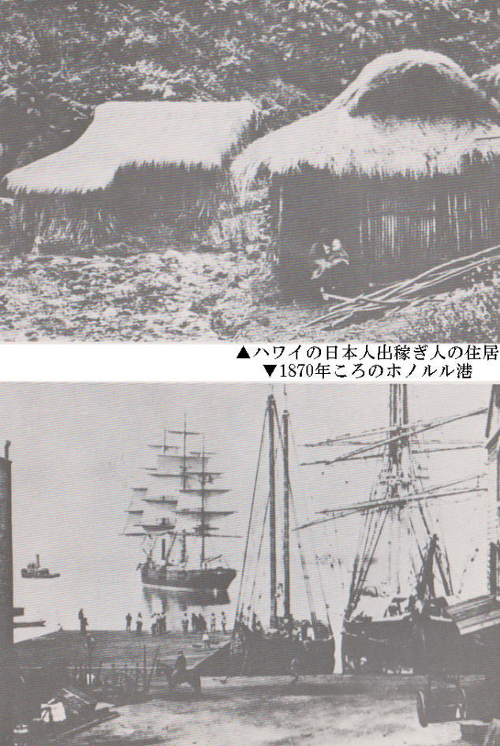

| 元年者たち: 明治元年にハワイ王国に連れ去られた日本人百五十三人の物語 | |
| 佐賀純一 | |
| (2015) | |
明治元年四月二十五日、百五十三人もの日本人がハワイ王国へ連れ去られるという一大事件が発生した。
事件の張本人は「在日本ハワイ王国総領事」を名乗るユージン・ウェン・リード。通称ベンリュウ。
ベンリュウは江戸幕府から下付された百八十人の渡航免状の再下付を新政府に申請していたが、当時の日本は戊辰戦争の最中にあり、新政府軍は上野に立て籠もった彰義隊との決戦を目前にしていたため、ハワイ王国への出稼ぎ計画など微塵の考慮の余地も無い切迫した状況にあった。
業を煮やしたベンリュウは「天竺出稼ぎ」に応募し審査に合格した百五十三人の日本人を移民輸送船サイオト号に乗船させ、渡航免状の下付と出港許可を強く要請した。だが明治政府はこれを無視した。
ベンリュウは無許可のままサイオト号に出港を命じた。
渡航免状なしにハワイ王国に連れ去られた日本人は砂糖黍耕地の重労働にあえぎ、鞭打たれ、一年を経ずして三人が死んだ。
奴隷解放戦争を経験したアメリカ社会はこの問題に大きな関心を寄せ、国際社会は倒壊した幕府に代わる新政府に処理能力があるか否か、冷ややかに見ていた。
難問解決の成否は、日本人出稼ぎ人総元締め牧野富三郎、新政府外国事務局判事寺島陶蔵、この二人の肩に掛かっていた。
在日本ハワイ王国総領事兼日本人出稼ぎ人派遣特命全権大使
ユージン・ウェン・リード 通称・ベンリュウ
外国事務局判事 寺島陶蔵宗則 後外務卿
日本人出稼ぎ人総元締め 牧野富三郎 恋人おゆう
人夫半造 組頭幸次郎 元侍青柳藤吉 密航者市五郎
漂民仙太郎 通訳
アームストロング夫人 八年の横浜滞在経験者 通訳
サンフォード・ドール弁護士 後のハワイ共和国初代大統領
耕地監督・大ルナ ウィーバー
出稼ぎ移民召還使節 上野啓介景範 後のドイツ大使

「不思議な町だ」横浜に足を踏み入れた者は誰もがそう思う。幕府が大政奉還したとはいえ、天下は大乱。東海道・甲州道は武装した官軍が江戸に向けて進撃し、これを迎え撃とうとする佐幕派諸藩は上野の山に陣を築いている。江戸が火の海になるという噂もある。市中を逃げ出す人の列が絶えない。ところが横浜だけは別世界だ。居留地に通じる吉田大橋や谷戸橋には、イギリス、フランス、ロシア、アメリカなどの兵隊が警戒に当っているとはいうものの、一歩横浜の市中へ入れば天下の動乱などいささかも感じさせない。数年前まで海辺の寒村だったというのに、何という変わりようだろうか。
洲干弁才天の大門をくぐり、一の鳥居、二の鳥居を過ぎて池に渡した橋を渡ると、三百年を優に経ている松の老木がある。根方の縁台で参詣の客が団子を食っている。南側にケヤキの大木がある。さわやかな新芽が緑色の霞となってあたりを包んでいる。
大木の下に、ひと坪程の舞台が見える。木組みに赤幕を張った粗末な小屋の袖で渋面の年寄りが念仏のような、唄のような、何とも不思議なものをうたっている。
あわれなるかなや ヘそあなくどき 国はどこよと たずねてきけば 国はうちまた ふんどしごおり だんべ村にて ちんぼというて おそれおおくも もたいなくも 天の岩戸の 穴よりはじめ 亭主大事に こもらせたまい ふじの一穴 大仏殿の・・・・
舞台の上には絹の薄物を纏った若い女がひとり。まるで白狐が化けて出たような厚化粧である。顔があんまり白いので、目玉がやけに青く見える。頸が長い。乳房が薄物の下でふっくらと盛り上って、乳輪が桃色に染っている。へその部分に穴があいている。直径五寸ばかりの丸い穴で素肌がむき出しになっている。女は人形のように無表情にこっちを見ている。形のよい腰と太腿が後ろの赤い幕に浮き立っている。
見物人は数間離れたところから女めがけて銭を投げる。銭が女のへそか周辺の素肌に当れば、銭は倍額になって戻ってくる。当らなければ取られ損だ。無論、銭はむきだしのままではない。あらかじめ用意された赤い紙に包んで投げなければならない。赤い紙の値は三文、べらぼうな値段だが、客は女に向かって投げてみたいという欲に負けて、舞台下で唄っている老人から、三枚、五枚と買う。
客の後ろの方に大きな体の男が口をだらしなく開け、うっとりと女を見ている。銭が今にも当たりそうになると一瞬仁王様のような顔になるが、女が身をくねらせて赤い包みの銭をかわして見せると、ほっとため息をもらすのだ。
「おい、半造」
舞台の下の老人は見物の客足が途絶えたのを見計らって大男に声を掛けた。
「おまえ、いつまでそこにいるつもりだ」
「イ、いつまでと、イ、イ、いわれても・・・・」
「普段世話になっているとはいえ、これは商売だ。いくらか置いて行け」
「オ、おれは、ケ、ケ、見物にきたんじゃ、ネ、ネ、ねえ」
「じゃあ何しに来たんだ。お前がいくら娘に惚れてもだな、おゆうはおめえにはしょせん高嶺の花だよ。先生が天竺出稼ぎの元締めなんぞにならなければ女房にしてもらうつもりだったが・・・・釣り落とした魚は・・・・さあ、早くどこへでも行ってくれ。おめえみてえな大男がいつまで居られちゃ、客が逃げちまうよ」
「ナ、なんでえ、毎日手伝って、イ、いるのによ、オ、俺はな、ここ来たのは、ベンリュウが富さんを呼んでこいというので、ササ、探しに来たんだ」
「あの山師がまた来たのか」
「富さんは出稼ぎ人のオ、親分になったのに、カ、カ、勝手に船を下りて戻らねえから、オ、オ、怒ってるんだ」
「そうならそうとこんなところにとぐろまいていると日が暮れるぞ。先生ならあっちだ。早く呼びに行け」
老人にづけづけと言われて、半造は女の方をチラッと見ると本社の方へのそのそと歩いて行った。
白木造りの本社の周りは青々とした松林である。すぐ後ろが海、波の遥か彼方に神奈川の青木町、新町、子安あたりがうっすらと見える。
松の大木の前に男女が群れ集まっている。人垣の真中に、三十半ばの男が長い篠竹を右手に立っている。髪は総髪にして後ろで無造作に束ねている。洗いざらしの木綿の着物を片肌脱ぎにして、左手の指に銅銭をつまんでいる。
「さあさ、ご参詣の方々、また、そちらのご老人も、もそっと近くへ寄ってごろうじあれ」
男は物見高い見物人をぐるりと見渡すと流れるような口ぶりで口上を述べ立てる。
「ここに取りいだしたるは、一本の棒、この棒にて妙技をごらんに入れる。誰ぞ、松の枝の上まで銭をほうり上げて下さらんか。それがしこの篠竹で銭の穴を通してご覧に入れる。運良く棒が銭の穴に通った時には、銭は当方が頂く。しくじった時には倍にしてお返し申そう」
男は人々の顔を見回した。誰一人男の声に応ずる者は居ない。どうせ例のガマの油同様、口上ばかりで何かを売ろうという魂胆だ、誰もがそんな目をして、押し黙っている。すると、男は左手に持っていた十文銭をさっと空中へほうり上げた。銅銭は昼下りの青空に光の輪を描きながら舞上り、くるくると回って落ちてきた。男はすすっと足をすべらせると息を止めて眺めている見物衆の目の前で、ふんわりと篠竹をおどらせた。と、銭はまるでその棒に扱い込まれでもしたように、カラカラと快い昔をたてて突き通った。ため息とも感嘆ともつかぬどよめきが人々の胸から漏れた。
見物人は先を争って銭を空へ投げ上げた。無論、男も神ならぬ身、五、六度に一度はしくじることもあったが、大方は男の意の如くなった。
「とみさん、ト、とみさん」
半造は見物人を押し分げて棒を持った男の方へ近寄っていった。
「ベ、ベ、ベンリュウが、ナ、長屋へ来たぜ」
「そうか」
男は懐から手拭いを出し、顔の汗をぬぐった。
牧野富三郎、横浜で代書業を営む仙台藩脱藩の浪人者である。『ハワイ出稼ぎ人の元締めになってはくれまいか』という話を世話人木村庄兵衛から聞いたのは半年前だった。出稼ぎ計画を立てたのは元アメリカ領事館員ユージン・ウェン・リード、通称ベンリュウ。
「ベンリュウは大山師だ、係わり合うととんでも無い面倒に巻き込まれるぞ」、と言う者がいる。銀相場で大儲けしたり、外輪蒸気船をどこからか持ってきて横浜の商人に売りさばいたという噂は本当らしい。だが、山師にしては大まじめな略歴もある。「商用会話」「和英商和」この一対の辞書は横浜商人が異人と商売するのに便利なものだが、他ならぬベンリュウが作ったものだ。「アメリカ事情」「海外事情一般」その他詳細な世界地図も発行している。日本語は恐ろしく達者で、初対面の者はベンリュウの流暢な江戸弁に度肝を抜かれてしまう。そのベンリュウが太平洋の島国に出稼ぎ人を送る計画を立て、人夫元締めに牧野富三郎を選んだのだ。
「そうか、ベンリュウが来たのか」
富三郎は篠竹を投げ捨てて歩き出した。
池の端にさしかかると女が赤い幕の後ろで口唇を紫色に染めて震えていた。
「どうした、おゆう」
「おへその真ん中に当てられちやった」
女は悔しそうに言った。これを聞くと半造は顔色を変えて、「いったい、ソ、それは、ド、ド、どんな奴だ」
「知らないひと」
「オレがいたら、タ、タ、ただではおかなかったのによ」
「ばかねえ」
そんなことしたら、明日から商売が上ったりになっちまう、と彼女は寂しそうに笑った。老人が池の端で小便をして戻って来た。老人は娘を歪んだ眼差しで見ると、
「おゆう、おめえはまさか先生にくっついて、ハワイなんぞというところへ連れてってくれと頼んだんじゃあるめえな」老人は長年の苦労で深い皺が重なり合い、茶色くなった額越しに娘を見た。「おめえが居なくなったら、おれは生きちゃいけねえんだ。馬鹿な気持ちを起こしてくれるなよ」
「何の話、もういいじゃないの、帰ろう、ね、富さん」女は言いながら富三郎を見つめた。悲しげな美しい目をしていた。富三郎は黙って歩き出した。
不動長屋は本町二丁目町会所の裏路地にある。表通りには茶屋、酒屋、旅籠、飯屋などが立ち並び、美しい暖簾を掛け、屋号の大文字を染め抜き、大八車や旅人、町人、小僧などがひっきりなしに通る。しかし路地へ一歩踏み込むと、聞こえるのは子どもの泣き声と井戸端会議のかん高い声ばかりだ。
願人坊主の由蔵が木魚を叩きながら阿呆陀羅経を唱えている。
「チャカポコチヤカポコ チヤカボコボコ さてもみなさん この世の中には むだにうちやる物とて更にないぞい 早い話が落ちてる藁しべ・・・・あれ、とみさん、やっとお帰りだね」
由蔵は阿呆陀羅経をやめて、とんきょうな声で叫んだ。由蔵は出稼ぎに応募して移民船に乗り込んだ一人である。
「お前も降りたのか」
「降りたんじゃねえ。元締めを連れ戻しに来たんだよ。みんな船に閉じ込められて十日も経つのにさっぱり船は出そうもねえ、おまけに肝心要の元締めが降りちまったから、まとまりがつかねえ。それで組頭たちがどうなるんだと心配して、国蔵が俺に、『元締めを連れて来い』って大変な剣幕なんだ・・・・それはそうと、長屋で侍が待ってますぜ」
男が長屋の前に立っていた。黒無地の羽織に仙台平の袴を穿ち、腰には立派な刀を帯びている。
「君か」
「待ち兼ねたよ」
二人は親しげに挨拶した。男は星恂太郎。仙台藩から西洋の学問を学ぶために横浜に遊学し、べンリュウの書生となった。星と富三郎とは仙台の学問場養賢堂の同窓、共に坂英力道場の門下生でもある。
「おゆうさん、茶を借りて来てくれないか」
表通りの方から由蔵の阿呆陀羅経が聞こえてくる。
チャカポコチャカポコさてもみなさん この世の中には むだにうちやる物とて更にないぞい・・・・
「牧野君、ベンリュウの屋敷に行ってもらいたい。ところで私は明日、仙台へ立つ。坂先生から書簡が届いたのだ」
「帰ったら薩長と戦争だぞ」
「やむをえん」
おゆうが畳の上に、そっと茶碗を置いた。
「ベンリュウは何を考えていると君は思う」富三郎は茶を一口飲むと尋ねた。「船に乗り込んでから十日も経つ。もし許可が下りなければベンリュウはどうするつもりだ。君なら何か分かるだろう」
帰参を決めた者に出稼ぎの話を訊ねるのもどうかと思ったが、聞かずには居られなかった。星は富三郎を見つめ茶を一口飲むと、
「官軍の許可は下りない。だが、ベンリュウがやすやすと断念する男ではないことぐらい君も知っているだろう」
「それはそうだが、しかしどうするつもりだ」
「ベンリュウは日本の貧民を太平洋の真ん中にあるハワイという島国へ送り込み、土民の王国を日本人の力で豊かにしようという壮大な計画を立案した。バカバカしい、山師が今度は何の世迷い言だと、誰も相手にしなかった。「海外新聞」の岸田吟行も大法螺吹きがとんでもないことを言い出したと一笑に付した。ところがベンリュウはアメリカ領事ファンケンバーグを説得し、いつの間にか「ハワイ王国総領事」「日本人出稼ぎ人派遣特命全権大使」を兼任する大役に着任すると、政局の混乱に乗じて三百人の渡航許可証を手に入れることに成功した。そして時を移さず世話人に出稼ぎ人を集めさせ、ヘボン先生推薦の医師に健康診断をさせた上で輸送船に乗り込ませた。輸送船がひと月早く横浜に入港していたらこの計画は成功していただろう」
「君の言う通り、サイオト号が約束の期日に入港していたら今頃は太平洋の真ん中だ。しかし船は一寸も動いていない」
「これからがベンリュウの腕の見せ所だよ。そんな時、君が下船したのは理解できん。何故君は役割を放棄して下船したのだ」
「船に乗っていたのでは様子が分からん。組頭たちに訊かれても答えようが無い。だから下船してベンリュウを訪ねたが留守だった」
「ベンリュウと私は神奈川裁判所総督府を訪ねたのだ」
「総督府、それで、何か良い返事が得られたのか」
「いいや」
「そうだろうな」
富三郎は唇を噛んだ。神奈川裁判所総督は蛤御門の変で都落ちした東久世通禧だと聞いている。つまり相手は得体の知れぬ公家、それに薩摩だ。
「まだ打つ手があると思うか」
「無論手がかりがある。横浜に進駐して来た官軍の判事とベンリュウは顔見知りなのだ」
「・・・・」
「詳しいいきさつは分からないが、外国事務局判事寺島陶蔵とベンリュウは昵懇の仲らしい」
「しかし、事務局判事がどう判断しようと総督が反対すればどうにもなるまい」
「公家は飾り物に過ぎん。実権は薩摩の寺島陶蔵が把握しているという事が総督府を訪ねてよく分かった。寺島は薩摩藩先代藩主斉彬の主治医だったが、語学に堪能であったため、文久元年に幕府が開港開市の件に関して西欧ヘ派遣した使節団に翻訳方として加わった。しかも薩英戦争の時には英国戦艦に接近し、捕虜になった経験がある」
「では、君とベンリュウは総督府を訪ねて、寺島なにがしと話し合ったのか」
「寺島陶蔵は姿を見せなかったが総督府の役人たちはどこか妙なそぶりをしていた。おそらく寺島陶蔵とベンリュウの関係を知っているのだろう。思うに、ベンリュウの計画は頓挫したとはいいきれん。それどころかベンリュウがあくまでもこの計画を実現するつもりでいる証拠がある」
「証拠とは」
「出稼ぎ人を補充しようとしているのだ。君が下船した後、男が二人、夫婦者が一組逃亡した。どのようにして逃げたのか分からぬが、ベンリュウはこれを知ると激怒して、君に補充させると言っていた。これは総督府から帰ってきて後の話だからね。だからベンリュウはこの計画を諦めたわけではない。もしかしたら、数日のうちに予測もしない出来事が起きるかも知れない」
「それはどういう事だ」
「私にも分からない。まあ、それはともかく、正直な事を言おう。ベンリュウの出稼ぎ人計画を聞かされた時、胸が高鳴った。行きたいと思った。だからもしも君ではなく、私を選んでくれたら、仙台に帰らず、ハワイへ行っただろう。だが、ベンリュウは元締めの大役を君に任せた。君はハワイへ行き、私は仙台に戻る。いずれにしても、今日が今生の別れだ」
星恂太郎は翌日、横浜を去った。仙台藩帰参後、彼は坂英力と謀って最新鋭の鉄砲で武装した千人の精兵から或る戦闘部隊を編成したが同年九月仙台藩は降伏、星は部下百五十と共に藩を脱出し、榎本武揚の率いる徳川艦隊と合流、函館へ向った。
五稜郭陥落後、恂太郎は北海道に留まり、製塩業の研究と実用化に情熱を燃やした。彼が病を得て急逝したのは明治九年の事である。享年三十六歳。富三郎と恂太郎の再会がなかったことは改めて述べるまでもない。
夕陽が商家の屋根に赤く輝いている。
本町四丁目の中居という鳥屋の前に、おゆうが立っている。厚化粧をすっかり落し、唐人髷に錦糸の髪飾りをつけ、斜矢絣の小袖に紫根染の帯を締めている。どう見てもこの美しい娘が弁才天の池の端で裸を曝していた女だとは思えない。異人の水夫が五、六人、おゆうをじろじろ眺めている。
「ほら、富さん、こっちへ来て」
おゆうは富三郎の袖を捕まえて庭の奥を指差した。
「また新しい鳥が入ったのよ」
中居の店は中庭全体を大きな金網ですっぽり包んで、小鳥を自由に遊ばせている。正面は金網の代りに大硝子を張り、中の様子を手にとるように見せる工夫をこらしている。庭の中には池があり、小山があり、松楢榛などの林もあって、小鳥の声が絶え間なく響いている。
「このへんな鳥、オームの一種かしら」
おゆうは止まり木に羽根を休めている七色の鳥を指差して言った。異人の男女が庭の中に入って、鳥の品定めをしている。
「おゆうは鳥が好きだな」
「先生はベンリュウの屋敷へ行くの」
「そうだ」
「あたしも行っていい？」
「仕事の話だぞ」
「いいでしょう」
おゆうは富三郎の着物の袖にぶら下るようにくっついて来た。
「天竺ってどんなところなの、富さん、ねえ、教えてよ」
ハワイを天竺と呼ぶのは、理由がある。ハワイの砂糖黍耕地へ出稼ぎを希望する人夫を募集するに当たって世話人たちの頭痛の種は宣伝文句をどうするかだった。「ハワイ国への出稼ぎ」などと言ったところで分るわけがない。そこでベンリュウが思いついたのが「天竺出稼ぎ人夫大募集」の標語である。世話人たちは手をうって感心した。唐天竺という言葉には魔力がある。案の定何百人という応募者が押し寄せた。
『だが、その天竺行きもどうなる事か』
「ずいぶん立派なお屋敷ね」
おゆうは目を見張ってあたりを眺め回した。裸身の大理石の彫像が木の間にいくつも立っている。支那人の下男が二人を案内した。
応接室に通されると若い秘書が姿を見せた。ベンリュウがハワイ王国総領事に着任して以来片腕となっているゴードンという男である。
「領事は海外新聞の岸田さんと約束のため出かけました。少しの間お待ち下さい」
ゴードンは二人に豪華な椅子を勧めた
「あなたも、どうぞこちらの椅子に・・どうぞ」
言いながらゴードンはおゆうの美しさに驚いて、ちょっと前屈みになって彼女に顔を寄せると、
「私はアレックス・ゴードンと申します。あなたは何と言いますか」
「私は、おゆうと申します。アレックス・ゴードンさん」
「ありがとう。あなたのように美しい方にお目にかかれてとてもうれしいです。それに私は横浜にきて、日本人にはじめてフルネームで呼んでいただきました。とても感動しました」
ゴードンはおゆうに向かって深々と頭を下げてみせた。
『異人が油断できないのはこの図々しさだな』富三郎はあきれる思いだった。
「岸田さんのところなぞ、何の用です」と富三郎は訊いた。
「新聞を発行するのです」
「新聞？」
「アメリカでは新聞が毎日発行されています。新聞は世間の人々に大きな影響を与えますから、領事はご自分の考えを理解してもらうためにこの横浜で新聞を発刊するのです」
ゴードンの話によれば、出稼ぎ問題がうまく運ばないのは、広く一般にこちらの意見を知らせる手段がないからであるという。
「ご承知かとも思いますが、横浜には、よからぬ噂が広まっています。『ベンリュウは日本の貧民を奴隷として、ハワイヘ売り飛ばす算段をしている』こんな噂が広まり出したのは日布親善協定が結ばれた少し後、慶応三年も暮の頃からです。勿論、その噂の出所は英国公使館なのです。こうした噂を無くするためにも新聞は必要なのです」と、ゴードンは言った。
英国は太平洋の戦略基地として、是が非でもハワイが欲しい。そもそもハワイ諸島を最初に発見したのは英国の探険家、キャプテン・クックだ。一七七八年、彼は戦艦二隻を率いて南太平洋を航行中、雲海の彼方にカワイ島を発見した。キャプテン・クックはすぐさま調査を開始し、ハワイ諸島の地形、土人の人口、生活状況、動植物の分布などの詳細な調査を行い、この島々を時の英国海軍卿、モンターギ伯の別名をとり、「サンドウィッチ群島」と命名、全世界にその存在を知らしめたのである。
「発見後から、英国はハワイ諸島を自国の保護領とするためにしばしば戦艦を派遣しています」
一八四三年には英国海軍の提督ジョージ・ボォレット卿が戦艦キャリスフォートを率いてホノルルに上陸。英商人シムソンと図ってハワイ王国政府を威嚇し、王国を英国保護領とすることを宣言した。宮殿にはユニオンジャックが飜り、ゴッド・セイブ・ザ・クインのメロディがハワイの空に流れた。
しかしこのような強引な侵略は列強の非難の的となり、英国政府は先の保護領宣言をやむなく撤回、ハワイ王国の独立を英国国王の名によって認めると全世界に公表した。
「こうした出来事の間にもハワイを巡って国際紛争がありました。ロシアが一度、フランスが二度、それぞれ一方的にハワイ諸島の領有を宣言し、基地を建設し軍艦を派遣して領有しようとしたのです」
「ふむ」
「彼らは植民地拡大を国策にしています。ですから太平洋にもその手を広げようとするのは当然の成り行きなのです。なにしろハワイ諸島は戦略上の要衝ですからね。列強が見逃すわけはありません。ロシアとフランスはイギリスが手を引くのを見てすぐに手を打ったのです」
「・・・・」
「しかしもちろん英国はこれを認めませんからすぐさま艦隊を派遣しました。アメリカも厳重に抗議しました。こうなってはどうにもならないので仕方なく、フランスもロシアも引き上げましたが、いずれの国にとっても、ハワイは大きな獲物ですから、まったく諦めてしまうことはできません。こうしたわけで英国は、アメリカ人がハワイの権益を独占している現状を憎んでいます。アメリカ人が経営する砂糖耕地に出稼ぎ人を送り込もうとする領事の計画にイギリスが反対するのはこうした世界戦略の成り行きなのです」
「ハワイがそれほど重要なところとは知らなかった」と富三郎はつぶやいた。
「この地図をごらんになって下さい。ハワイはアメリカ大陸と日本との真ん中にあります。丁度真ん中でしょう。ほらね」とゴードンは地図を指で示しながらおゆうを見た。
「ハワイ諸島の実権は現在殆どアメリカ人が握っています。王位はポリネシア人の手に残されているのですが、閣僚の大半はアメリカ人です。教育者、宣教師、裁判官、医者、貿易商、それに砂糖黍耕地の所有者も圧倒的にアメリカ人が多いのです。そうした国へ、この海を越えて日本人労働者が入って勤勉に働けば、ますますアメリカが経済的支配権を広げます。英国はそれを恐れているのです」
「大きな話ですね」とおゆうがためいきまじりにいった。
「とても大きな計画です。おゆうさん。今後の歴史を考えると、計り知れないほど壮大な計画なのです。もしも今回の出稼ぎ人計画が成功して日本とハワイ王国の交流が盛んになれば、戦略的な話は措くとしても、そこから莫大な利益が生じます。もちろん経済的な利益ばかりではありません。ハワイで沢山の日本人が働くようになれば、日本とアメリカはとても近くなります。つまり、出稼ぎ人を送り込む計画の成功は、日本とアメリカ両国に計り知れない未来をもたらすのです」
「未来・・・」
「今の日本は革命の最中ですからハワイ王国が将来の日本にとってどれ程重要な国になるか、誰もそんな事を考える余裕はありません。しかし、出稼ぎ人が働くようになれば、それはすぐに分かるようになります。ですから領事はどんなことをしても今回の計画をやり通そうと考えているのです」
話を聞きながらおゆうは地図を見ていた。胸の中に何かこれまでに感じたことの無い熱い渦巻きが突き上げて、息をするのを忘れていた。
ゴードンはそんなおゆうの顔があまりにも美しく、歌麿の浮世絵美人に似ているような気がして、目を離すことができなかった。おゆうは指を広げ、人差し指と親指で日本とハワイの距離を測った。それからそのままハワイとアメリカ大陸に指を移すと、
「ほんとうに、真ん中なのね」と言って目を輝かせた。富三郎はおゆうのきらきら光る眼差しを見て、内心狼狽するほど驚いていた。こんなに生き生きとしたおゆうを見た事は一度もなかった。
「おゆうさん、私の話は、あなたにとってお役にたったでしょうか」とゴードンはおゆうに尋ねた。おゆうは、にっこりして、
「この島はほんとうにあるのですね」
「もちろんです。見たこともないほど美しい島です」
「ゴードンさんはハワイに行った事はありますか」
「勿論。ひと月ほど滞在したこともあります」
「ひと月も」
「ホノルルは夢の世界です。何もかもが美しい。海の色はどれほど高価な油絵よりも輝いています。椰子の木をわたる風の音と波の音を聞いていると、すばらしい音楽よりも心が安まります。町の中にはプルメリアの花の香りが漂っています。彼方には山々がありますが、その山の間に虹が架かります」
「まるでおとぎ話を聞いているよう」
「おとぎ話ではありません。ほんとうの話ですよ。私は、あなたをホノルルに連れて行きたい。あなたが珊瑚礁の砂浜で波と戯れる姿を見てみたいのです」
ゴードンはそう言いながら富三郎をちらっと見た。とその時、石畳を踏む馬蹄の音が響き渡った。ゴードンは急いで席を立つと出て行った。
ベンリュウが従僕の黒人サムソンを従えて部屋に入って来た。彼は富三郎を見るなり、
「牧野さん、サイオト号の船長が待っているぞ」と言いながらおゆうに目をやって、「この娘さんは、君の愛人かね」と尋ねた。
「同じ長屋の娘ですよ」
「別嬪さんだな、名は？」
「おゆうと申します」
「そうか、おゆうさん、あなたもいっしょに行きましょう。黒船に乗ったことはないでしょう。ところでゴードン、言いつけたものは全部用意したかね」
「はい。ご用意いたしました」
「小判もだな」
「はい」
「サムソンに持たせろ」
「分かりました」
夕闇が海の上に青黒く落ちている。港に碇泊している十数隻の商船や軍船のランプの灯が波に映ってゆらめいている。サイオト号はフランス商船の三、四十間東側に錨を下している。
一八四九年（嘉永二年）アメリカのメイン州ブランスウィックの造船所で建造された八五五屯の木造帆船である。つまり老朽船と言ってもいい部類の船だ。
ベンリュウ、富三郎、おゆう、ゴードン、従僕サムソン等を乗せたボートが舷側に下がった階段に着くと、水夫が素早くロープを鉄棒に巻きつけた。甲板に上ると出稼ぎ人たちが先を競って船底から顔を出した。
「船長がお待ちです」水夫は先に立って案内した。
「親方元締め、おらたちゃこれからどうなるんです」
「その話はあとだ」
船長室に入ると、がらんとした部屋の真中に丸い頑丈なテーブルがあった。テーブルの上に、革の長靴がのっかっている。長靴の間に、赤い髭面の鷲のような眼をした男の顔が見える。
レーガン船長。海焼けした花崗岩のような額。豹のような鋭い眼。武器、弾薬、奴隷、毛皮、香木、象牙・・・・金になる仕事なら何でも引き受ける。地球の果てまでも行く男である。
船長は葉巻を吸っている。煙を吐きながら、彼はベンリュウの顔をじろじろと眺めている。
「乗組員は逃亡したりしないだろうね」とベンリュウは船長に訊ねた。船長は苦虫をかみつぶしたように唇をゆがめながら長靴をテーブルから降ろすと、
「船は、いつ出せるんだ！」と嗄れた声で言った。「入港してもう半月だ。人夫を乗せて十日も経つ。これ以上待ってはいられねえぞ。いつ出航できるのか、今すぐに答えてもらおうか」
これを聞くとベンリュウは冷ややかな眼差しで船長を見た。「君が約束通り、ひと月前に入港してくれたら、こんなことにはならなかった。出港出来ないそもそもの原因を作ったのは君だ」
「そんな話はどうでもいい」
レーガン船長は立ち上った。
「こいつぁ蒸気船じゃねえ。風が吹かなけりゃ、動きゃしねえよ。遅れたのは風のせいだ。こいつが時代遅れの船だってことはあんたも重々承知だろう」
「レーガン船長。私はそんな言い訳を聞きに来たのではない。風があろうとなかろうと、私の決めたその日に、この船は出港してもらう」
「なに、出航だと、いつだ」
「明後日。君のサイオト号は明後日の朝、横浜を出港する」
「明後日、するてえと、五月十七日に出航できるのか」
陽暦五月十七日は、陰暦四月二十五日に相当する。
「しかし、妙だな、なぜ突然許可が下りたのだ」
船長は探るような目つきで相手を見た。港の噂では新政府の役人はベンリュウの計画に反対しているという。船長仲間の者たちの中には、「革命が起きているのに、渡航許可がでるわけがないだろう。いい加減に人夫たちを降して他の仕事を見つけた方がいいぞ」と、忠告する者も居る。
「どうやって許可を手に入れた」船長は椅子に腰を下ろしながらベンリュウに尋ねた。「金か」
「金は使わんよ」
「じゃ女か、それとも宝石でもくれてやったのか」
「ハハハ・・・・」
ベンリュウは天井を向いて愉快そうに笑った。が、不意に笑いを止めて真顔になると、レーガンの顔を凝視した。
「人夫の渡航許可なんぞ、百年待っても官軍は出さん」
「何だと」
「許可は出ない」
ベンリュウの声は冷ややかな程落着いている。船長は目を剥き出し、乱暴に立ち上ると大声で叫んだ。
「貴様！ おれを馬鹿にするのか！ 許可が出ないで、船を出せとはどういうわけだ！」
「よく聞くのだ、船長」
「弁解なぞおれは聞かんぞ」
「私が調べさせたところによると、このサイオト号の出航許可は、明日下りる事になっている」
「・・・・」
「しかし許可は、サイオト号の出航許可だ。人夫の渡航許可ではない」
「という事は、どういう事だ」
「簡単な事さ。サイオト号は明日以降、いつ横浜港を出港してもかまわない。がしかし、出稼ぎ人夫を乗船させている限り、出港を認めるわけにはいかん。出港したければ人夫共を全員降した上で出港しろ、と、新政府の役人共はこう言いたいらしい」
「成程」船長はベンリュウを睨み付けながら頷いた。「極東の黄色い人間の中にも、少しは知恵のある奴が居るらしいな。船は出てもいいが人夫は降せか、こいつぁいいぜ」
船長は突然形相を変えてドンとテーブルを叩いた。
「おれはどっちでもかまあねえ。人夫が乗ろうが乗るめえが、知ったこっちゃねえ、だが極東の果ての日本くんだりまでやって来て、一銭の金も稼がずに帰るわけにゃいかねえ。船員に払う給料もあれば、船の修理代も相当にかかる。約束の八千九百ドル。この金は即刻払ってもらう。払いさえすりゃ、黙って帰してやるさ」
ふふん、と、ベンリュウは鼻先で笑った。
「金を払わなければ、このおれを船から降ろさんというわけか。案外馬鹿な奴だ」
「馬鹿だと！この糞野郎が、俺を本気で怒らせたいのか」
「船長、私は金を払わないなどと言ってはいない。勿論、金は約束通り払う。金は払うが人夫も連れてってもらう」
「何だと？人夫は連れて行けだと・・貴様は今、人夫の渡航許可は出ねえと言ったばかりじゃねえか」
「出なくとも結構だ。国際法違反ではない。国際法の慣例によれば、正規の外交交渉で締結された条約については、その政府が交代し、あるいは革命が起って新政府が樹立されても、旧政府が締結した条約は新政府がこれを履行する、これは日本の江戸幕府と列強との間に交された様々な条約にも当然あてはまることであり、日布条約に関しても同様だ。江戸幕府は、三百人分の渡航免状を私に与えた。官軍の役人共が何と言おうと、渡航免状は生きているのだ」
「なるほど、そんな魂胆なのか。だが、俺にはそんなことはどうでもいい。国際法だの、新政府だの、おれの知ったことじゃねえ。要は、お前が約束の金を払うのか払わねえのか、それだけだ。他の事は、糞でもくらえだ！」
「無論、金は払う。だが金を払う以上、約束通り人夫も運んでもらう」
「断る」
船長は葉巻を床に投げ捨てると、長靴の底で乱暴に踏み潰した。
「ここはアフリカでもインドでもねえ。黄色い奴等が住んでるが一応は独立を保ってる。イギリス艦隊は薩摩と戦争してこっぴどくやられたそうだ。そんな国から許可もねえ人間をかっさらってハワイまで運んだとあっちゃ、二度とここへ戻れねえ。港のイギリス人らはお前の事を奴隷商人だと噂してたが、おれはおめえの片棒をかつぐのはごめんだぜ」
「船長、君は私が期待していたより弱腰だな、しかし、君が船長として心配するのは当然だ。だから私は君に、無茶をしろと期待しているわけではない。船長、よく聞いてくれよ。船の出航許可は出るのだよ」
「貴様は今、でねえと言ったばかりじゃねえか」
「ゴードン君、船長に見せてやり給え」
ベンリュウがそう言うと、ゴードンは黒い鞄からぶ厚い札束をいくつも取り出して、テーブルの上に積み重ねた。
「この通り、出航許可は、明日出るのだ、レーガン船長」とベンリュウは言った。「人夫の渡航許可は、既に出ている。江戸幕府とそれを引き継いだ新政府から既に出ているのだ。許可証はここに私が持っている。これだよ・・・しかし、君は日本文字が読めない。従って、この件に関する最高責任者である私が、その渡航許可証が正式のものであることを確認した。それに従って、君は出航したのだ。だから、日本政府が君を咎める理由はどこにもない。全ての責任は「ハワイ王国総領事」であり同時に「日本人出稼ぎ人派遣特命全権大使」の任にあるこの私にある」
ベンリュウは手の切れるような紙幣を幾百枚も重ねた。全て十ドル紙幣である。それからゴードンに命じて、サムソンが運んできた鞄の中から小判を三〇〇枚机に重ねさせた。船長は息をのんで金の山をみつめた。
「八千九百ドルの半金、四千四百五十ドル、ここにある。残金は出航の朝支払う。この小判は西欧の金の倍の純度がある。それから船長、君にはボーナスを支払おう」
ベンリュウは懐からぶ厚い札束を引き出した。
「五百ドル。私から君への感謝のしるしだ」
五百ドル。大金である。出稼ぎ人夫の一か月の給金は四ドル、女は三ドルである。五百ドルは人夫百二十五人分の給金に相当する。
傭船料の八千九百ドルはその半金が船主の懐へ入る。水夫の給金、船の修繕、塗装、ロープ、帆の張り替え、その他細々した出費を除くと残金はさほどのものではない。ところが今、目の前に、黄金の小判の山と五百ドルもの大金がころがっている。この金が、全てこの俺の懐に・・それに渡航許可は出たとこの書類には書いてあると・・・。そうか、そうとも、俺はこの男を信じて船を出す。俺は何の罪に問われることもない・・・そういう話か・・・。
「分った」とレーガン船長がうなずくと、ベンリュウは満足げに微笑して、
「分かればいい。で、いつ出港できるかね」
「明後日に出航する。風がなくても出してみせる。積荷があったら明日のうちにやってくれ。陸に上がっている水夫を今夜のうちに呼び戻す」
船長は札束と小判を机の中へ押し込み鍵をかけた。
「牧野君。今お聞きの通りだ。目的を遂げるためにはこの他に方法はない。後の事は私が始末する。君は出稼ぎ人の事だけを心配してくれればいい」
「領事、私は脱藩浪士です。今さら藩や国に守ってもらおうとは思わない。しかし、乗り込んだ出稼ぎ人たちは何も知らない。新政府に無断で出国すれば、彼らに危難が及ばないか、それだけが気がかりです」
「君が出稼ぎ人の身になって考えるのは当然です。彼らがどうなるかについて心配するのは当たり前でしょう。けれども出稼ぎ人たちはこの国に居たとしても食ってはいけない。だから天竺などというありもしない国への出稼ぎに応募したのです。彼らは自らの意志でハワイ領事の私と契約し、この船に乗り込んだ。これは牧野君もよくご承知ですね」
「無論」
「それなら問題はありません。どこかの国が私を誹謗し、悪評を流していますが、私は人夫を日本国から拉致するわけではありません。私は契約に基づき彼らを天竺、即ちハワイ王国に送り届け、三年の後には無事にこの国に連れ帰ると約束しました。ですから私はその約束を必ず守ります」
「領事、私はあなたが約束を違えないと信じています。しかしくどいようですが、無許可で脱国した者が三年後に帰国した時、官軍がどのように扱うか、それが気になるのです。この事に関しても問題が残らぬよう、話をつけてくれますね」
「ご心配には及びません。官軍も内乱が治まれば許可を出すつもりだったのです。外国官判事寺島陶蔵はその事を私に内々に教えてくれました。ですからそちらの事はまかせていただきたい」
ベンリュウの顔は自信に満ちあふれていた。富三郎はベンリュウの話に得心したわけではなかった。しかし今は領事の話を信じるしかなかった。
話が終わると富三郎は出稼ぎ人たちに説明するために急いで出て行った。ベンリュウはおゆうが扉に手を掛けて富三郎について行こうとするのを押しとどめた。
「おゆうさん。あなたは横浜に残るのですか」
「・・・はい・・」
「富三郎さんは元締めとしてハワイに行かねばなりません。そのあと、おゆうさんは孤閨を守って三年間を過ごすのですか」
「・・・」
「三年は長いですよ。しかし心配いりません。私が横浜におります。ハワイからの頼りはすぐにお伝えします。よろしいですね」
おゆうが胸をドキドキさせて出稼ぎ人の船室に急ぐと、富三郎は組頭を一室に集めて話しているところだった。
「明後日出航する。甲板には出てはならない。官軍の役人に疑いを抱かれぬためだ。良いな」
話が終わると、富三郎はおゆうを送り届けるため、ボートに乗り込んだ。港に大小の船が碇泊して灯りをつけている。
「この船はみんな海の向こうから来たのよね」
・・・そうだ、みんな大海原を渡ってきたのだ・・・富三郎の目に、船の灯りがひどくまぶしく見えた。
富三郎は長屋に戻ると筆十本と墨、硯、三年間の記録を書き付ける紙などを整え、煎餅布団に横になった。眠れなかった。不動長屋には二年住んでいた。代書暮らしも今思えば悪いものではなかった。芸者、洋妾、人足、下女、小僧、職人、様々な男や女たちに代わってさまざまな事を書いた。この長屋に骨を埋めるのかと幾度も情けなく思った。だが明後日は大海原だ。妙な気持だ。十日前船に乗り込んだ時は、こんな気持ではなかった。記録紙や筆を持ち込むのを忘れていたほどあわただしかった。だが、今は違う。
真暗な天井に、紺青の海原が見える。胸が高鳴ってますます目が冴えた。
富三郎が異人の国へ憧れを抱くようになったのは、仙台藩士、玉虫左太夫がアメリカから戻って、講義を養賢堂の片隅で聞いてから後の事だった。
「あの方の目は、いつも遠くを眺めていた」
富三郎は玉虫左太夫の間延びした穏やかな表情の奥に潜む確固たる信念を、その静かな声の中にひしひしと感じた。
玉虫左太夫は万延元年（一八六〇年）幕府が安政条約批准交換のためにアメリカに派遣した使節団に随員として加わり、帰朝後大番士に抜擢され、小姓組より養賢堂指南役統取に進んで、世界の大勢、日本の行くべき道を青年たちに諄諄と説いた。
当時の仙台藩は尊王攘夷を奉ずる桜田良佐一派と、開明主義を唱える但木土佐の勢力が激しく争い、開明派の玉虫は常に暗殺の危険にさらされていた。富三郎は自ら坂英力に願い出て玉虫の警護に当った。
ある夜の事、玉虫左太夫は自宅に戻る途中、警護の富三郎にしみじみと語ったことがあった。
「我々が日々暮らしているこの土地はあまりにも狭い。他方、世界は無限に広い。そこには大きな力が渦巻いている。仙台は静止しているが、世界は渦巻いているのだ」
「・・・」
「大きな力の渦巻きは文明国内の至る所に起きている。それが文明というものだ」
「力の渦巻き、でございますか」
「そうだ。渦巻きは力のぶつかりあいから生じる。文明国では誰もが自由に生きようとしている。貧者も、富者も、女も男も、みな自由に生きようとしている。その自由に生きようとする力が互いにぶつかり合って、渦巻きを作り、さらに新しい力を生み出す」
「・・・・」
「それがどうだ。我が藩では、自由な考えも、行動も、欲望もなにもかもが制限され、押しつぶされている。力はどこからも生まれようがない。君が日々見ている貧しさはこの藩が自ら招いたのだ」
玉虫左太夫は寸暇を惜しんで見聞記を書き記し、まとめていた。後の「航米目録」七巻である。富三郎は特に願って下書きを借り受け、むさぼるように読んだ。その幾箇所かを、今も覚えている。
「唖院（聾唖学校）へ行く。弟子三百人許、七、八才より二十才の者多し、皆手容を以って教ゆ。例えば、ａ字は大指を折り、ｂ字は食指を折るが如し。
敏才の者は一か年修業すれば文字を綴り、小事を弁ず。今日我国人来しを祝すべしと師たる者手示すれば、即ち卓子上にて、各其条を書し来る。其速やかなること瞬息の間なり。花旗国の人を捨ざるを知る」
富三郎の姉は生れつき耳が不自由だった。それで言葉を覚えることが出来なかった。富三郎はこの姉の背におぶさって家の中や庭を歩いた。姉は人に会うのを避けて生涯庭の外へは出なかった。姉は僅か十二才で死んだ。
富三郎は暗い天井をみつめている。
・・・・貧者も、富者も、女も男も、みな自由に生きようとしている。自由を求める力が互いにぶつかり合って、渦巻きを作り、更に新しい力を生み出す・・・・そんな世界をこの目で、もうすぐ見られる・・・
「太平洋の真中の島を、日本人の楽園にする」
ベンリュウは言った。それが真実になる日が、あるいは、来るかも・・・。
富三郎は眠っていた。破れ障子に月の光が射している。
「富さん」
いつの間にか部屋に忍び込んできたおゆうが細い声で言った。
「とみさん・・・起きて」
富三郎が目を開くと、おゆうが思いつめた眼差しで見つめていた。半ば破れた障子から青い月の光が忍び込んでおゆうの目玉がきらきらと光った。
「私を連れてって！あたし、富さんと行く」
「何」
「天竺へ行きたい」
「だが、おまえは俺に、『私は行かない』と二度もはっきりと言ったじゃないか」
「あの時は、おとっつぁんが居たもの」
「では、なぜ今、親父さんを捨てる」
「おとっつぁんなんかもういいの」
おゆうは富三郎にしがみついた。
「先生が居なくなったら、私は生きていられない。おとっつぁんにはもう散々尽くしたわ」
常松とおゆう親子は一年程前、乞食同然の姿で横浜へ流れて来た。弁才天の大鳥居の前で物乞いをしているところを、乞食の権三郎にとっつかまり、常松は半殺しの目にあわされた。
乞食はなわ張りが厳しい上に、上下の区別もきっちりと定められている。
ケンタ、ツブ、ダイガラ、ヅケ、シロイ、タカリ、ガゼ・・・・
神社や仏閣の入口で、物乞いが許されているのは、一番位の高いケンタの身分に属する者だけである。常松が権三郎一家に半殺しの目にあわされたのも、掟を犯したのだから仕方のない事なのだ。
権三郎に話をつけてやったのは、富三郎である。富三郎のいう事なら、権三郎は素直にきく。権三郎は、富三郎がとても好きなのだ。
「川越の呉服問屋の手代でしたがこのご時世で・・・・」
富三郎は常松親子を不動長屋へ連れて来ると大家に渡りもつけ、住まいの面倒も見た。
富三郎は常松という男の話がどこまで本当なのか分からなかった。なによりこんな男におゆうのような娘が生れたのが不思議だ。母親のことは、常松もおゆうも一言も語ったことがない。
「あたしは、もう十八だ」
と、おゆうは富三郎の胸に顔を埋めて震える声で言う。「あんな舞台で裸になりたくない。私を捨てて行かないで」
・・・・富さん・・・・私を嫌いじゃないんでしょ・・・・私が好きなんでしょう。それなのに私を置き去りにして海の向こうに行ってしまうの・・・・どうして・・・・なぜ富さんはそんなひどいことができるの・・・・
おゆうは声を押し殺して泣いた。
『よねもおれに抱かれてこんな風に泣いたことがあった』
よねは下級武士の娘だった。二人扶持、十両。これだけではとても食っていけない。よねは幼い頃から兄や弟、母親たちと近くの逃散した百姓の畑を耕し、大根や野菜を作り、大八車を引いて町を売り歩いた。誰も彼もが極貧の中をようやっと生きていた。下士も上士も下男下女と共に鍬をふるい、肥を担いで野菜を作った。
天保四年から文久元年までの二十八年間、東北諸藩は、洪水、大風、旱魃、風水害に打ちのめされた。百姓は畳を剥ぎ、木の皮を食った。老いた者や女、子どもが真っ先に死んだ。
富三郎は坂英力に従ってしばしば領内の視察に出かけたが、ある時訪ねた桃生という村は、全村民四百のうち、餓死するもの二百余り、かろうじて生き残った者も生きるすべを失い、逃散出走して、生きて残っている者は一人も居なかった。
「村々を巡回するに、誠に見るも無惨なる有様なり、かつて百戸を数えし村に、今春は唯一人の人影もなく、高台に登りて眺望するも絶えて炊煙なし、唯、カラスの乱舞するを見る。
街道を行くに、死屍累々として、川原に腐れし屍数百を数う。中に、一家六人、共に繩にて互の体を結び、息絶えているものあり。何の因果にて、かくの如き悲惨を見る。天、如何なる思いありて、かくなる非道を成すや、人智にては計り難し、唯恨む、己の力のかくも無力なるを」
黒船の来航以来、仙台藩は軍備の拡張、海防の整備に追われ、財政は底を尽いていた。おまけに、安政三年から五年にかけては、「未曾有の御臨時」という大出費があった。幕府はロシアの侵略を恐れ、蝦夷地の防備態勢を一段と強化する方針を決定したが、その警備負担の一部を仙台藩に命じたのである。
仙台藩の警備範囲は、シラオイからシレトコに至る東蝦夷地、更にユウフツ、ネムロ、エトロフ、クナシリの諸島に至る広大な地域である。仙台藩の借財は天保七年の時期に既に七十万両に達した。しかし出費はこれだけではなかった。薩摩、長州、宇和島など西国諸藩に対抗するため、洋式軍艦「開成丸」を建造、軍政も全て洋式に改めたため借財はますますふくれあがった。仙台藩の破局を乗り切ろうと、家老但木土佐は文久三年九月、前例のない緊縮政策を布告した。即ち、
「向う五か年、衣食住をはじめ、十万石の分限に取縮める」というものである。
衣服は伊達家一門例外なく紬木綿に限り、士分、陪臣の者は全て綿服、あらゆる贅沢を厳禁、役料も数分の一に減俸、他方財政難の解消策として、殖産興業を奨励、製塩法の改良、海苔業の創始、陶器製造、洋式織機を導入、更に安政六年に横浜港が開港すると、領内の産物である大豆、生糸、油、蝋、針銅などを外国へ輸出すべく、その振興を計った。
だが、但木の努力にもかかわらず、藩の財政はいよいよ悪化した。天明・天保に続く凶作が領民を疲弊させ餓死者は数え切れないほどになった。
富三郎の妻、よねは、このような窮乏の中に死んだ。富三郎が仙台を去ったのは、よねが他界した翌年の慶応二年春のことである。二度と仙台へ戻る気持はなかった。もう何も見たくなかった。彼は無力な侍の群から遠ざかりたかった。
月の光が明るい。
「私を置いて行かないで」おゆうは富三郎の胸にすがりついた。「一人ぼっちにされたら、私はどうやって生きて行くの」
「異国へ行くのだぞ」
「どこへでも行く」
「それなら、お前は、俺の言うことが聞けるか」
「聞く」
「どんな事でも聞くか」
「はい、富さんの言うことなら何でも聞く」
「それなら半造の女房になれ」
「・・・・」
「女一人で応募しても許可は出ない。だが、船に乗り込んだ出稼ぎ人の中から夫婦者の逃亡者が出た。これを補うようにベンリュウから言われている。だから、半造の女房になれ」
「私は、私は、富さんの女房になりたいの」
「だめだ」
「なぜ」
「今は、お前を女房にすることはできん。それぐらいお前にもわかるだろう」
「でも私は」
「言うことを聞けなければ置いて行くほかない」
月が雲に隠れて真っ暗になった。
おゆうは富三郎の首にすがりついた。
「半造さんと、夫婦になる。連れてってくれるんなら誰とだって夫婦になる。でも・・・・とみさんは、・・・・元締めを辞めたら、私を、女房にしてくれるよね」
慶応四年四月二十四日（西暦一八六八年五月十六日）、ベンリュウは外国事務局判事、寺島陶蔵に対し、一通の文書を提出した。サイオト号船長レーガンに宣言した通り、四月二十五日、即ち、文書提出の刻限から二十四時間後に、船を出港させる事を書き記した出航通告書である。
無断出国を決行させたその非は、すべて新政府に原因がある。江戸幕府がハワイ政府と交した協定を一方的に破棄したということがあらゆる悪の根源を成している。
「千八百六十八年 五月十六日
判事 寺島陶蔵閣下」
文書は、挑発的な言辞に満ちている。これは後に大日本外交文書に収められることになったが、その一部を引用すると、次のようなものである。
「・・・・若し政府にて、旧政府の践行ふ事を確乎と拒み給ふなれば、日本政府懇親なるを信じて、ハワイ政府のため、余が費したる金子を払い戻し給わざるを得ず、或は大君よりの免許により、日本旅客をサイオト船にて出船せしめ給ふべし・・・・」
つまりベンリュウは陶蔵に対して
「もし君が出稼ぎ人の出国を断じて認めないというのなら、これまで私が費した全ての費用を賠償し給え。仮にそれが出来ないというのなら、将軍が下付した渡航免許を有効と認め給え。君がそのどちらも認めないというのなら、非はすべて君の方にある。私は出稼ぎ人をサイオト船に乗せてハワイヘ送るばかりだ」
とこのように宣告したのである。
陶蔵は事務官の伊藤岩一郎からこの書類を受け取ると、流石に不快な顔をした。
「伊藤君」
と、陶蔵は口髭をぎゅっとひねり上げて言った。
「ベンリュウの要求している金子の意味が分かるかね」
「・・・・」
「茂久左衛門はどうだ、彼は何を言わんとしていると思う」
「あの男の申しますには、今回の出稼ぎ人計画に費した金額は、既に支払った傭船料を含めて一万八千ドルに達していると公言して居ります。これを取り戻したいと言うのでは」
「それだけではない」
陶蔵は立ち上って、窓外の景色に目をやった。灰色の雲の垂れ込める空の下に、巨大な英国の軍船が錨を降している。伝馬船が忙しく波の上を行き交っている。
「奴はな、俺の非情を責めとるのだ」
「しかし、この時期に人夫を海外へ送るなぞという計画を押し通そうとする方が、余程気が狂って居るのです」
「そうだとも、我々からすれば、君の言が正しい。だがベンリュウから見れば、こんな時期に幕府を潰した官軍が悪いというわけだ」
それに、と陶蔵は考える。奴は金を返せなどとつまらん事を要求しているのではない、五年前に俺を幕吏の手から救ってやったその恩をお前は今、返すべきだ、と言っているのだ。だが、今は如何ともし難い・・・・
「しかし手をこまねいていると、何が起きるか分かりませんぞ。ベンリュウは、船を明朝出航させると、このように記しております。奴ならやりかねません。奴は次のように言っております」
伊藤は書面を声を出して読んだ。
「サイオト船、旧政府処置の施行を待つ事、すでに十日なりし、然れども失費多ければもはや滞留する事能わず、同船運上所に入港手数済なれば、英国コンシュル、本日船主に其船の書類を渡しおり。
故に明朝出帆すべし、右出帆等の事についてはすべて余の其権あることなし・・・・」
サイオト号が英国公使館から書類を受け取ったわけは、この船が船籍の登録を英領ジブラルタルで行ったからである。世界の海を航行するには英国籍であることが最も好都合である。サイオト号はアメリカで建造され船主もボストンの米商人であるにもかかわらず、その船籍は航行並びに商業上の理由から英国籍としたのである。
「出稼ぎ人を乗せたまま出航されたりしたら、それこそ一大事ですぞ」
茂久左衛門は言った。
「あるいは、ベンリュウはそれを強行するかも知れません。そうならないよう、英国側と交渉して、人夫共を船内から強制的に退去させましょうか」
茂久左衛門は命じられれば今すぐにでも英国公使館へ飛んで行きたいと、そんな顔付きである。
「まあ、待て」
と、陶蔵は二人を制して、窓枠に背をもたせかけた。
「ほっておけ」陶蔵はいいながら内心、奴はどうしたら計画を断念してくれるかと考えている。
机の上に一通の書状が広げてある。
賄並医家之手当を除き、給料一か月四ドルにて三か年傭之職人、百五拾人に印章を、船にても開帆の用意も整あれば、速に給与せん事を、恭敬を以て乞願す。余、ハワイ政府に代り右之者共をハワイに召連、無賃にて日本に連帰る事を約す。
サイオト号に乗組み在る日本人に先鎮台より既に与えられし百八拾枚之印章を返却す。依之其代りに右等乃者之為新き印章を余に与え給わん事を願う。
敬白
神奈川鎮台
横浜裁判所総督 東久世通禧閣下
ハワイ国コンスル・ゼネラール
ユージン・ウェン・リード
これと並んでもう一通の書状が見える。
ハワイ出稼ぎ移民契約書
一、契約労働条件は三か年にて、ホノルル到着の日より三十六か月を数う
一、賃金は一か月四ドル、但、女は三ドル
一、全部の労働者を二十五人宛の組に分ち、各組に小頭二人ずつを置く。小頭は賃金四ドルの他に、一ドルを受く
一、全労働者の頭を一名置く。この頭には一か年百五十ドルを払う
一、渡航船賃、来布後の住居、食禄、治療等は、全て耕地会社より給与す
一、賃金支払い方法。賃金は毎月一回その半金を現金、半金を手形にて支払う。但、労働者が希望ならば、小頭を通じて残余の半額を手形と引換え現金で受取ることを得
「契約書まで作って移民船まで仕立てたのですから、奴は出航を強行する決意を固めたのではありますまいか」
「それは考えすぎだ」と陶蔵は言った。「ベンリュウは分かっている。たとえ人夫、賤民であろうと、我国民を政府の許可も得ないで国外へ連れ去る事はできない。米公使も日本政府が渡航許可を下さぬ限り、ベンリュウを支援しないとはっきり伝えて来ている。強行すれば、奴は己の利益のために、我が国民を拉致したことになる。そのような大罪を犯せば、奴の外交官としての命運が尽きるばかりか、ハワイ王国と日本とは敵対関係に陥る。わずか百数十名の飢民のために、そのような愚挙をおかするほどベンリュウは愚かではあるまい」
寺島陶蔵は自らの手でベンリュウの計画を握り潰す事に内心忸怩たるものがあった。というのも、陶蔵はベンリュウに恩義がある。並の恩義ならともかく、ベンリュウは命の恩人である。
陶蔵がベンリュウに命を助けられたのは、五年前の文久三年、薩英戦争の時である。陶蔵はその頃松木弘安と名乗っていたが、五代才助（後の五代友厚）と共に青鷹丸に乗り組み、薩摩藩と交戦中の英国戦艦に接近して進んで捕虜になった。
陶蔵は薩英戦争開始の前年、即ち文久元年から文久二年にかけて、幕府が開港開市延期に関して西欧各国と談判するためヨーロッパヘ派遣した使節団に、翻訳方として加わったほど英語は堪能である。敵艦に乗り込み、敵方の内情を探索するというのが捕虜になった理由である。
二人は取調べの上、横浜へ連行された。陶蔵らは当分の間英国側の捕虜になって情報を得るつもりだったから、どこへ連れて行かれようが覚悟は出来ていた。ところが英国側は艦隊が横浜へ到着すると、二人をろくに取調べもしないうちに、釈放を言い渡した。英国の狙いはあくまで「生麦事件」で殺傷されたリチャードソン他数名の賠償金十万ポンドを支払わせることであって、下級侍を二、三人捕虜にしたところで何の足しにもならないのである。ところが釈放を言い渡され、下船を迫られた陶蔵らは少なからず当惑した。船を降りて横浜の町をうろついたりすればたちまち幕府の役人に捕まってしまう。かといって薩摩藩邸へ逃げ込めば、事情を知らない者の中には薩摩が戦っている最中に異人の捕虜になった陶蔵らを生かしておけぬと考えて殺そうとする者が出ても不思議では無い。どうしたらよかろう。知恵をしぼったが、名案の浮ぼうはずがなかった。
ところが幸運なことに、別の英国軍艦に清水卯三郎という男が乗っていた。この男は武州羽生町の商人だが、蘭学を箕作阮甫に学び、慶応三年には徳川昭武に随行してフランス大博覧会に赴き、彼の地で「世のうわさ」なる邦字新聞を発行したほどの男である。維新後、東京日本橋、浅草などに「瑞穂屋」という商店を開き、医療器具、印刷機械、洋書などを商い、福沢諭吉などとも親交深く、理学、歴史などに関する書物も著したほどの男だ。それは後の話にしても、この清水卯三郎が薩英戦争の時、英国の戦艦に乗船したのは、他ならぬ、寺島陶蔵を救出するためである。その経緯はいささか込み入っている。英国は薩英戦争を開始するに当たって、薩摩を攻撃し降伏させた後の談判について既に考えていた。会談という時になって日英両国語に通じた者が居なくては困る。英国の通弁にはアレキサンドル・シーボルトが居るが、日本文字の書簡を即座に解読することは出来ない。そこで誰かこの大役を引き受けられる適任者として選ばれたのが清水卯三郎だったが、そのためだけに役目を引き受けたわけではなかった。清水は英国戦艦に乗り込む前、密かに薩摩藩江戸詰側用人岩下伏次右衛門に呼ばれ「松木弘安（寺島陶蔵）はこの後我が国を背負う人物である。必ず救出してもらいたい」と頼まれていたのである。
清水卯三郎は逃亡の手筈を寺島と五代の二人に打ち明けてから密かに下船し、翌日の夕刻、一人の異人を連れて戻って来た。異人の名はユージン・ウェン・リード、即ち、ベンリュウその人である。
「話は卯三郎さんから聞きました。喜んで手を貨しましょう」
ベンリュウは逃亡の手筈を巧みに説明した。横浜から神奈川、江戸へ到る街道は一丁あるいは二丁毎に番所が設けられ、検問が厳しくとても通れたものではない。唯一の道は海だが、これも昼間は危ない。夜陰にまぎれて荷船に隠れ、羽田の浜から上陸して堀留の船宿へ行けば役人の目は逃れられよう・・・・
ベンリュウは手下の六蔵らと陸路先回りして堀留で陶蔵らと落合い、機を見計らって清水の故郷武州羽生村へと逃亡させることにする・・・・。しかし武士の身なりのままで歩くのは危い。ベンリュウは着古した百姓の野良着と草履、股引、足袋、下帯、汚れた手拭い、手弁当箱、煙草道具、笠、それに提灯などを陶蔵らに渡した。
陶蔵はその時の感激をはっきりと覚えている。
「地獄で仏に逢うとはこのことです」そういいながら早速身支度を調えると、別れ際にベンリュウに深々と礼をして、
「ユージン・ウェン・リードさん。このご恩は終生忘れません。しかし、私はお別れする前にどうしてもあなたに一つだけお聞きしたい。見ず知らずの異人であるあなたは、何故私共を助けてくれるのです」
するとベンリュウは呵々と笑って言った。
「私は、薩摩人の勇気に感服したのです。ご存じの通り、英国海軍は七つの海を支配する世界の帝王です。その英国海軍はアジアを我が物にせんと目論み、インド、中国を攻撃し、各地を侵略して多くの植民地を勝ち取った。リチャードソンたちが殺害された生麦事件が起きた時、英国公使は小躍りして喜んだ。日本攻略の口実が降ってわいたというわけです。英国軍は薩摩を攻撃して陸戦隊に薩摩湾周囲を押さえさせ、速やかに九州全土を侵略する、その手はずを整えて英国艦隊は薩摩に向かったのです。ところが薩摩人は世界最強の艦隊を敢然と迎え撃ち、旗艦ユライアスを大破させ、他の六隻の戦艦にも多大の損害を与えた。旗艦の艦長キューパーは戦死。負傷者は水夫、士官を含め百数十名にものぼった。英国の代理公使ニールは、その損害の甚大さに呆然自失の有様となった。なにしろ英国艦隊が戦火を交えたのは全日本の軍隊ではなく、九州の南端にあるただひとつの藩に過ぎないのですからね。英国人は愕然として言葉を失いました。しかし英国以外の外国人居留民は薩摩人の気概と勇気、そして戦力の強大さに驚嘆し、快哉を叫んだのですよ」
ウェン・リードは陶蔵の手を強く握って、
「必ず生き延びて下さい。私はこれからの日本でのあなたの活躍を楽しみにしています」と励ましたのだった。
「まさか、あの時のベンリュウが、ハワイ王国総領事なんぞになって俺の前に現れようとは」
命の恩人の計画を、この手で潰したくはない。二年後、いや、一年の後ならば手を貨そう。だが、今はだめだ。いかに素晴らしい計画とはいえ、我が国は革命のまっただ中なのだ。
慶応四年四月二十五日。
薄紫色の水平線上に、光のない雲が帯のように流れている。富三郎は船室の丸窓から海を見ていた。甲板で水夫たちが忙しく動き回っている足音が響く。出帆の準備を急いでいるのだ。
富三郎は出稼ぎ人夫総元締めという役目柄、士官待遇である。六畳程の部屋に机と椅子、作り付けのベッド、古風な戸棚が壁にくくりつけてある。富三郎は机に向かい、墨を磨ると真っ白な紙を広げた。これからこの紙にどのような事が書き記されて行くのか、富三郎はそう思いながら筆を取り、今日の日付を書き付けた。
「入ってもいいですかい、元締め」
願人坊主の由蔵が、ドアの隙間から頭をのぞかせた。
「何か用か」
「みんなが今度こそほんとに出るのかって、うるせえのさ」
富三郎は出稼ぎ人が甲板上に出るのを一切禁止している。
「騒ぐな。首も出すな。違反する者は船倉に監禁する」
船底に閉じ込められた出稼ぎ人たちはベンリュウが無断出国させようとしていることなど知らない。いやそれより出国に際しては渡航免状なるものが必要であることすら、誰も知っていない。彼らがこの船に乗ったのは、給金のもらえる仕事が天竺というところにあり、仕度金も向う持ちで、おまけに船の中ではただで飯が食えるからである。しかも病人が出た時に備えて異人の船医が乗り込んでいる。だから彼らは十日余りの滞船にもさして不満を抱かなかったのだ。
しかし昨日からの様子は、ただ事ではない。ひょっとしたら船は出るのではないか。水夫たちの足音が慌ただしい。夜の間に密かに水や食料が積み込まれた様子だ。それに、昨夜は真夜中にボートがついて数人が乗り込み、一時間ほどして戻る気配がした。
書記官のゴードンが傭船料の半金、四千四百五十ドルを払いに来たのだが、そのような事情は出稼ぎ人にはむろん何一つ分からない。
「各部屋の組頭を呼んで来てくれ」
富三郎は由蔵に言った。
空が、急に輝きを増している。水平線上の群雲は朱色の光に包まれ、海面が青く、生き生きと波打っている。
由蔵が七人の組頭を連れてきた。幸次郎、米吉、清右衛門、和吉、国蔵、金太郎、それに青柳藤吉の七名である。男たちは部屋へ入ると、ぞろっと壁を背に並んだ。みんな丸に木の字を染め抜いた印半纏を着ている。木村庄兵衛が出稼ぎ人一同に与えた仕度品の一つである。富三郎だけは着古した木綿の着物に帯を締めている。
「船は、日の出と共に出る。しかし昨夜申し渡した通り、観音崎の鼻を過ぎるまで、甲板に出てはならない」
「はい。みんなにきつく言っております」
「観音崎を回ったら、組下のものを順に甲板へ上げてよい。思いきり名残りを惜しめ。この後三年は決して見られぬ景色だからな」
一同が退出すると、富三郎は机に向い、出稼ぎ人名簿に目を通した。
桶屋・為吉二十五才、青物渡世・茂七二十一才、髪結・倉吉二十八才、左官・鎌吉二十三才、こんにゃく焼・由五郎三十才、魚屋・熊次郎二十二才、料理人・梅吉三十二才、絵師・専右衛門三十五才・・・・
士分の者 浪人・青柳藤吉三十才、元高松藩士・樋口良助二十九才、元尾張藩士・服部円右衛門三十五才
樋口と服部は士分とはいえ、乞食同然の格好で出稼ぎに応じた者共である。人相からして使い物になる男たちではない。但し浪人者の青柳藤吉は、なかなかの人物らしい。勿論素姓は名乗らない。富三郎も聞く気もない。
夫婦者は、
百姓・金太郎二十二才、妻とみ十九才
生糸師・源兵衛三十才、妻たつ二十一才
瀬戸物職・武助三十三才、妻こと三十二才
植木屋・太郎吉三十五才、妻まつ四十才
そして、
人足・半造二十九才、妻ゆう十八才
総勢、百四十七名である。
半造とおゆうは昨日夫婦として異人の医者の健康検査を受け、無事に合格した。
富三郎はおゆうと半造を六番組頭金太郎の部屋に割り当てた。金太郎の女房とみはおゆうより一つ年上の十九歳である。実を言うと富三郎は半造たちを青柳藤吉の組へ入れるつもりだった。七番組から夫婦者が逃亡したため人数が不足していたのだ。ところがおゆうは藤吉の顔を一目見るなり、
「あっ」
と、驚きの声をあげた。
右頬にでき物の痕がある。身なりは印半纏と股引に替えてはいるが、あの時の侍に間違いはない。
おゆうが弁才天の池の端の舞台に立っていた時、銭を無造作に彼女のへそに当てた男である。だが、青柳の方はそれと全く気づかぬ様子だ。舞台の上のおゆうと素顔のおゆうを同一の人間と思う者は居ない。
「どうしたんだ」
と、半造がいぶかった。
「なんでもない」
と、おゆうは答えた。が、富三郎にだけは打ち明けた。
「成程、そんな男なら頼りになる」
富三郎はおゆうの怒った顔を見て笑った。
「領事が到着したぜ」
水夫が赤銅色の顔をのぞかせて富三郎にそう身振りで告げた。甲板に上ると、水平線上の群雲が目のさめるような緋色に染って流れていた。
ベンリュウがメインマストの下で船長と言葉を交している。帆桁の上に登った水夫たちが、互に声を出し合いながら帆布の結び目をほどいている。フォアマストの横帆は既にわずかに開きかけて、つぼみのように風を受けている。
「幸運の風だな」とベンリュウは富三郎を見た。「寺島陶蔵は出帆を差し止めようと思えばできたのだが、とうとうやらなかった。この風は私の夢、そして君たちの未来をのせて大海原を渡ってゆくだろう」
ベンリュウは目を細めて光る波を見つめていたが、やがて内ポケットから冊子を取り出すと富三郎に手渡した。
「退屈したら読み給え」
「もしほ草・・・・」
「私の新聞だよ」
「もう出来上ったのですか」
「実際に刊行を開始するには、あと二、三週はかかる、それは草稿だ」
もしほ草、「藻塩草」の意である。
来ぬ人をまつほの浦の夕なぎに焼くや藻塩の身も焦がれつつ・・・・百人一首の藤原定家の歌だ。「ベンリュウはなぜ新聞にこのような言葉を選んだのか」・・・・富三郎はベンリュウの底知れぬ不思議を感じた。
ちなみに、この「もしほ草」なる新聞は正式には「横浜新報もしほ草」と名付けられ、サイオト号が横浜を離れてから約一か月後の慶応四年、閏四月十一日に第一編が刊行され、明治三年三月十三日に廃刊されるまで、四十二編が世に出されたが、ベンリュウ一人の力によるものではなく、岸田吟香が陰で大いに扶けていたのである。
「出航する。領事は下船してもらいたい」と船長は厳しい面持ちで言い放つと操舵室の方へ大股で戻って行った。
「全て用意は調ったようだ。牧野富三郎君、これから予想もしなかった出来事がいろいろと起きるだろうが、君ならきっと乗り越えられると信じている。人夫たちを指導して、ハワイの製糖産業を興隆に導いてほしい・・・・新政府もやがては私の計画の正しさを認めてくれる日が遠からず来るだろう。そしてその時には日本政府が船団を仕立てて、幾千、幾万の出稼ぎ移民をハワイヘ送るようになるだろう。君は、私の夢の最初の実現者なのだ」
ベンリュウは常になく熱っぽい表情で富三郎の両手を握りしめ、従者と秘書官を従えてボートに乗り移った。
「幸運を祈る！」
ベンリュウは帽子を高く掲げ、大声で叫んだ。
「領事もお元気で！」
富三郎は叫び返した。
四人の異人の漕手が美しいリズムでオールを漕いだ。ボートはたちまち遠ざかっていった。
『いよいよだな』
富三郎は水平線の彼方を凝っと睨んだ。
錨を巻き上げる音が、腹の底にずしりと応えた。
船が動き出した。幾重にも重なり合った巨大な帆が、潮風をいっぱいにはらんでいる。
朝日を浴びて無数の黄金の山が、遥か遠く、無限の彼方まで、高く低くうねっている。サイオト号はそのうねりの上を、颯爽と滑っていた。
富三郎は、長く重い過去の日々が、今この一瞬に消え去るのを、吹き抜ける風の中ではっきりと惑じた。
サイオト号が横浜を出港したのは、慶応四年四月二十五日、ホノルル港到着は、同年五月一日である。即ちサイオト号はその航海に三十三日間を要したことになる。四月二十五日から五月一日までを三十三日間と数えるのは一見奇妙に思われるが、これは後述するように、この間、閏月が挾まって居ることによる。
横浜からホノルル港までは三四四五マイル、凡そ一千四百里の距離である。当時の帆船の速力からすれば三十三日という日数は決して遅いものではない。
ちなみに、万延元年の使節団は正月の十八日ポーハタン号に乗船したが、天候不順のため二十一日まで品川沖に滞船、二十二日にやっと出航したものの途中大暴風雨にみまわれ、ハワイに到着したのは二月十四日、即ち二十二日を要している。ポーハタン号は、米国政府が日本の使節団を護送するために特派した最新鋭フリゲート艦である。二四一五屯、外輪型蒸気船、船長以下乗組員は三百十二名。
この新鋭艦が二十余日を要したのだから、老朽帆船サイオト号が三十三日かかったのはむしろ当然であったろう。
横浜港を出てから一日たった二十六日の朝、サイオト号の船倉から密航者が発見された。
「元締め、こんな男が隠れてましたぜ」
一番組頭の幸次郎が五番組頭の国蔵と共に一人の男を引き立てて来た。よく見ると、まだ十四、五才の少年だ。イタチのような顔をした男で、目尻のあたりや口元に子どもっぽい表情が僅かに残っている。余程気性が強いのか、煮るなり焼くなり勝手にしろ、とばかり両腕を組んでふんぞり返っている。富三郎はまさか密航者が潜んでいようとは想像もしていなかっただけに、少なからず驚いた。
「おまえ、名は何だ」
「市五郎てえんだ」
「いくつになる」
「十三だ」
「なぜこんな船へもぐりこんだのだ」
「ふん」
「おめえは乗る船を間違えたんではねえのか」横から国蔵が言った。「この船は大阪や九州に行くんではねえぞ。海の向うの天竺て国さ行くんだ。三年の間は決して国さは帰れねえ。そんな船になんで間違えちまったんだ」
これを聞くと市五郎という少年は笑った。
「それぐれえの事ぁ承知の助だ、ハワイてえ国へ行くんだろ」
「お前は、それを知ってもぐり込んだのか」
「当りめえよ」
市五郎の話によれば、彼は木村屋庄兵衛の店の前の「天竺出稼ぎ人大募集」と大書した大看板を見て、この三月初めに応募したのだという。ところが出稼ぎ応募者の健康診断に当っていた医者が、「若すぎる」という理由で不合格にしてしまったというのだ。検査に当った医者は、デイビッド・リイ、アメリカ人医師である。
ベンリュウの計画では応募人はすべてハワイヘ送り込むことになっていた。ところがこの件に関してもまた、英国公使館の方から、
「ベンリュウは検査も行わずに、病人まで輸出するつもりだ」
と強硬な非難が発せられ、これを黙殺すれば、
「あの男は矢張り奴隷商人なのだ」
と喧伝される口実を与えることになるので、やむなくヘボン医師の推薦するデイビッドに健康診断をやらせることにしたのである。
ところがこの医者はヘボンの見込んだ男だけに恐ろしく糞まじめで、検査は厳格そのもの、応募人十人のうち六、七人までは不合格にしてしまうという有様だった。ベンリュウは黙っていられず、
「こんなに厳重な検査をしたら、予定の三百人はとても集まらん。支那人などはろくな検査もせず、どんどんアメリカヘ輸送したのに大した支障はなかったじゃないか」
と、強硬に抗議したが、デイビッドは、
「支那人の事について私は知らない。私は不健康な者、病弱な者を炎天の砂糖黍耕地へ送り込むようなことは断じてできない」
と主張して、自分の思う通りの選抜方法を押し通してしまったのである。こうした次第で、出稼ぎ応募人の総数は四、五百人にものぼっていたのだが、乗船を許可されたのは僅か百五十名ほどに過ぎなかった。
デイビッドが富三郎に語ったところによると、日本人貧民の十人のうち七人までは病人と見て間違いないという。
「最も多いのが、栄養不良だ」
次が、疥癬、湿疹などの皮膚病、梅毒、淋病などの性病、それから労咳。
「眼病は更に多く、欧米人の数十倍にものぼる」
眼医で当時有名だったのはデイビッドを推薦したヘボンである。ヘボンはあらゆる疾病の治療に通じていたが、日本人には眼病が極めて多い事を憂慮して、「平文の目薬」なる特効薬を調合、これによって無数の患者を救った。当時の記録には次のように記されている。
「横浜居留地三十九番館に於て、米国ドクトル・ヘボン氏、毎月土日両曜日をもって、内科外科患者を施療す。診察の日、門前市をなす。殊に眼病患者多く、中には頗る難症あるも、全治せざるはなし。故に人皆之を眼医と云。患者に接するに、頗る丁寧にして、且懇切周到なる、慈母の小児に於けるが如し。故に人々、其厚意に感涙を流せり。十数年間氏の治療を受けたる者幾万人なるを知らず、実に得易からざる慈善家と云うべし」
ヘボンは慶応末年から明治二十五年まで横浜で医療に従事したが、同時に、和英、英和辞典の発行、教育、宗教活動などを通じ日本人の啓蒙に努めた偉大な実践家であった。当時の日本の患者たちの目には、ヘボンはまさに神の手を持つ異人として映ったのである。
こんなヘボンと親交のあるデイビッドだから、その性格は推して知るべしである。彼は出稼ぎ人夫の健康診断をしただけでは満足せず、船中の健康管理をする必要があると主張し、サイオト号に船医として乗船する事を申し出た。
勿論、ただではない。
「一航海の給料、千ドル」
能力有る者の仕事に対しては、それ相当の報酬を与えるべきであると彼は主張する。デイビッドは理想家ヘボンとは異なった、若いアメリカを象徴する青年医師なのだ。
ベンリュウは船医を雇う計画などさらになく、デイビッドの法外な要求に大いに腹を立てたが、結局は彼を雇う事にした。というのも、諸外国の公使館、領事館員たちは英国の宣伝に煽られて日本人出稼ぎ人夫輸送問題に対しかなり疑いの目をもって見るようになっていたのだが、ベンリュウはそうした疑念に対して「私は人夫の健康管理のため千ドルもの高給を支払ってまで船医を乗船させるのだ」、と宣伝することによって、非難の矛先を鈍らせることができると読んだからである。
密航者市五郎は大勢の見物人に取り巻かれて、平然としている。いくら堅物の医者でも、ここまで来ちまえばどうにもなるまい、とたかをくくっている。
「おめえの親は何やってるんだ」と、由蔵が訊いた。
「品川の餅屋だったが今は誰もいねえ」
両親は突然死んでしまった。それで暮らしてゆけなくなったので、横浜へ流れ来て運上所近くの人足会所にもぐり込んでいたが、いくら働いてもうだつが上りそうにもないので、いっそ天竺へでも行ってやれと思って応募してみたが、あっさりと不合格にされ、腹が立って仕方がないので、夜陰にまぎれて海を泳ぎ渡り三日前から船倉に潜んでいたという。
「おれ一人じゃあねえぜ」
市五郎はおゆうがこしらえてきたにぎりめしを五つも食うと、
「米俵の陰に、あと四、五人は隠れてら。女も居ら」と言った。
「女も居る」と聞いて一同は驚愕した。船倉にはひと月余りの航海に備えて米俵が数百俵、味噌、醤油などが天井につかえるばかりに積み込まれている。隠れるには絶好の場所だ。それにしても、女がどうやって船に忍び込めたのか。
組頭を先頭に男たちが船倉をくまなく探してみると、市五郎の話した通り、女一人を混えた五人の男女が米俵の陰に息を殺していた。
大工の角次郎、鍛冶屋の倉吉、紺屋の鎌吉、左官の勝三郎、そして、女の名は、はる。
彼らは見つかりはしたものの、もう追返される心配はないと知っているからか、ほっとした顔付きをしている。
富三郎は目の前に引き出されてきた密航者たちを見て我が目を疑うほど驚いた。それというのも、女が一歳程の男の子をしっかりと胸に抱いていたからである。子どもの名を聞くと、「新太郎」だという。
新太郎は大勢の男たちに取り巻かれて目をぱちくりさせている。富三郎はどうにも困惑した。実は、彼はこの女を知っている。青物渡世・茂七の女房で、先日夫婦そろって応募してきたのだが、赤ん坊を連れた女を異人の国へ送ることなど思いもよらず、茂七だけが合格し、はると新太郎は横浜で夫の帰国を待つことになったのだ。ところが女は、茂七が船に乗り込んでしまうと前後のことも考えずに船の中に忍び込んでしまったらしい。はるの手引きをしたのは密航者の勝三郎である。勝三郎は茂七と同じ長屋に住む左官で、彼自身は天竺なぞへ行くつもりは毛頭なかったのだが、「おはるさんがよ、新太郎のことを抱いて、髪いふり乱して、泣いてばかり居んのを、これから三年もの間見ちゃいられめえよ、だから俺はおはるさんを小舟に乗せて連れて来た。船に上ったのは三日前の真夜中だったが、勝手が分らねえでうろうろしていると、誰かがこっちへ来い、と言うので後をついていったら、そこが米倉だった。おれはいつも腹が空いてたから、あの米の山見たとたん、帰んのがやんなっちまった。そんでおはるさんと生米噛んで、船が出るまでおとなしくしてたって、こういうわけよ」
夜中になると誰かが水を差し入れに来てくれたが、それが誰なのか見当もつかないという。
「密航者が居るのを知っていた者が相当居るのだ」
富三郎は考え込んでしまった。男だけならとも角、赤ん坊を抱えた女がもぐり込んでいたのでは先方でどうやって暮らしを立てさせてよいのか見当もつかない。茂七は床に額をこすりつけたまま、ただもう、「おねげえしますだ」と泣いて頼むばかりだ。怒ってみたところで船を横浜へ戻すことなぞ思いも寄らず、結局は連れて行くより他に方法はないが、船医と船長が何と言うかが問題である。
果たして密航者の存在を聞きつけて、一等航海士のスミスがデイビッドと共にやって来た。
「まず、身体の検査をする」
と、デイビッドは言った。万が一にも密航者の中に伝染病患者が居ればたちまち病人が続出する。
スミスと富三郎が検査に立ち会うことになった。密航者たちは神妙な顔付きで医務室の外で順番を待っていた。
「悪い病の者が居たら、どうするのです」
富三郎は医師に訊ねた。まさか海中へ投げ捨てるなぞということはすまいが、レーガン船長ならあるいはやるかもしれん。富三郎が困惑していると、医者は彼の心配を打ち消すように
「その時は隔離します」と言った。
この船には空室がたくさんある。病人はそこに閉じ込めて飯と水だけを差し入れてやればよいと言うのだ。
「人夫全員を病人にするより、一部の人間に我慢をさせる方が良策ですから」
成程、と富三郎は思ったが、もし、はるが病気だったら新太郎はどうなるのか。
「まさか乳呑児とその母親を真暗い船倉に閉じ込めて、他の者が安閑と過せるわけがない」
富三郎はあれこれと思い悩んだり心配したりしたが、幸いなことに、船医の厳重な検査にもかかわらず、密航者は全員健康であった。はるも新太郎もすこぶる元気で、男たちのうち三人には頭と背中にできものがあるものの伝染の心配はないと、デイビッドは断言した。
「彼らは多くの日本人貧民より丈夫なようです」
茂七とはるは抱き合って泣いた。新太郎もふた親が泣くのを見て、火のついたように泣きだした。船に乗り込んだ出稼ぎの男たちはほっとしながら、茂七のことをさんざん笑いものにした。出稼ぎ人たちのほとんどの者が独り身である。船倉で夫婦もんが抱き合うのは我慢がならねえ。
「向こうへ着くまでは独り身だと思え」
みんな茂七をさんざんからかった。金太郎の女房のとみやおゆう、たつなどは密航者のために握り飯を山ほど作った。
デイビッド医師は出稼ぎ人夫の健康状態並びに密航者に関して、サイオト号がハワイヘ到着した後ハワイ王国移民局へ提出した報告書の中で次のように述べている。
「過日、ハワイに到着した日本人は、ハワイヘの出稼ぎ移民として応募した約四百名の中から、私自身が選抜した百数十名と、例外の者たちである。こうした階級の日本人が少なくとも三分の二は腺病質や花柳病性の皮膚病に苦しんでいる事は隠れのない事実である。このため、こうした病気から完全に解放されている者を選ぶことは、最も困難なわざである。
しかしこの日本人たちの現在の状態は、誰一人悪性の皮膚病に患った跡を残す者はなく、完治している。
断っておきたいことは、渡航者一団のうち数名は彼らの健康状態や、年齢その他の理由で不合格になった者だが、彼らの知友と別れるのは忍びないために、合格証を持たないでひそかにもぐり込んで来た者である。
私は彼らの乗船に関して処断する権限を持たなかったが、彼らを船中で発見以来、私は最善を尽くした。私はこれら不合格者でさえも、みな航海中の手当てで、快癒したことを喜びとするものである」
出航後三日目、船は大嵐に巻き込まれた。出稼ぎ人たちは飯も食わず水も飲まず、狂奔する怒濤と船体の軋む音、流入する海水のしぶきに驚き恐怖し圧倒されて、ただもう死んだようになって床の上に打ち伏していた。
立つ事など思いもよらない。廊下を這って歩くことすらできないのだ。甲板には暗黒の雲ともみまがう大波が狂ったように逆巻いている。これ程の大嵐にこのちっぽけな老朽船が耐えられるとは到底思えない。
念仏を唱える者が居る。泣く者が居る。うめく者が居る。叫ぶ者が居る。吐く者がいる。苦しい！ 苦しい！ 助けてくれ！
「船は地獄へ落っこちてぐだぞ」
「やだ！ 死にたかねえ・・・・」
「帰してくれ！ 家さ戻してくれ！」
赤子の新太郎の泣き叫ぶ声が、一同の恐怖を一層かきたてる。
富三郎は這うようにやってきた三人の組頭に「嵐は明日にはやむそうだ」と気休めを言った。「海を渡る時には、必ずこうした目に遭うものだ。私の恩師玉虫左太夫先生も大嵐に見舞われたが船は無事に乗り切り、アメリカ大陸に到着した。この船も決して沈みはしない。水夫たちを見ろ、山のような波が甲板に打ちつける中を、平然として仕事しているじゃないか。おまえたちがしっかりしなけりゃ、他の者のおさえがきかないぞ」
富三郎はなんとか一人一人を元気づけてやりたいと思ったのだが、体の自由が利かない。玉虫左太夫先生は航米目録に「大暴風雨なり」と書き記していたが、読んだ時にはこれほどすさまじいとは想像できなかった。
「・・・・夜に入り暴風雨となり、怒濤の触るる処船殆ど砕けんとすること数次に及び、船上歩行する能わず、或は匍匐、或は米人に助けられて行く。
子牌に至り、風波尚烈しく、天を蹴る如く、船上を飛騰するの声、之を聞き何人か魂を失ざらん。此時に当て徒に天運を待のみにて良策の施すべきなし。
夫より半時ばかり過ぎ、疲労の余恍惚眠に就しが、予の寝室は閣板上なれど、砲窓の側にて、怒濤触れ来り、忽ち半間ばかり破損に及び、其破孔より波濤みなぎり入り、一坐大川の如し。
予独り厄路に当り、満身波濤に浸され、耳目鼻口、悉く潮水に咽び、殆ど気を失ひ、其場を逃るる能わず、狼狽を極む。波濤又々盪し来り、予之が為に後に引返さる。
然るに何の幸ぞや、最初逃れ出んとせし所は破孔にて、一歩進めば大海にて、魚腹に葬るまでなり・・・・船の顛倒数次に及び、什器の破砕声を絶たず・・・・」
サイオト号は玉虫左太夫が乗船したポーハタン号の三分の一にも充たぬ帆船である。出稼ぎ人夫たちが恐怖に怯え、念仏を唱えて神仏に救いを求めたのはしごく当然のふるまいというべきである。
ところが出稼ぎ人の中に米吉という陶器職人が混っていた。三番組頭を命じられていたこの男は船にはめっぽう強かった上に、当時の職人としては珍しく文字を書く事が出来、サイオト号の航海中、船内外の様子を一日も欠かさず書き記した。この記録はこの後約五十年たってから幸運にも米吉生存中に一研究者によって発見され、後世に伝えるべきかけがえのない貴重な記録として公に発表された。
米吉は大嵐に遭うまでの様子を次のように記している。
慶応辰年の四月二十五日出帆
但し用意の品物は、白米二十俵、玄米五百俵、その外、味噌、醤油、薪などは沢山に手当致し候
外の品は色々不足、船中には魚鳥之なく人々誠に難儀致候
正順風、夜に入り豆州大島を右に見て、房州沖を東に向き参り候
二十六日 大風、少々曇、雨降る
二十七日 大風、少々曇雨降る、波高き嵐に御座候
二十八日 右同断、二十六日より二十八日までは、一人たりとも食事致すもの御座なく候
米吉は自分が船に強かったせいか、嵐の記述はあまりにも簡単過ぎるが、船中の様子を知ることはできる。嵐は二十九日になってようやく治まった。船酔で起き上れない者も多かったが、元気な者は久し振りに甲板へ出て日の光を浴びた。
新太郎はすこぶる元気だった。女たちが濡れた着物や蒲団を甲板に乾していると、その側に座ってキャッキャッとひとりではしゃいだ。
富三郎は船の中を一巡りして、出稼ぎ人たちがようやく船中生活に慣れてきた様子を見て一安心した。
船の周りは、どこを向いても茫々たる青海である。嵐の余波の大波が山のように盛り上っている。この果てにハワイ島がある。この船は確かにその方角に向かっているらしい。富三郎はあの傲岸不遜なレーガン船長が嵐の中、船を自在に操って大海原をハワイまで間違いなく導いて行くのだと思うと、感謝と尊敬の念がわき上がるのを感じた。
半造が出稼ぎの男たちを相手に相撲をとっている。男たちは必死の形相でぶつかっていくが、半造はびくともせずに、片腕であっさりところがしてしまう。紅毛の水夫たちも見物に加わって楽しそうだ。
「このやろう」
市五郎が半造の後ろからむしゃぶりついた。イタチのような顔が恐ろしくとんがって見える。半造は振り向きもせずに後ろに手を伸し、市五郎の腰帯をぐっとつかむと高々と肩の上まで差し上げた。
「ド、どうだ、イ、市、このまま魚の餌になりてえか」
「やっちまえ、密航した者はいねえも同然だ。海ん中へほうり込んじまえ」
男たちが笑いながらはやし立てる。市五郎は真赤な顔をして、半造の肩やら胸を蹴とばすが半造は一向平気な顔だ。
富三郎とおゆうがこの様子を見物していると、源兵衛の女房おたつが側に寄ってきた。
「元締め、邪魔してすみませんが、ちょっとお話がありまして」
「話とは、改まって何だね」
「金太郎さんの女房のおとみさんの事なんです」
「具合でも悪いのか」
「いいえ、赤ん坊を孕んでいるんです」
富三郎はぎょっとした。
「冗談はよせ」
「ほんとの事です。もう五か月目になるので元締めにも知らせた方が良いだろうかと金太郎とおとみさんが私に相談を持ちかけてきたもんだから、そりゃ隠しておくわけにはいきませんからね」
「それは本当の事なんだな」
「ほんとですよ。元締めに嘘ついて何の得になりますか」
富三郎は信じられなかった。
デイビッド医師は、腹の子を見抜けなかったのか。
はるには、一才になったばかりの新太郎が居る。その上、今度は孕み女だ。
富三郎は砂糖黍耕地での生活が不安になった。何もかもこれからだというのに、難題が次々に生まれる。こんなことでこれから先三年もやっていけるのか。
出稼ぎ人たちが太平洋の荒波にもまれている頃、ベンリュウも嵐と戦っていた。
サイオト号が日本人人夫を乗船させたまま出航してしまった事件は、新政府の役人たちを驚愕させた。
神奈川裁判所総督、東久世通禧などはその報に接するや立腹の余り、
「直ちにその不遜なる町人を捕縛せよ！」と叫んだ程である。
通禧はベンリュウを外交官とはみなしていない。金銭で総領事の地位を買った汚らわしい毛唐、国の混乱を好機に莫大な金を手に入れた危険人物、こんな男がハワイ国総領事だと・・・・詐欺師、大山師ではないか。
このような感情は副総督、鍋島直大にも共通している。直大は鍋島藩の藩主である。異人であろうがなかろうが市井の一町人が政府の意向を無視して勝手に船を出したからには、即刻国外追放に処すべきであると考えている。
通禧も直大もベンリュウが「治外法権」の特権に守られている事を、憤激の余りすっかり忘れてしまった。神奈川裁判所外国事務局部内でベンリュウの暴挙に対し何らの驚きも見せなかったのは寺島陶蔵ただ一人である。
『恩は返した。これからは敵同士だ』
陶蔵はこう割り切っている。
四月二十六日、即ちサイオト号出航の翌日、神奈川裁判所はベンリュウに対し、強硬な抗議文を突きつけた。大日本外交文書には次のように記されている。
「神奈川裁判所組頭、伊藤岩一郎、同高木茂久左衛門ヨリ
在神奈川亜米利加人ヴァン・リード宛
布吐出稼ぎ人を無免許の儘出港せしめたることに付、抗議申入の件」
此の抗議文に於いて裁判所側はベンリュウの取った行動が如何に重大な犯罪行為であるかを詳細に述べたあとで、
「其次第により、当方取計方も有之候間早々御挨拶有之侯様存候」と述べている。つまり、
「お前の出方次第ではこちらにも相応の考えがある。早々に裁判所に出頭し、弁明をしろ」というものである。これは抗議文というよりむしろ、明らかな召喚状である。
しかしベンリュウはこれを受け取っても当然来るべきものが来たとしか思わないから、全く動じた風はない。彼は翌二十七日、伊藤、高木両名に宛て回答を送っているが、その内容は実に人を食ったものである。ベンリュウはその中で、
「ひとたび徳川幕府が下附した渡航免状は国家間の取り極めであり、これを一方的に破棄するという事は新政府が国際法を知らないために犯した暴挙としか思われない。従って当方は」
『其国の廉正信義に疑を生じしなり』
と、からかってみせ、更に日本政府がハワイ政府に重大な借りがあることを思い起させるために次のように事実を記している。
「ハワイにて、日本鉄造船のために洋銀一千ドルを前払し、其困難救助の為、何等の請合をも望まざりしは日本国旗の栄誉高徳なるを信ずるに拠る也。右は其隣国に懇信の称誉すべき所置を証するに至るべし、右錯誤なからんを、予願ふ」
ここに記されている洋銀一千ドルとは、日本がハワイ政府から支援を受けたということではなく、ベンリュウがハワイ国総領事になった折り新政府に用立てた金子の事を意味する。維新政府の伊藤博文、大隈重信らは鉄道線路敷設並びに造船業の振興を画策していたが資金が不足していたため計画の実行までは遠い状況にあった。ところがその情報を得たベンリュウは造船業振興の名目で洋銀一千ドルの援助を無償で申し出たのだった。明治政府はこれをひとまず受け取ったが、この金の出所はアメリカ政府ではなくベンリュウ個人の金であり、しかもベンリュウが信用できかねる人物であることからこれを返済する事を内々に決定していた。だが、サイオト号出航の折にはまだ返済していなかったのである。ベンリュウはこれを捕らえて、「日本はハワイ政府に重大な恩義があるにもかかわらず、その恩に応えるに仇をもってなすのか」と、皮肉ったのである。
新政府がこの回答書を一読して激怒したことはいうまでもない。しかし、如何に怒ったところでベンリュウを直接処罰する権限がない。居留地区の外国人たちは、「治外法権」で守られている。日本の役人は、眼前の外国人が極悪非道の人間であることを知っていても、自らこれを裁くことは出来ない。
裁判所の役人たちはその怒りを日に日につのらせていった。ベンリュウは毎日栗毛の駿馬に跨り、横浜本町の大通りから裁判所の前を悠然と通って、海岸通りをこれ見よがしに闊歩している。新聞を近々のうちに発行し、新政府の政策を公然と批判する計画を進めているとの噂もある。このような事態を放置すれば、新政府の体面は踏みにじられ、その権威が地に落ちることは目に見えている。
「こうなったからには、一刻も早くベンリュウを国外追放の刑に処する手段を講じなくてはなりません」と、鍋島直大は東久世通禧に迫った。直大の考えによれば、ベンリュウはアメリカ人であるから、米公使、ファンケンバーグと談判し、理をもって説明すれば理解を示すことは明らかである。米公使は人夫を乗船させたまま輸送船が出港する事に関しては反対の意を表明していた。
「米公使の権限であれば、米人のベンリュウを追放することも容易に違いない」
通禧も直大の意見に膝を打って賛意を示した。アメリカ公使ならば、同国町人の処罰は自在であろう。
閏四月四日（陽暦五月二十五日）、総督東久世通禧は米公使に対し、ベンリュウを喚問し、厳重な処断を下すことを要求する旨の文書を提出した。
ファンケンバーグの回答は提出の翌日、東久世通禧総督の手元に届けられた。英文である。通訳官の手にまかせず、陶蔵は自らこれを訳した。通禧らは訳文が出来上るのが待ちきれず、「何と言ってきたか」と陶蔵をしきりにせきたてる。彼らはファンケンバーグもベンリュウのこれまでの行動に大いに迷惑し、批判的であったのだから、さぞ我々の望むような回答を寄せてきたものであるに違いないと信じて疑わなかった。ところが、訳文が完成すると、一同は声もなくその場へ座り込んだ。
ファンケンバーグはまず、
「ユージン・ウェン・リード氏は確かに我が国民であり、渡航手続も行わずに日本人を出港させた罪は厳重に責められるべきである」
と、ベンリュウの非を認めたが、次いで、
「但、右ユージン・ウェン・リード氏は、ハワイ国王のコンシュルゼネラールとして此事を取扱しなり」
従ってこの件に関しては、如何に彼がアメリカの国民であるからと言っても米公使の権限で彼を処罰することは出来ない。あくまでこの事件は国際法上の問題として扱われねばならない、と述べ、更に、
「此一件に付いては、余最歎息す。然れども、此難事を取りまとめん為、貴下如何なる処置をなし給うや。貴下、先ず取り極め給えば右事件に付、十分の解明を成し、余貴下の力を添ん事、余最幸甚なるべき旨、而已を報ず、云々・・・・」
と回答してきたのである。
ファンケンバーグは『この事件については私も頭を悩ましているが、まずその解決策を日本政府が見出したまえ。その策によっては、私もこれに協力しよう』と、このように言うのである。
「毛唐共は、儂らを馬鹿にしちょる！」
直大は怒りで口唇をぶるぶる震わせながら唇を噛んだ。
「米公使は、儂らに策などありゃせんことを百も承知しちょる。それでいて、君らが策を見つけたら、場合によっては話に乗っても良い、などとしゃあしゃあと言うのだ。奴らは同じ穴の狢だ。陰険虎狼の輩だ。毛唐共は、みんな、騙りだ」
怒りのやりどころを失って直大は部屋の中をぐるぐると歩き回った。通禧は口唇をぎゅっと結んだまま、沈黙している。悔しさの余り、声が出ないのだ。
「何ともならんのか」
と、直大は陶蔵に言った。
「このままではわれわれはますます見くびられるぞ」
「そこまで深刻にお考えにならなくともよろしいでしょう。ファンケンバーグ米公使はベンリュウなどがどうなっても良いと考えている事は明白です。しかし彼を処分するためにアメリカが我々に荷担してベンリュウを追放することに賛成するかといえば、それを期待するのは無理でしょう。日本在留の異国人が日本政府の意に添った形で裁かれることにアメリカが荷担することなどあり得ないのです。治外法権という特権を自ら放棄しようなどという国はどこにもない。正義より、まず守らねばならぬのは自らの保有する『特権』です。ベンリュウという人物が犯した小さな罪を咎めれば、彼らの有する大きな権益が侵される可能性が生じる。だとすれば、そんな馬鹿な事に荷担する者はありません」
東久世通禧は現在日本の置かれている国際上の地位の矮小さを今更ながら痛感した。太平洋上にあるというちっぽけな国の代表を自任する商人一人に、我新政府は指一本触れることができない。あのようなサギ師に、日本は、手玉にとられているのだ。
「なんたる非法だ！」
通禧は立ち上り、窓外の景色に目を睨み付けた。灰色の雲の垂れ込める空の下に、巨大な黒船が十数隻錨を降している。奴らは勝手にこの国にやって来て、土足でどこまでも入りこみ、自在に富を掠め、悪の種を撤いて行く。
「我々はそれを拱手傍観するのみか」
米吉は毎日日誌をつけている。日誌といっても咸臨丸で太平洋を横断した福沢諭吉やポーハタン号の玉虫左太夫の航海日誌とは比べものにならない簡単なものだ。
四月二十九日 正順風、少々風、天気に相成侯。
閏四月朔日 正順風、波静なる晴天に御座侯。此日より米搗き始まる。（玄米精白）
閏月は陰暦特有の季節調整法によって生み出された月である。「十九年七閏の法」といって、十九年間に七回の閏月が置かれるのである。
陰暦では平年が大小十二か月、三五四日であるから、太陽暦と比べると少しずつ季節がずれてしまう。そこで太陽暦と太陰暦の目盛りが一か月だけずれると、同じ月を二度繰り返して、一年を十三か月とするのである。この月を閏月と呼び、閏月のある年を閏年という。
万延元年、遣米使節が渡米した年も閏年で三月が閏月であったが、出稼ぎ人夫がハワイヘ渡った年は、四月が閏月に当っていたのだ。
閏四月朔日は陽暦の五月二十一日である。海の色は日に日に明るさを増していくが、天候はなかなか安定しない。
二日 昼時より雨降る。
三日 朝晴れ、十時頃より曇。甚だ寒く、殊の他波静に御座侯。
四日 朝より天気に御座侯。矢張り船は東に向き出申し侯。
五日 少々曇、時々雨降る。又々船は東に指し向き申し候。
六日 朝より曇、十時頃より雨降る。大風に相成り侯、又々心配仕侯。御存知の通り厳重の煙草を飲み、長吉ならびに太郎吉女房まつの両名は手錠を嵌められ侯。
富三郎は船火事防止のため、喫煙を固く禁じていた。長吉はこの禁を破り、船倉の隅でこっそりと煙草を楽しんでいたところを左官の勝三郎に見つかり、引き立てられて来たのである。
「もう決してやりませんから」と、床に額をすりつけてあやまるのを、富三郎は、
「両手を後手に縛り上げて、転がしておけ」と、長吉の組頭、幸次郎に命じた。すると長吉は「私ばかりじゃありません。太郎吉の女房も時々隠れて吸っています」と言う。
「口から出まかせを言うとためにならないぞ」
富三郎がきつく問いただすと、嘘ではないという。
まつが連れて来られた。どうやら観念している様子だ。
「一人二人の不心得のために出稼ぎ人全員が洋上で焼死したのではたまったものではない。二人を厳罰に処す」
富三郎は二人を縛り上げろと命じた。長吉は縛られるのを嫌がって暴れ回ったが青柳藤吉が当て身を食らわせ、気絶したところをぐるぐる巻きに縛り上げられた。まつはおとなしく両手を縛られ、長吉とは別の船室に閉じ込められた。
まつの亭主、太郎吉は富三郎に泣きついて、
「もう吸わせないように私が見張ってますから」と土下座したが、富三郎は取り合わなかった。
海が暗くなって、波が舷側にぶつかる音ばかりが耳についた。
夜遅く組頭の金太郎の妻おとみとおゆうが富三郎の船室を訪ねてきた。おとみは赤子を孕んでいるのが発覚した女である。
「元締め、いつまでおまつさんを閉じ込めておくつもりですか」と、おとみは言った。
「無事にハワイに着くまでは規則を守ってもらわなければならない。規則を破る者は処罰する。この規則に例外はないぞ」
「でも、おまつさんは四十です。年寄りがひとりぼっちで閉じ込められていたら病気になりますよ。もう許してやって下さい」
後におとみが生んだ二番目の娘は優れた通訳となり、高橋是清が日露戦争の国債を欧米に買ってもらうためにハワイを訪れた時、公式の通訳に選ばれた。それほどの娘を育てた女だからおとみは何としてもおまつを助けなければと一歩も引かないという剣幕だ。富三郎はよい潮時だと判断して、まつと長吉の縄を解き、釈放した。
「おゆうさん、あんたのお陰で助かりましたよ」と、まつは夜になってから小声でおゆうに礼を言った。
「そんな・・・・おまつさんを助けたのはおとみさんですよ」
「それはそうですが、おとみさんの側におゆうさんが居たから元締めも許してくれたんです。ありがとう」
こうして煙草騒動は収まり、それから後は隠れて煙草を吸おうとする者は一人も出なかった。
七日 朝より雨降り、波静にして、船は南に向くなり、殊の外寒し。今日コック南京に間違ひ。南京は出刃庖丁を持ち出し、殺すとて立上り元締め富三郎様より仲裁相成り、取沈め申侯。
（支那人の無礼を怒り、日本人一同団結してコック部屋へ押寄せ、大騒ぎとなりしこと）
航海中、四番組頭和吉が病死した。デイビッド医師は専心治療に当り、女たちは代わる代わる徹夜で看病したが、和吉は日ごとに衰弱し、閏四月十六日の早暁、とうとう息を引きとった。
出稼ぎ人たちはせめて一晩船中に遺骸をとどめ、通夜をして和吉の霊をとむらってやりたかったが、レーガン船長は、
「死人を船に乗せては置けん！」
と取り合わず、その日のうちに屍を海中へ投じる事を命じた。
和吉の死体を包んだ白い布が青い波間に消えてしまうと、人夫たちは急に、自分たちが寄る辺ない茫々たる大海の真中に放り出されているのをひしひしと感じた。
「ほんとに、この海の向うに、人の住む国があるんだろうか」
誰もがそう思い、遠い彼方の水平線を重い眼差しで眺めた。
米吉はこの日の出来事を次のように記した。
十六日 正順風、今朝暁け方、四番世話役和吉と申す者、一名相果て申し侯。船帆包にして水中に投げ込み侯。
富三郎はベンリュウからもらった和英辞典を覚えようと努力していた。船医のデイビッドは日本語が達者なので、船長や水夫との意思の疎通はデイビッドの手を借りれば何の支障もない。しかしハワイヘ着いたら事情はまるで異なる。ベンリュウは「ハワイの役人にも通弁人は居るから不便はない」と言ってはいたが、四六時中世話になるわけにもいくまい。だが、どうしても覚えられない。覚えたつもりが、明日になるとすっかり忘れてしまう。海の色が南海の青さを濃くしていくにつれ、富三郎はこれまでに感じたことの無い焦りが積もってくるのを覚えた。
富三郎がさっぱり英語が出来ないということは、出稼ぎ人たちの話題にもなっていた。士分の樋口良助などは嘲って「アイ・テンキ・ソーのトミー」などと陰口をたたいた。おゆうは富三郎を慰めて、
「大丈夫。富さんはすぐにできるようになるわ」と言ってくれたが、いくらおゆうが励ましてくれてもすぐに上達するわけではない。
『みんなはおれを頼りなく感じている。横浜に居るときに語学を習得しておくのだった』。富三郎は二年間の空白を今更ながら後悔した。
天気が定まった頃、組頭国蔵の提案で玄米つきがはじまった。船倉から持ち出した大臼の中へ玄米を一斗も入れ、四、五人の男が揮一本の格好で角棒を突き入れる。汗が背中を伝って滝のように落ちる。温かい風が吹き渡る。
願人坊主の由蔵が木魚を叩きながら「すちゃらか節」を歌ってヤンヤの喝采をあびている。
毛唐人じゃと思うてからに
アメリカこばかにしやんすな
ぬしを思えば五千里一里
はるばる日本の浦賀へ渡り
神奈川女郎衆に オヤ はまり
手練手管の軍略計略
由蔵は木魚と鉦を打ち鳴らし、破れた法衣に頭陀袋姿でチャカボコチャカボコ チャンチャン ボコボコと踊りながら拍子を取る。
チャカボコ チャカボコ
とうとう赤裸で 外海へ
突き出されたる揚句の果ては
あとで ペロリと舌を出す
すちゃらかボクボク
なんだベコ ちゃらやら
女房たちがひとかたまりになって見物しながらおしゃべりしている。
「なんてまあ、由蔵さんは滑稽な人だね」
「それより、ほら、見なよ。半造さんの張り切った姿。おゆうさんに見せたいんだろうね」
「でも、無理だね。船に乗り込みたくて形ばかりの夫婦になったらしいが、おゆうさんは似合わないよ」
「じゃあなにかい、元締めの女房なら似合っているのかい」
「決まっているよ。おゆうさんは富さんについてきたい一心で半造の女房になったんだからね」
「元締めも気兼ねなんてしないで自分の女房にしてやったらいいんだよ」
「じゃ半造はどうなるのさ。半造はおゆうさんを女房にして大喜びして乗り込んだんだよ。それが今になって元締めにとられたではいい笑いものだよ」
「それはそうだけど、向こうへ着いたら畑仕事だよ。元締めはそこまでおゆうさんを半造に預けるとおもうかい」
「さあねえ、あっちには何が待っているのかねえ。私らだってどうなるのかさっぱり分からないんだからねえ」
米吉の日記
十七日 正順風、此日浜猫と申す鳥、五羽ばかり捕り申し侯へ共、相捨て申侯。
十八日 右同断、四時頃少々雨降る。
十九日、二十日 右同断、東風烈しく、船は南へ向く。
二十二日 右同断、朝は東風に侯へ共、夕刻より南風に相成侯。矢張り船は南へ指向く。夜二時頃東の方より蒸気船一艘相見え申し侯。其れまでは、島山のようなるもの一切相見え申さず候。
マストの上の見張りが水平線の彼方に島影を発見したのは、横浜港を出帆してから三十二日目の夕刻である。出稼ぎ人たちは我先にと、雪崩をうって甲板へ飛び出した。
「あれがハワイか」とつぶやく者が居る傍で、
「天竺島だぞ！」と叫ぶ者が居る。
珊瑚礁に取り巻かれた眼前の島は、神秘的な美しさにみちていた。誰もが一瞬の間に、長く退屈な船中の日々を忘れてしまった。
船は夕暮れ時、港外へ投錨した。
サイオト号がホノルル港へ入港したのは翌朝の、五月一日（陽暦六月十九日）である。早速、移民局の役人が乗船して、デイビッド医師の立会のもとに、一人一人検診が行われた。病人は一人も居なかった。
出稼ぎ移民の到着を祝って、ハワイ王国皇帝から塩引一樽が贈られた。
土人たちが大勢見物に押しかけ、船の周辺はカヌーでいっぱいになった。
昼過ぎ、一人の東洋人風の男がサイオト号を訪れた。
「仙太郎と申します」
男は富三郎に会うと、黄色い歯を見せて挨拶した。日焼けした頬と人の良さそうな目をした、まぎれもない日本人であった。
富三郎は下船許可が出る前に横浜のベンリュウに宛て詳細な報告書をしたためたが、彼はその中で次のように書き記している。
「神奈川の産にて、仙太郎と申人壱人残り被居、話もよく分り、厚く世話いたしくれられ、地獄にて仏に逢侯心地仕侯」
富三郎にとって、仙太郎の出現はまさに天の配剤としか思えない大きな幸運だった。百五十余名の出稼ぎ人夫を率いて言葉の全く通じない土人の国へ到着したその時、突如日本人が現れたのだ。「地獄で仏に逢った心地」という表現では甚だ足りない程の大きな喜びだったろう。
何よりも有難かったのは、仙太郎が英語を自在に話せるという事と、控え目で誠実な人物だったことだ。
「私は、廻船の船乗りでしたが、遭難してアメリカ商船に助けられ、それから十七年間大陸で暮らしておりました」
仙太郎が語り聞かせた話によれば、嘉永四年遠州灘を航行中大嵐に遭い、船は舵も帆柱も失い、長い間漂流した。
「東へ東へとどこまでも流されました。海の果てまで流されたような気がしました」
漂流中二人が死んだ。生き残ったのは十五人である。彼らは遭難後四十日目にアメリカの商船に救助された。
サンフランシスコに半年余り居た。それからアメリカの軍船に乗せてもらい、香港に渡った。帰国の機会を得るためである。だがその機を得ぬまま、半年が無為に過ぎた。十二人が「陸伝いに朝鮮まで行く」と言って出発した。彼らはそのまま行方知れずになった。
「私は仲間三人と香港に残りましたが、やがてあきらめて、この二人とも別れてアメリカヘ戻ったのです」
その後、仙太郎はアメリカ大陸を転々と歩いた。レストランのボーイ、白人の商店の店員、銀行の門番、屋敷の奉公人、そして、捕鯨船の水夫にもなった。
「船の名はシルビー号といいました。とんでもない船で、鯨の血と油と臓物の臭が船全体にしみこんでました」
鯨を一頭しとめると、船全体が戦場のような騒ぎになった。三尺余りの大刀で鯨の皮を剥ぐ者、肉と脂肪を分断し、それを一尺四方の塊にする者、脂肉を大鍋に運ぶ者・・・・
「カムチャッカという所へも行きました。あれがオロシャだ、と言われても、とても人の住む国とは思えませんでした」
七月でも雪が降り、甲板には一寸余りの氷が張ったという。
船を降りたのは、船長が支那人水夫を撲り殺したからである。死体は船帆包みにもせずに、そのまま氷の海へ投げ捨てられた。
「白人の世界には神のように心優しい人間と、地獄の鬼のように無慈悲な人間が混じり合って住んでいます。自由な国ですが、生きていくのはたやすいというわけにはいきません」
ハワイに来たのは、年をとって、故郷へ帰りたいという思いが押さえきれなくなったからだという。
「日本へ帰りたいという思いは漂民すべての共通した願いです。漂民は少しでも日本に近いところに来たいという一心でハワイにやってくるのです。実は二、三日前まで、日本人が三人私といっしょにここに居りました。噂で、間もなく日本人を乗せた船がやってくると聞いて、待ち焦がれていたのです。でも、先日、この者たちはアメリカヘ出帆しました。漂民はいつも期待を裏切られてばかりいるので、あなた方が来るという噂も信じられず、アメリカから支那を経由して帰国する方便を求めて行ってしまったのです」
「支那を経由して・・・・」
「ハワイから日本に直接行く船はありません。しかし支那とアメリカとの交易はかなり頻々にやっています。それで彼らはあなたがたの到着を待つことができず、行ってしまいました」
これを聞くと富三郎は不安に駆られて黙っては居られなくなり、
「ではあなたは、船の便がありさえすれば、日本へ戻るおつもりですか」と訊ねた。すると仙太郎は微笑して、
「いいえ、幕府が倒れて戦争の最中のようですし、みなさんとお会いできたのですぐ帰る気持ちはありません。私でよろしければ出来る限りお手伝いさせていただきたいと思っています」
仙太郎が語り聞かせる異国の話は富三郎にとって何もかもが珍しく、想像もできない事ばかりだった。二人は下船許可が下りるまでの数日間、尽きる事なく語り合った。
ようやく下船許可が下りた。出稼ぎ人たちは耕地へ配属される前に、オアフ島ホノルルで一週間の休日を過すことを許された。島にはさまざまな人々が住んでいた。裸の土人たち。褐色の肌の混血人。色の白い西欧人やアメリカ人。そして、大勢の支那人たち。
出稼ぎ人たちはなぜこの島に支那人がこれ程大勢住んでいるのかさっぱり分らなかった。
「こいつらもおれたち同様、出稼ぎに来たのかな」そう思ったりしたが、それにしては彼らは海辺で漁をし、土人や白人を相手に青物や魚、雑貨を商い、女郎部屋を経営し、また白人の召使や馬丁にまでなっていた。とにかくおびただしい数の支那人であった。郊外に出ると椰子の林の向うに広々とした田んぼが見え、稲が実り、支那人の農夫が働いていた。
海岸へ行くと、大きな溜池のような塩の池が幾十と並んでいた。塩田である。大勢の支那人が三角の帽子を被り、海辺で二つの桶に塩水を汲み、天秤棒を担いで溜池の中へ注ぎ入れている。
「ここは支那人の国なのか」
出稼ぎ人たちは首を傾げる。働いているのはことごとく支那人なのだ。土人たちは海辺や木陰で遊んでいる。
菫色、藤色、黄、紫、緑青色、千変万化する珊瑚礁の海で、土人たちは終日水とたわむれ、それに飽きると、海辺の木陰で丸太のように眠るのである。
日がなごろごろ遊び暮らしている土人たち、これと対照的にやたら動き回っている支那人たち、そして、支那人や土人を見下して、大きな西洋館に住み、立派な馬車を乗り回している白人。
この島に着いたばかりの出稼ぎ人にはさっぱり事情が分らない。
支那人がハワイ諸島に奴隷商人の手で最初に輸入されたのは一八五二年、つまり「元年者」に先立つこと十六年前の事である。輸入の目的は他でもない、砂糖黍耕地の労働力不足を補うためである。
土着の人々は生来怠け者である上に、病気に弱い。白人には単なる風邪ぐらいのものが、土人たちには命取りの重病になることもしばしばである。ハンセン氏病も極めて多い。従って製糖業を支える労働力を土着の者に頼るわけにはいかない。そこで耕地を経営する白人たちは、支那の福建省や広東から支那人を輸入することを決定した。奴隷船にすし詰めにして運搬すれば、千人や二千人の労働者はすぐにも集めることが出来る。奴隷船は勇躍海を渡り、手あたり次第に苦力をかき集め、時には欺いてひきさらい、一年間に数千人を輸送した。
砂糖黍耕地はたちまち支那人でうずまった。耕地経営者たちは、大いに満足した。
ところがである。支那人の輸入を開始してから数年後、思いも寄らない事態が発生した。支那人たちが、自ら船を仕立て、あるいは貨物船に密航して、洪水のように渡って来たのである。
「海の向うに夢のような島がある」
この噂を聞きつけて、支那人の貧民が大挙して押し寄せたのだ。
しかも尚恐ろしい事には、支那人は大へんな多産民族であった。千人の女たちは翌年には三百人の子を産み、三年後にはその数が三倍になるという有様であった。
「これでは、いまにこの島は支那人に乗っ取られてしまう」
白人たちは恐れた。
そればかりではない。もっと悪い事が起り始めた。
逞しい支那人たちはこつこつと金を貯め、労働契約の期限が切れるとさっさと耕地を見限って、市街地への移動を開始したのだ。当時はアメリカ大陸で黒人奴隷の解放問題をめぐって南北戦争が行われようとしていた時代である。いくら下等な苦力でも、無償で無期限に酷使できる時代ではない。こんなわけで支那人たちは三年あるいは五年の期限が切れると、殆どの者が再契約を拒否し、町へ殺到したのである。
ホノルルの町には支那人街があちこちに形成された。白人たちの軽蔑と不安の眼差しをよそに、彼らはホノルルの中心を流れるヌアヌ川の両側に掘立小屋を建て、雑多な店を開き、博打場を設け、船乗り相手の売春宿を堂々と経営した。
貧民街は急速に膨脹した。金持ちになる支那人が出現した。酒と女と歓楽を求めて、多くの船乗りが支那人街へ群れ集まった。当時のホノルル、及びマウイ島のラハイナ港は、世界屈指の捕鯨船の基地であり、商船の寄港地であった。長い航海の果てにやっとホノルルにたどりついた船乗りたちの目には、支那人の開いた歓楽街はこの世の天国とも映ったのである。
「支那人をこれ以上島に上陸させてはならない」
白人たちは支那人排斥を決定した。港に寄港する貿易船、捕鯨船は役人によって徹底的に捜索され、潜んでいた支那人は中国大陸へ強制送還された。
支那人に対する排斥運動は、アメリカ大陸でも軌を一にして沸騰していた。
アメリカは大陸横断鉄道建設のために数万の支那人苦力を輸入し、その建設に当らせたが、彼らが白人社会とは全く異質の集落を形成しはじめると、たちまちこれを危険視するようになった。
「アメリカ国籍の船舶は、如何なる理由があつても支那人苦力を運搬してはならない」
この議案は一八六二年のアメリカ議会に於いて、圧倒的多数をもって可決された。そして更に一八六七年には、支那人苦力を乗せた船舶はいかなる国に所属する船であろうとも、アメリカの港湾に入港してはならないという議案が議会を通過した。アメリカ議会に於ける支那人苦力運搬禁止決議の大義は、
「クーリーによる労働は、非人道的であり、かつ最も憎むべき行為である」
というものであるが、無論支那人排斥の法律的根拠を作るための口実であった。爾来、アメリカ大陸に渡る支那人の数は、少数の密航者を除き殆ど皆無になった。
しかし、ハワイ王国の支那人排斥運動はアメリカ大陸ほど単純に推進するわけにはいかなかった。というのは、大陸には無数の黒人奴隷が居るから支那人は排斥も可能だが、ハワイには支那人に代る有力な労働力がない。支那人の輸入を禁止するからには、どこか他の国から労働者を集めて来る必要がある。
「しかも、支那人のように頑固で、多産ではなく、従順な人種でなければならぬ」
ハワイ政府関係者及び耕地経営者たちは協議の末、ポリネシア人の輸入を試みた。しかしこれは完全な失敗だった。彼らはハワイの土着民同様怠惰であり、しかも寒がりで全く使用に耐えなかった。そこで次にポルトガル人や南イタリア人などの輸入も試みた。しかしこれも輸送に出費がかさんだ上に、労働にも十分な意欲を示さなかった。
最後の案として提出されたのが日本人労働者を輸入する、という案であった。日本とハワイは他の国々と比較すれば地理的に近い。支那人よりも勤勉で、しかも性格は従順である、との噂もある。
当時のハワイ王国の外務大臣はロバート・ワイリーであったが、彼は横浜在住の知人、ユージン・ウェン・リードに対して、「日本人人夫を輸入することが可能であるか否かに関する情報を得たい」との手紙を書き送った。
返書は三か月後に届いた。そこにはおよそ次のような事が記されていた。
「日本人は世界中で最も勤勉にして、かつ従順な種族である。ハワイの製糖産業を支える労働力として、これに優る民族は他に存在しないであろう。従って、ハワイ政府の日本人輸入計画は至当なものである。だが、問題がないというわけではない。
第一は、日本は目下のところアジアで完全な独立を保つ唯一の国である。この独立国から勝手に人夫を輸送する事は不可能である。従って、先の計画を実現するためにはまず、日本とハワイ政府が和親条約並びに通商条約を締結する事が前提である。この条約が両国間に結ばれれば、人事の交流は何らの支障なく行われるであろう。
日本との通商条約の締結はさして困難ではない。日本政府は既にアメリカ、イギリスをはじめ十数か国と条約を結んでいる。ハワイ政府が日本政府に対して適切な外交交渉を開始すれば、速やかに日布間の条約を締結することができるであろう」
横浜在住の米人、ユージン・ウェン・リードはこのように書き記した後、更に続けて、
「幸い、私は日本政府役人とは親交が深い。米領事館員として勤務した経験から、外交交渉等にも精通し、諸外国外交官との関係も深い。従って貴国政府が此の私を、ハワイ王国総領事に任命し、日本政府との外交交渉に関する一切の権限を委任するなら、私は数年を経ずして貴国政府の希望する日本人人夫輸入計画を現実のものとするであろう。私を措いて此の計画を実現出来る者はなんぴとも存在しないと私は信ずる。私は貴兄との長年の友情を更に深甚なるものとするため、最大の努力をもって計画の推進に当るであろう」と、書き送った。
ワイリーはベンリュウの手紙を一読すると直ちに閣議にはかり、彼をハワイ政府代表としてこの件に当らせることを決定した。ベンリュウが或日突然、「在日本ハワイ王国総領事」の地位についたのはこのようないきさつによる。
だが、幕府はこんな背景を全く知らない。
一時は米国領事館の事務官を勤務した経験があるとはいえ、一介の商人に過ぎない怪しげな人物が、突如一国の代表となるなどということは到底あり得ない椿事である。従って江戸幕府は当初ベンリュウを、「騙りである」として相手にしなかった。だが諸国の外交官を通じてさまざまに調査してみると、ベンリュウが「在日本ハワイ王国総領事」の地位に就いたという事は間違いのない事実らしい。徳川幕府はベンリュウからハワイの状況を聞き、次第にその計画に興味を示すようになった。
「日本・ハワイ臨時親善協定」が締結されたのは、徳川幕府も終末に近づいた慶応三年のことだが、この協定の調印に当り、幕府側はベンリュウを正式のハワイ側代表と認めず、代って米公使、ファンケンバーグが署名するといった変則的調印式になった。封建社会に息づいていた日本の役人にとって、これは当然の処置だったのである。
ハワイに到着したばかりの出稼ぎ人夫たちは、こうしたいきさつから支那人の代りとして輸入されたことなど知り得ようはずはなかった。彼らの目には何もかもが美しく光り輝いて、此の世の天国とも思えたのである。
砂浜が金色に輝いている。海岸に沿って背の高い椰子の木が櫛の歯のように連なり、その後ろには青い海が広がっている。
此の島では海の青と空の青とが混じり合い、天と地を作っている。密林の彼方に聳え立つ険阻な山塊でさえ、青い空に突き立っているのか、海の青の中に沈んでいるのか、判然と区別がつかなくなってしまう。
浅瀬の海辺を、金太郎の女房のとみと、茂七の女房のはるが、新太郎をおぶって歩いている。新太郎は二人の女の背中を、代るがわる行き来している。
珊瑚礁には波がない。のぞき込むと、色とりどりの魚が、虹を描いて泳いでいる。
五、六人の出稼ぎ人たちが土人の魚を獲る様子を眺めている。土人たちは泥のようなものをこね合せ、大きな団子にして珊瑚礁の水の中ヘ投げ込む。するとたちまち、色とりどりの魚の群が水面いっぱいに浮び上って来るのだ。
「オ、おゆうさん、こっちへ、キ、来てみろ！」
と、半造が叫んだ。周りの男たちは笑いを押し殺して見物している。自分の女房をさん付けする半造がおかしい。いったい元締めは半造とおゆうさんをこれからどうするつもりなのか、誰もが気になって仕方が無いのだが、口には出せないでいる。
「ミ、見ろ、ココ、この魚、妙なイ、色してるじゃねえか」
背ビレには長い辣のようなものが生え、全身が濃い緑色で、暗紫色の縞が幾重にも走っている。
「マオマオ」
太った土人が人なつこい微笑を浮べて言った。
「マ、マオマオだと？」
「そんじゃ、こいつは何てんだ」
市五郎が背ビレと尾ビレのやたらと長い、若紫色の美しい魚を掬い上げて尋ねた。
「ウルア、キヒキヒ」
土人の子が答えた。
「こいつ、馬鹿にしやがんのか」
市五郎は土人の子をぎろっと睨んだ。土人の子はくるくるした無邪気な目で、市五郎を見上げている。
「ウラ、ヒキヒキか、チェ、妙な名前だ」
市五郎はその魚を思いきり遠い海面に投げ飛ばした。土人の子も、周りの大人も水面に浮んで漂っている赤や青や蝶々のような平らな魚を次々と拾い上げている。そして変った形の魚を見つけると、「アホレホレ」「キヒキヒロウロ」「マニニ」「モイ」「キカカプ」などと教えてくれるのだった。
土人の漁法は槍で突く法、弓で射る法などの他、アワという草をすり潰して泥とこね合せ、団子にして水中へ投じて魚をしびれさせる方法がある。この草は一種の心臓毒だが一時的な効き目しかないから、早く捕まえないと魚はやがて息を吹き返して逃げてしまう。しかし土人たちはたとえ捕り損ねてもさして気にする様子もない。
絵師の専右衛門が色とりどりの魚を砂の上に並べて絵を書いている。筆と墨汁しか持っていない専右衛門は、絵の具がないのが如何にも残念だ、という風な顔をしている。
「竜宮城って、ほんとにあったんだわ」
おゆうはみんなと離れて砂の上に横になり、手足を伸した。青い空、吸い込まれそうに白い雲、爽やかな風、波の音、土人たちの笑い声・・・・
林の中で小鳥たちが澄んだ声でさえずっている。おゆうは目を閉じた。香ばしい匂がする。島全体が夢のような花の香りに包まれている。
起き上がって港を見ると青い海にサイオト号が浮んでいる。あの船の中で富さんは書き物をしている。こんな美しい島に着いたのに、いつになったら私の側に来てくれるのかしら。
錨を下した船の中で富三郎が進めていた作業は、まず四つの島、七つの耕地への人夫の配分を決める事だった。組頭を決め、その下に耕地で要求する人数を割り当てる。簡単なようでこれがなかなか難しい。あんな奴の下で働くのはごめんだ、船の中でこりごりした。おれは他の耕地へ行きてえ、と言う者が居る。こんな人夫ではとてもやっていけねえ、と文句をつける組頭が居る。それで富三郎は最終的には誰にも相談せずに船の中に閉じこもり、全て彼一人で決定することにしたのだ。
人夫の配分を終えると、次に富三郎が行った仕事は、横浜のベンリュウに宛てた報告書を書くことだった。報告書はハワイ到着八日目の六月二十七日に完成した。
ベンリュウがこの報告書を受け取ったのは同年八月十一日である。彼は早速その全文を「もしほ草」に掲載した。新政府の役人並びに諸外国の外交官たちに、彼の計画の正当性を知らしめるためであった。
ハワイ（サンドウィッチ島、俗にサトウ島と云）より音信ありて曰く、先頃日本を出帆せし雇夫たちは、つつがなくハワイに到着し、土人共もいたって親切に世話いたし、上陸のせつは雇夫銘々へ、帽子衣服などをあたへ、食物住宅薬湯の心附もゆきとどき、三年の後は無難にて日本へ送り届くべき事に取極め、且給料は洋銀四牧ずつ、頭分の者へは五牧ずつわたし、何不足なく暮せる趣なり、既に右の雇夫取締牧野富三郎より、別紙三通の書状をさしこしたり。
報告書
幸便に付啓上仕候、就は私はじめ一同のもの、去る四月廿五日早朝横浜出帆、海上三十余日相掛り、無難にて布吐城下、ホノルル港へ安着仕候
尤着岸の節より船中にいたるまで、食料など殊の外丁寧にて、一同の手当向行とどき、日本にての御はなしよりは、余程よろしき城下にて、大悦罷在候
一、船中にて船気のもの随分御座候得共、いずれもさしたる事に無之、四番の組頭和吉と申す者、至極のよき人物に候処、大病相成、四月十六日死去いたし、歎敷次第に御座候、外の者は別条無之候
一、当地は随分熱国にて、日本の大暑寒暖計六十八ヨリ八十六マデ位之時候にて、昼中は冷水もぬるま湯同様に御座候
尤年中草木の葉落散不申、霜雪も降らず水瓜、マンゴ果、林檎、葡萄、桃など、年中相断へ不申、住居よき処に御座候
一、昼夜とも酔狂人、乱暴人など壱人も往来不仕、人気もいたって穏にて、一同大仕合候
扨私ども着岸三日前まで当地へ罷在候日本人三人、アメリカヘ出帆いたし候趣、神奈川の産にて、仙太郎と申人、壱人残被居、話もよく分り、厚く世話いたしくれられ、地獄にて仏逢候心地仕候
一、アメリカ医師リイ先生は、甚親切の御方にて、病人の事は申不及、その他の事まで厚く御世話有之候、御序よろしく御礼被下候様奉願候
猶委細後便に奉申上度早々以上
六月廿七日
ハワイ国 牧野富三郎
日本横浜
ユージン・ウェン・リード様
この報告書は富三郎がベンリュウに差し出した最初で最後の、感謝にみちた手紙であった。
山手遊歩道は幅三間、総延長二里十二丁。英国陸軍技師レイ大佐の設計の下に神奈川奉行所が元治元年に工事を開始し、慶応元年の九月に完成を見た外国人のための散策路である。元町谷戸坂から小港を通り、天徳寺下から本牧の原、和田、間門を経て根岸不動下へと伸び、更に八幡橋へ至り、そこから逆行して、不動滝の上から字相沢に出、美しい森に覆われた山手丘陵を登りつめる。頂上からの眺めは実に素晴らしい。緑の樹海の彼方に蒼々たる海が果てしなく広がっている。この丘のだらだら坂を下り、東へ迂回すると谷戸坂へ出る。一回りするのに徒歩なら凡そ三時間、馬であれば途中の景色をゆっくり楽しんで一時間余りのコースだ。
ベンリュウは天気の良い日は必ずといってよい程この散策路を馬で一巡する。早朝のこともあれば、夕日が水平線上に傾きかけた時刻を見計らって出掛けることもある。以前は秘書のゴードンが散策を楽しみにしていたのだが、サイオト号を出港させて以後侍の襲撃を恐れて同行を遠慮するようになった。代わりに黒人の従僕サムソンを従えている。従僕はベンリュウが馬を並足で駈けさせても遅れずについて来る。
山手丘陵の坂を下りきると、道は美しい松並木である。
八月十五日の夕刻。ひどく暑い。
ベンリュウは馬を停めた。海風がすこぶる心地良い。遠くの松の老木の陰に草屋根の茶屋が見える。赤い旗が松の枝に揺れている。反対方向から乗馬姿の白人夫婦が蹄の音も軽やかに近づいて来た。広東から避暑に来た英国商人の夫婦である。夫人は真っ白い乗馬服を着込んでいる。
彼女は十日程前のパーティーの席でベンリュウにこんな事を言った。
「リチャードソンの事件はこの国を攻撃する絶好のチャンスだったのに、サツマダイミョウなぞに手こずるなんて、イギリス政府も何を考えているのか分かりませんわ」
ベンリュウは苦笑して、
「薩摩にはイギリスの最新鋭戦艦ユライアスを旗艦とする艦隊が向かったのですが、残念ながら大損害を被ったのです」とこう言うと、夫人は
「でもいずれにせよ、この国をできるだけ早く支那のように自由に使えるようにしてもらう必要がありますわね」
茶屋の五、六間ほど手前の松の根方に、背の低い侍が一人のっそりと立っている。月代が見事に青い。黒無地の袴も折目正しいところを見ると浪人ではない。侍の異様な眼光には明らかな敵意が浮んでいる。
「そこで止まれ」
侍は叫ぶと従僕を押しのけて近づいてきた。
「何か用かね」ベンリュウは馬の上から言った。
「こちらへ来てもらいたい」
「私に用があるならここで言いたまえ」
「馬を下りろ！」
「私は、命令には従わぬ」
男はこれを聞くと刀の柄に手を掛けて半歩近づいた。ベンリュウは鞭をきつく握りしめた。その時、茶屋の中から色の黒い長身の侍が姿を現した。
「何をしちょる」
長身の侍は不機嫌にベンリュウを見ると、
「判事殿が待って居られる」
「外国官判事の寺島殿かね」
「いかにも」
「ほほう、寺島殿がこんなところで待って居て下さるとは」
ベンリュウは茶屋の旗の傍まで馬を進めると鞍から飛び下りた。新政府の役人の中には「国民を不法に拉致した異国人を直ちに殺すべし」と主張してベンリュウを殺害する機会をうかがっている者もあるという。しかし、とベンリュウは考える。外国事務局判事寺島陶蔵が私を暗殺するためにわざわざ出向くはずはない。
薄暗い茶屋の土間に四角いテーブルが三つ並んでいる。一番奥のテーブルに二人の男がこちらを向いて座っている。手前の男は伊藤岩一郎。正面の人物が寺島陶蔵である。面と向って会うのは薩英戦争の時以来五年ぶりだ。
陶蔵の後ろに肩幅の広い侍が彫像のように立っている。
「寺島殿はお元気そうですね」
ベンリュウはテーブル越しに陶蔵の方に右手を差し出した。
陶蔵は椅子に座ったまま相手を無言で見つめた。
「寺島殿はあの当時と比べると、信じられぬ大出世をしたようですな。革命万歳」
これを聞くと陶蔵はベンリュウの顔を厳しく睨んだ。
「個人と国家を同一に論じるのは止めたまえ。いいかねウエン・リード。我々は日本国民が拉致されるのを見逃すようなまねはしない。君がハワイ国総領事を名乗るなら、即座に連れ去った国民を戻したまえ」
寺島陶蔵がこう述べるとベンリュウは微笑して、
「私は拉致などという犯罪とは無縁だ。寺島閣下、よろしいか、もしもハワイ諸島の日本に於ける将来の重要性ということについて閣下に理解してもらえれば、今起こっているささいな行き違いについて議論することはいささかもないと信じている」
「弁解は無用。即座に我が国民を連れ戻したまえ。でなけば、君は遠からず暗殺されることになる」
「閣下、あなたは私を強迫するつもりですか。私を暗殺の恐怖に怯えさせ、横浜から逃げ出すよう仕向ける魂胆ですか。それとも、治外法権を無視して、私を逮捕するお積もりなのですか」
ベンリュウは胸のポケットから葉巻を取り出し、マッチで火をつけるとゆっくりと吸い込んだ。陶蔵はベンリュウを苦々しく見つめた。
「逃げる逃げないはあなたの勝手でごわす」と、陶蔵の横に居た伊藤岩一郎が敵意を露にして言った。
「あなたは先に我国民を不法に掠奪するという大罪を犯した上に、更に重罪を犯そうとたくらんで居る」
「ほほう、新たな重罪とは初耳だね」ベンリュウは伊藤岩一郎をみつめると「説明していただけますか」
「今更言う必要もなかろうが、知らぬふりをするなら聞かせ申そう。七月の末あなたは徳川艦隊に乗艦し、榎本釜次郎に会った。そうですな」
「如何にも、私は榎本長官に会いました。それがどうかしたかね」
「あなたは榎本が何を企てているか承知の筈だ。その榎本に、如何なる理由で会いに行ったのか、お聞かせ願いたい」
江戸湾の徳川艦隊は、開陽、回天、蟠竜、千代田の軍艦四隻に、咸臨丸、神速等など輸送艦四隻を加えた八隻である。開陽は大砲二十六門を装備した堂々たる戦艦、他の軍艦も十門内外の大砲を備えている。これに対する官軍の、朝陽、富士山は砲十二門。この他にも翔鶴、観光などの小艦は十数隻あるが、榎本の指揮する徳川艦隊を正面から撃破する戦力は到底ない。
上野の彰義隊は五月十五日に潰滅。薩長軍を主力とする征討軍は怒濤の如く東北諸藩を侵し、六月には泉城、湯長谷城を陥し、七月には平城、続いて二本松城を落城させ、更に七月二十九日には激戦の末、河合継之助の指揮する越後の要害、長岡城を占拠して、主力は会津の本拠地若松城へと迫りつつある。奥羽二十五藩の盟約も、官軍の戦力の前に一片の反古と化して、日本全土が新政府の威力の前にひれ伏すのもそう遠いことではない。
ところがその新政府の鼻先に、徳川艦隊が浮んでいる。大政奉還に批判的な幕臣旗本はもとより、鳥羽伏見の敗兵や新撰組の生き残り、彰義隊の残党を多数乗船させ、江戸湾脱出の機会をうかがっている。情報によれば榎本は奥羽諸藩の精兵と共に蝦夷地へ向い、新たな独立国を建設する計画であるという。
こんな馬鹿げた計画が榎本自身の頭から出たものか、それとも軍艦頭の荒井郁之助や沢太郎左衛門らが言い出したのか不明だが、いずれにせよ彼らがこれ見よがしに武器弾薬食糧を増強し、出港の準備を着々と整えているというのはまぎれのない事実である。
「あのような反乱者の群を、みすみす放置しておいて良いものか」と、誰しもが思う。だが、彼らを力で抑えつける海軍力が、官軍には不足している。陶蔵自身、拱手傍観するより能のない新政府の無力さに、切歯扼腕する思いだ。
ところがその矢先、こともあろうにベンリュウが榎本武揚に会見を申し入れ、武揚もこれに応じて七月の末に、開陽の一室で二人が会談した。密偵の話ではベンリュウは榎本に武器食糧の提供を申し出た上、更に武揚に忠告して、艦隊の目的地の変更を迫ったという。蝦夷地の替りにどこへ向えと提案したのか、その点までは分らない。
伊藤岩一郎はベンリュウが榎本に武器の提供を申し出た件に関して鋭く質した。
ベンリュウは笑って答えた。
「私は僅かな利益を求めて敗残の徒と取り引きするほど愚か者ではない。スネルの例が良いみせしめだ」
オランダの商人スネルが越後の長岡で捕まったのは城が陥ちたと同じ七月二十九日である。スネルが東北諸藩に売却した兵器の値段はこの春以降だけでも約十五万ドル。官軍の兵を大いに苦しめたガットリング式機関銃及び大砲二門を長岡藩の河合継之助に売りつけたのも、エドワード・スネルである。ちなみに、スネルの身柄はオランダ領事ポルスブルックに保護され、明治元年の十二月に裁判が行われたが、その際日本政府代表として出廷したのは、寺島陶蔵である。
「私は榎本に武器の提供を申し出るどころか、新政府への降伏を勧めたのだ」
と、ベンリュウは言った。「将軍が恭順蟄居した今となって、僅かな兵を率いて反乱を企てたとて、何も出来るわけもあるまい」
「しかし降伏を勧めるために出かけたなどという言い分けは聞こえませんな」と、伊藤岩一郎は言った。「あなたは海千山千の商人だ。何の利も求めず反逆の徒の船へ乗り込んだはずがない」
「私はもはや商人ではない。一国を代表する総領事だ」
「成程、それでは伺うが、あなたは外交官として何を目的に榎本に会いに行ったのか」
「私はあの日ハワイ国総領事として、また同時に一人のジャーナリストとして日本最大の艦隊の長官とその将兵の置かれた状況を観察しに行ったのだ」
「ジャーナリストだと？」
「左様。即ち新聞人としてだよ。私は英国や仏国の外交官とは全く異なった日本観を持っている。彼ら英仏は日本を自己の植民地とすべく長年努力してきたが、それが不可能と知るや今度はひたすら政治経済上の利益を求めて陽に陰に策謀をめぐらせている。しかし、私は彼らとは全く別の哲学を持っている。私は日本人の幸福と日本の自立を真に望んでいる。私の新聞を読んでくれればそれが事実である事を十分に分ってもらえよう。そうではないかね、寺島殿」
陶蔵はベンリュウの新聞「もしほ草」を欠かさず読んでいる。第十二編は中でも傑作というべきであろう。筆とは誠に重宝なものだと、陶蔵は思う。
「当今の急務は、内乱をおさむるにあり。しからざれば干戈日につぎ止む事なく、此に終ればかしこに始まり、国務窮蹙、四民困弊、終に万国へ対し国体を失うにいたるべし。・・・・それ国には必ず一政府ありて、その威力内は以て国民を服するに足り、外は以て万国の侮を禦ぐべきなり・・・・
永世治安を欲せば、その領地、兵卒、銃砲、城郭、軍用金穀、軍艦等、一切兵事に関渉するものは、ことごとく集めてこれを政府の手に委し、全国の用に供し、日を期して新政を行うべし・・・・」
革命のどさくさにまぎれて賤民を強奪しハワイヘ送っておきながら「以て万国の侮をふせぐべし」とはあきれた男だ。
陶蔵はベンリュウの青緑色の瞳を見つめた。岩一郎が立ち上った。
「あなたは榎本に対し、蝦夷地への出航を中止し、別の目的地へ向けて錨を上げるよう勧めたという。その通りか」
「いかにも私は、目的地を変えるべきであると忠告した」
「では、蝦夷地に替る目的地とはどこか」と、伊藤岩一郎は質した。新政府はその目的地即ち攻撃地は大阪湾、あるいは鹿児島湾ではないかと疑っている。官軍の総兵力は江戸から北に集結している。もし仮に榎本艦隊が大阪湾から急襲すれば一時的にせよ大混乱に陥るだろう。ベンリュウが榎本に対して蝦夷地への逃亡よりも官軍本拠地への反撃を勧めたという事実が明らかになれば、英米の領事も治外法権の特権外の反逆罪として、日本政府がベンリュウを処断するのをあるいは黙過するかもしれない。
「あなたが榎本に勧めたという目的地はどこなのか、言い給え」
岩一郎は迫った。
「さあどこですかな・・・・。どこだと思います、判事殿」
ベンリュウは岩一郎の顔から陶蔵へ視線を移した。
「私は榎本釜次郎に対し、今更官軍に抵抗することの愚かさと、蝦夷地独立の夢の根拠のなさを説いたのです。だが徳川艦隊を将来の日本国のために生かしたければ、その進路を北へではなく、南へ向けるべきだ。南、つまりハワイです。ハワイへ向けたまえ、と、こう勧めたのですよ」
「何、ハワイだと！」
陶蔵は流石に驚いた。岩一郎は声もなくベンリュウを見つめた。
「驚く事はありますまい」と、ベンリュウは言った。「私は榎本に対して、官軍の圧倒的な戦力の前に怯えながら不毛の地に独立国を建てるが如き無益な努力をするよりも、太平洋戦略上の要害の地として、かつまた貿易の拠点として今後ますます重要になるであろうハワイ諸島へ艦隊を率いて、先に移民した出稼ぎ人ともども力を合せて耕地を切開き、将来の先駆けとなったらどうか、と話したのです」
「・・・・」
「無論、私の話は榎本に対する一種の皮肉ですがね。蝦夷地独立の夢などというのは、徳川艦隊のハワイ王国占領計画といった絵空事よりはるかにたわいない計画であることを彼らに理解させようとしたのです。しかし榎本は私の話を理解出来なかった。兵器弾薬士卒を増強させながら、今なお江戸に留まるべきか、出航すべきか迷っているような男には何も期待出来ない。長岡の河合継之助程の度量と勇気がありさえすれば、榎本は恐るべき脅威となっただろうが、私の見るところ、その気遣いはありませんな」
「榎本は蝦夷地へも行かないというのか」と、岩一郎は尋ねた。
「それは分かりません。ただ私に分かるのはあの指揮官の下では大した事をなすことはできないということです。士卒は間もなく戦意を失うと断言しても良い」
「つまりあなたは、榎本は既に敗軍の将である。従ってそのような男と取り引きをするのは勘定に合わない。この際手を引いた方が得策というものだと、このように計算したわけですかな」
「そう思いたければそれでもよろしい。しかしいずれにせよ、この件に関する私の潔白は間もなく証明されるでしょう」
「証明の手段があるとでもいうのか」
「いかにもその通り」
ベンリュウは自信に充ちた表情で言った。「先頃あなた方は徳川幕府が雇い入れていたフランスの軍事顧問団を解雇したが、彼らの一部は榎本艦隊と合流し、蝦夷地へ向うつもりでいる。砲兵大尉ブリュネはその急先鋒というべき男だ。もっともそれなりの報酬を要求しての上の話だがね。ブリュネは軍事顧問団の士官のうち、既に十人までをも説得し同行を承諾させている。だが私は榎本との会見後、彼らの元隊長、シャルル・シャノワン大尉と接触し、榎本と同行することの愚かさを部下に説明するよう説得した」
「それではあなたはフランスの軍事顧問団が榎本と同行しないことをもって、あなたの潔白を証明出来る、と、こう申されるのですな」
「私はフランス軍士官が仮に五名以上榎本と行動を共にした場合には、どのような責めを負ってもよい。だが、そうでなかった場合には、私が誠意を尽くして内乱を治めるのに一役買っているのだということをご理解いただきたい」
ベンリュウの表情は確信に満ちていた。陶蔵はその眼を凝視したが、緑青色の眼の奥にどのような企てが潜んでいるのか、確と読み取ることが出来なかった。
榎本が艦隊を率いて江戸湾を出航したのは陶蔵がベンリュウと会ってから四日後、八月十九日の夜である。陶蔵が入手した情報によると、榎本に従ったフランス軍事顧問は士官がブリュネ砲兵大尉一人、下士官はカズヌーフ騎兵伍長一人の、計二人だけであった。
「奴は思ったよりもしたたか者だ」
と、陶蔵は思った。ベンリュウがフランス士官たちを説得した筈はない。尾行の密偵はそのような情報を何ら知らせてよこしていないのだ。とすると、ベンリュウは最初からフランス士官たちが榎本に同行しない事を知っていて、それを潔白の証明の材料に使ったに相違ない。陶蔵はベンリュウの弁舌の巧みさに思わず苦笑した。
陶蔵が「もしほ草」の第二十一編を入手したのはそれから約二十日後、九月の五日である。
「先ず読み給え」
と、陶蔵は岩一郎が部屋に入って来るなり、冊子を乱暴に突き出しながら言った。岩一郎の表情がみるみる厳しくなった。そこには次のようなことが書かれていた。
「去る八月廿日の暁、徳川家の蒸気大軍艦、開陽及び他十隻、江戸品川沖を出帆し、いずかたともなく出かけたり。右軍艦は兵士四千人余も乗り組みたるよしなれば、多分大阪を向けてすすみ、海路尾州にたちよるべしと、外国人みなうわさせり。然るに尾州の兵士は当節官軍にて白川口に向ひ、国許は手薄の趣なれば、四千人の兵に不意に攻寄せられたらば、大不都合なるべし。一体日本の海軍にては、徳川家の右に出るものなし、その上に海軍総裁、榎本和泉守といへる英雄の号令なれば、是迄徳川家の害をなしたる諸大名を相手とし、かけあひに及ばん事いと易きことなるべし・・・・開陽出帆の目的は明白ならずといえども、下関大阪鳥羽新潟の諸港へ押し寄せ、海岸の地において十分の働をなすことならん」
この記事に続いて、「もしほ草」は榎本武揚が艦隊出帆に当ってその趣きを記した布告文を全文掲載した。
「旧政府の海陸軍士官、一同にて布告する趣旨左の如し。・・・・」
全文約千五百字。武揚の心魂を傾けた血を吐くような名文である。
岩一郎はその文字を追いながら「ううむ」と思わず唸った。
「新政府にて徳川家の臣下を扶助し、仁恵を加ふべしと約せしに、いまだ其扶助を受けしものを見ず、殊に新政府は、私刑を謀れる大名二、三人の手に而巳ありて、我国民の称誉せし、官吏の取扱にあらざることを知れるより其扶助を愉として受しものなし。・・・・
我輩今日まで信を守り、仮令此上死に至るとも、南方のもの、猶我輩を指して反賊なりと言ふべし。・・・・
我輩戦争をこのまずといへども、止む得ずして戦はば、我国向来の太平を謀りて戦ふべし。唯目当とする所は、百年以来衰弱の風を一変し、紀綱を更張し、我国民の開花をすすめ、学術武道に於いて諸外国と肩を並ぶるにいたらんなり。
此事は即ち我輩の行ふべきことなれば、かならずこれを行ふべし。高貴の長官及び隠退の人々、能々この布告を注目すべし。・・・・」
「このような布告文が市中に出回るのは許し難い。一刻も早くベンリュウを捕縛すべきではないですか」
岩一郎が眉を逆立てると、
「ベンリュウには抜かりはない。そこにことわり書きとあるように、この布告文は『横浜新聞』に英文で掲載させたものの翻訳に過ぎぬ」
と、陶蔵は言った。
「しかしこれは明らかに我政府に対する公然たる誹謗ではありませんか」
「その通り」
「それを承知で見過すのですか」
「そうだ」
「なぜでございます。このように新政府を愚弄する記事を黙過するとは合点がゆきませぬ」
「我らはそう考える。しかし、それを許すのが西欧文明というものなのだ。政府を批判する新聞、言論、民衆の発言を許す事に欧米の強さがある」
「西欧では政府役人を誹謗し、異論を民衆に広めるような新聞や書物が許可されているのですか」
「いかにも、それが西欧流の自由であり、西欧文明の力の源泉であると彼らは考えている。日本が英米に強力な国家であると認めさせるためには、西欧人の目に正しいと映るような形で政治を行う必要がある。少なくとも横浜だけでも、そう見せる必要がある。だがしかし、君はこのもしほ草が横浜以外へ流出しないよう手段を講じ給え。江戸に詰めている者の多くはこのような言辞を断じて許さぬと息巻くに違いないからな」
「承知いたしました。しかし榎本を英雄として扱うとは理解に苦しみます。先日のベンリュウの話とは正反対ではありませんか」
岩一郎は紙面に眼を向けながら怒りが治まらないようだった。陶蔵は腕を組み、眼を閉じた。ベンリュウの顔が眼前にちらついた。
『奴は、あるいは本気で榎本にハワイ行きを勧めたのかもしれない』
陶蔵はそう思った。そう思うと、何故か少し気持ちが和らいだ気がした。彼はテーブルに両肘を突いて、ベンリュウが榎本を説得している光景を想像した。
＊＊
「ベンリュウ領事、私はあなたがハワイ行きを勧める真意が理解出来ない」と、榎本は言った。「私はあなたが如何なる人物であるか、凡その事は耳にしている。先頃多数の浮浪人共を不法に外国船に積み込み、ハワイヘ送ったということも聞いている。あなたは私共をそれらの浮浪人と共に土人の島で働かせようとでも考えているのですかな」
「榎本司令官」と、ベンリュウは言った。「司令官はいつから薩長政府の役人になったのですか。成程、新政府から見れば、私が出稼ぎ人をハワイヘ送り出した行為は不法であるかもしれない。しかし私は司令官が死を賭して忠節を尽くそうとしている徳川幕府から、正式の出稼ぎ移民渡航許可を得ているのですぞ。ハワイ王国政府と徳川幕府との間には和親条約も締結されている。もしも仮にこの度の革命が起らなかったとすれば、通商条約も既に結ばれていたにちがいないのです。あなた方徳川の幕臣が薩長の田舎侍の前に潰走するというが如き失態を演じさえしなければ、私の此度の行為が悪辣極まる非法行為などと中傷されることもなかったのです」
「領事が四面楚歌の境遇に置かれているそもそもの原因は我方にある、というわけですか」
「左様。しかしこの場に至って過去の事を云々しても何の益にもなりますまい。私は未来の事を語るためにあなたのもとにやって来たのです」
「未来の事とはつまり私の艦隊がハワイヘ向うという事ですかな」
「いや、あなたの未来です」
「私の未来。それは興味深い、もそっと詳しくご説明いただこう」
「司令官。あなたには三つの道が残されている。言わずともお分りですな。その第一は、この江戸湾上で直ちに降伏すること。もしあなたがこの道を取れば、薩長軍は小躍りして喜ぶでしょう。だが、あなたの徳川家に対する忠誠は泥土に帰す事明白です。そこで第二の道は、古の武士のように、尾州、大阪、薩摩、萩など官軍の要衝を海上から衝き、大損害を与えた後、全員が斬り死にをするという道。これは誠に勇ましく、日本の侍の本道というべきでしょう。会津、長岡などの諸藩はこの道をたどろうとしている。しかしあなたは諸外国の文明をその眼で見た開明の人物だ。むざむざ玉砕の道をたどる事の愚を犯す事をためらっている。そこで思いついたのが蝦夷地独立の夢だ。そうではありませんか」
「・・・・」
「北方の地に薩長の権力から独立した共和国を建て、自由、博愛の精神をもって政治を行い、日本民族の範となると、あなたはこのような夢を描いている。だが、あなたは蝦夷地の風土をご存知でない。また、旧幕府の侍が、あなたのような開明の人物の理想実現のために力を貨すとは残念ながら思えない。誠に遺憾ながらあなたの夢が灰燼と帰す事は火を見るよりも明らかです。そこで私は司令官に第四の道をとる事を強く推奨したい。よろしいですかな」
「聞こう」
「もし仮に、あなたが徳川艦隊を率いてハワイ王国へ向ったとすればどうなるか。新政府には、あなたを追跡する能力は全くありません。従ってあなたの艦隊は無事ホノルル港へ到着するでしょう。ハワイ王国はあなたたちをどのように迎えるか。ハワイ政府に海軍はありません。王国政府はあなたの到着に震憾することはあっても、投錨を拒絶することは出来ないのです」
「領事。あなたはこの私に、ハワイ王国、つまりあなたを領事として任命した国家を、艦隊の武力を背景に恫喝せよとでもいうのですか」
「いやいや。武力は存在するだけでいい。私が司令官にお勧めしたいのは、王国とまず友好を結びやがてはその閣僚となることです」
「閣僚になる？」
「そうです。ハワイ王国の閣僚は全て外国人です。力がありさえすればどこの国の人間でも首相になることができます。この私がいい例です。私はハワイに住んだ事もない。通りすがりに二、三度寄っただけにすぎない。であるにもかかわらず、『在日本ハワイ王国総領事』に任じられているのです。従って、もしあなたが徳川艦隊を率いてハワイ王国に移住すれば、あなたは直ちに海軍大臣になることができる」
「笑止なことを」
「笑止と映るのは当然です。しかし私が思うのには、蝦夷地独立の夢の方が遥かに笑止千万な企てであると思いますね。よく考えていただきたい。ハワイには既に百五十余名の出稼ぎ人が入植しています。そこへあなたが更に数千名の日本人を率いて行けば、榎本司令官のハワイ王国に於ける勢力は恐るべきものになることは誰の目にも明らかです。土地を手に入れ、産業をおこし、町を作り、日本人のための教育文化施設を建てることも可能です。このようなことは古くからのしっかりとした政治勢力が存在する国家ではとても出来ません。しかしハワイなら可能です。あなたは蝦夷地などという極北の地へ行くべきではありません。明るい太陽と紺青の海に囲まれたハワイヘ行くべきです。そこにこそ、あなたの未来の夢を賭けるべきであると私は信じているのですよ」
＊＊
「榎本は、もしかしたらハワイヘ行きたいと考えたかもしれん」と、陶蔵は思った。「蝦夷地へ向うなどという事は、敗け犬の意地にすぎん。がしかし、ハワイには未知の世界がある。勿論徳川の残党を率いて海を渡ることは困難だ。日本を捨て、海の彼方の土人の島へ逃れる計画なぞ、彼らにはとても容認出来まい。
だが仮に榎本が艦隊の一部でも率いてハワイヘ向ったら、こいつはなかなか面白いことになったろう。我が新政府は勿論、米国も、ハワイ政府もそれこそ大驚愕して、収拾に奔走しただろう。あるいは、ベンリュウの狙いはそこらへんにあったのかもしれん。我政府を国際紛争の真只中へ放り出し、きりきり舞いする有様を眺めて大笑いしたかったのかもしれん。榎本も、すんでのところで手玉にとられるところだったのだ」
陶蔵は苦笑した。窓の外にマストが見える。風に旗がなびいている。見ているうちに陶蔵は不意にハワイの耕地に連れ去られた百五十余人の人夫のことが気がかりになった。彼らは既にベンリュウの掌中で踊っている。ベンリュウは「もしほ草」に牧野富三郎と称する男からの手紙を掲載しているが、あるいはあの手紙はベンリュウの創作ではないか。浮浪人ともいうべき賤民たちの中に、あれ程見事な内容の手紙を書く人物が居ようとは、とても信じられない。
拉致された者どもはどのような扱いを受けているのか、陶蔵は知りたいと思う。が、今の政府にはその術がない。
「彼の国とは何らかの外交ルートを作っておかなければならなくなりそうだな」
陶蔵は己がこのようなことを考えること自体、既にベンリュウの術中に陥っていることを痛いほど感じた。
ホノルル在住の白人たちは新来の東洋人に少なからぬ好印象を抱いた。六月二十四日付のホノルルの有力新聞、ハワイアンガゼットは次のように書き記している。
「彼らは非常に丁寧な人種で、我々のアロハの言葉をすぐ覚え、アロハ、アロハと頻りに挨拶した。彼らは粗末な服装で体裁が悪いにもかかわらず、少しも悪びれた様子が見えない。彼ら日本人は一般に好印象を与え、ハワイ人からも白人からも好意さえもって迎えられ、将来ハワイに於て、温良かつ有用な労働者となるであろうと期待されている。
日本人が真にハワイに於ける労働者として、適当なるか否かは、今後数週間あるいは数か月の試験を経ねば断定できないが、現在の観察では優良なる労働者であることが想像できる。
彼らは通弁人を連れて来なかったが、一行中かなり英語の話せる少年が一名居るので、それが通弁の労をとっている」
英語の話せる少年とは、仙太郎のことである。仙太郎は元締め牧野富三郎と耕地関係者との話し合いに常に同席したので、ガゼットの記者は出稼ぎ人夫の一人であると誤認したのだ。仙太郎は当時三十三才の壮年者であるから少年と見まがうとは妙に思えるが、白人の眼には日本人の年齢が分かり難かったのだろう。
富三郎はホノルルの時計商人、アントン・セルゲイの屋敷の別棟に住まわせてもらうことになった。セルゲイ氏は一八六〇年（万延元年）に咸臨丸がハワイに立ち寄った際、日本使節を見てその不思議な魅力に取りつかれ、以来日本に深い関心を抱いていたが、このたび日本から移民たちが大勢やってくるという話を聞いて是非手助けをしたいと考えていた。
「私はごらん通りの老人です。妻は亡くなり、息子たちはみなアメリカで暮らしています。ですからマキノさんは何の気兼ねもいりません。いつまででも住んでいて下さい」
その目は小さくてどこまでも好意に満ちている。富三郎は言葉に甘えて別棟に住まわせてもらうことにした。
ハワイの耕地組合は出稼ぎ人たちをハワイ諸島七つの耕地へ配属するようにと富三郎に要求した。これに応じて富三郎は次のように配属を決定した。
カワイ島 リフエ耕地六人 組頭・平吉
マウイ島 ワイルク耕地十五人 組頭・徳三
同島 ハイクウ耕地十五人 組頭・国蔵
同島 ウルパラクア耕地十五人 組頭・青柳藤吉
オアフ島 コウラウ耕地三十五人 組頭・幸次郎
同島 カネオヘ耕地二十九人 組頭・清右衛門
ラナイ島 カウマラパウ白人家へ奉公四人
総計 百十九名
残りの三十三人は、ホノルルの白人の家へ奉公人として雇われた。横浜の話では出稼ぎ人たちはすべて耕地の労働者として働くことになっていたのだが、サイオト号で到着した日本人を見物した白人家庭から是非召使として雇いたいとの申し出が数多く寄せられ、そのうち夫婦者を雇いたいという話は四件もあった。富三郎はできることならおゆうを町に留めたかったが、元締めの立場上困難な事だった。というのも出稼ぎ人夫婦は六組あり、その内訳は次のような具合だったからである。
百姓・金太郎二十二才、妻とみ十九才
生糸師・源兵衛三十才、妻たつ二十一才
瀬戸物職・武助三十三才、妻こと三十二才
植木屋・太郎吉三十五才、妻まつ四十才
青物渡世・茂七二十四才、妻はる二十二才
人足・半造二十九才、妻ゆう十八才
この中で最年長の夫婦者は、太郎吉三十五才と妻まつ四十才、次が武助三十三才、妻こと三十二才である。この二組は優先しなければならない。次に、金太郎の女房とみは数ヶ月後に出産を控え、青物渡世・茂七の女房はるの息子新太郎はまだ赤ん坊だ。日本人を雇いたいという白人家族が果たして出産を間近にした者や赤子を養わなければならない夫婦を受け入れるかどうか気遣われたが、仙太郎を通じて問い合わせると、是非こちらで面倒を見たいと言う。この国にはそれほどの篤志家がいるのかと富三郎は驚いたがそうなると、ホノルルに残る四組は決まったことになる。
富三郎は半造とおゆう、生糸師・源兵衛と女房たつの四人を呼んで事情を説明した。生糸師・源兵衛は、
「私の女房は体が弱いし、私も畑仕事はしたことがありません。できればホノルルに残してほしいのです」と強く願い出たが、富三郎は出稼ぎ人のほとんどは百姓の経験がないこと、それに耕地所有者は数多くの出稼ぎ人が町の白人家庭に雇用されたことに不満を持っているので、これ以上町に残すことは出来そうにない。しかし事情が許すようになれば必ず配慮するからと説得したので、源兵衛もしぶしぶ承知したのだった。
四人が部屋から出て行ってしばらくすると、半造が一人で戻って来た。
「ト、富さん」と半造は言った。「オ、おゆうさんを、コ、ここに残してもらいてえんです」
「おゆうがそう言ったのか」
「ソ、そうではねえ。オレが頼むんだ」
「・・・・」
「おゆうさんは、ト、富さんのとこに居た方が、イ、いいんだ」
富三郎はしばらく黙っていた。半造はもじもじして、
「富さん、オ、オレは」
「半造、分かった。耕地で働かせるのは俺も心配だ。無理なら連れ戻す。それまではお前が庇ってやってくれ」
半造はまだ何かいいたげだったが、そのまま出て行った。
夕刻、富三郎が机に向かっているとおゆうがそっと入って来た。
「富さん」
「おゆう、すまない。町に居て欲しかったが、そうもいかないんだ」
「うん。私を富さんがここに置いたら、もう誰も富さんの言うことをきかなくなっちゃうもの、仕方ないわ。それにこの島はとてもいいところだから何の苦労もない。富さんが見廻りにきてくれるまで待っているわ」
それから数日の間に、百十九名の日本人出稼ぎ人たちは七つの耕地で働くためにホノルルを出た。五つの耕地へは船で向かい、裏オアフのカネオヘ耕地とコウラウ耕地へは徒歩で出立した。
七月が過ぎ、八月になった。華氏九十度を越す日が毎日続く。富三郎は仙太郎が主人から休暇をもらう日を心待ちにしていた。みんな無事にして居るのか。早く様子を見に行きたい。だが、仙太郎がいなければ余りにも事情に暗い。おゆうは慣れない仕事できっと苦労しているだろう。富三郎はみんなの目を恐れておゆうを耕地に配属した事を後悔し始めていた。
仙太郎が働いているのはフォート街の写真館である。その一帯は繁華街で西洋館が軒を連ねている。旅館、洋服屋、薬屋、書籍店、雑貨店、酒屋、時計店、魚具店、その他、天鴬絨、眼鏡、玻璃、金銀宝石を扱う店などが大勢の奉公人を使って商いをしている。召使は支那人が多い。たまに馬丁に雇われている土人を見かけるが支那人に比べると百人に一人だ。
大きな店の所有者はみな白人である。主人は立派な身なりをして、ピカピカの靴をはいている。表通りを馬車が頻りに通る。馬車に乗っているのはやはり白人である。馬はあたかも錦絵から抜け出したかのように立派な装具をつけている。
「この国は土人の国ではなかったのか」
日が経つにつれ、富三郎の疑問は次第に深まっていく。土人たちはみんな裸で、浜に近い掘立小屋に住んでいる。この島に初めて上陸した時、富三郎は土人たちののんびりした暮らしを羨んだのだが、彼らの暮らしをつぶさに知ってみると、哀れとしか思えない。白人の中には、土人を人間と思っていない者も多いようだ。砂糖黍耕地の所有者もすべて白人である。
この国はいつからこんな有様になったのか。
富三郎にはハワイの歴史が皆目分らない。ただ彼は、白人社会の繁栄と土人たちの悲惨な暮らしを眺めていると、次第に胸の奥が疼くのを覚える。
「おれたちは、白人を今よりもさらに豊かにするために雇われて来たのか・・・・」
彼は焼けるような太陽の光を浴びながら、耕地で働いているおゆうのことが日毎に心配になってくる。白人の雇い主は、日本人をどのように扱っているのか。仙太郎は、まだ暇がとれないのか。富三郎は苛立ちを抑えきれない。
仙太郎の勤めている店の主人は、ジョゼフ・アルバートという写真家である。背の高い円満な表情の男で、富三郎が訪ねると大きな両手を差し出して力いっぱい握手する。
彼は口ぐせのように、
「息子が旅から帰って来たら、仙太郎には好きなだけ休暇をとらせるつもりだ」
と、すまなそうに言う。アルバートは富三郎の立場をよく理解しているらしい。
息子のサムは支那人の助手を連れて、ハワイ島のキラウエア火山を撮影に行った。ハワイ島はオアフ島から東南の方角へ凡そ二百哩、帆船で片道三、四日の距離にある。アルバートの話では、キラウエア火山は世界中で最も活動の激しい山であるという。
「私は何十度も火山を訪ねて写真を撮った。それの写真をニューヨークで展示会をしたこともある。サムは私の代わりに記録写真を撮りに行ったのだよ」
アルバートはとても教養がある上に話好きである。客が居ない時などに富三郎が訪ねると彼をつかまえて幾時間も離さない。勿論、話は通じない。仙太郎が通弁するのである。富三郎はアルバートのところで暇つぶしをする気はないのだけれど、教養のある写真家の話は面白い。富三郎にはとても想像もできない細かなところに目をつけている。それに、アルバートは金持ちの白人とはちがって、まともな商売をして暮らしを立てている。仙太郎のことも、召使や下男としてではなく、助手として扱っている。現像焼付けなどの技術も教えている。
「仙太郎はいい主人を見つけたものだ」
富三郎はアルバートの豊かな表情を眺めていると、心がひとりでに和むのを覚える。
富三郎がアルバートのところに頻繁に訪れるのは仙太郎が自由になる日が待ち遠しいからだけではない。話がとても有益だからだ。アルバートはゆっくりと話してくれる。仙太郎がこれを通訳するのを聞くと英語の勉強になる。
アルバートはハワイ諸島の地質学や歴史にとても詳しい。彼の息子が火山に興味を持ったのも、父親の影響にちがいない。
「人間にとって大切な事は、記録なのだよ」と、彼は言う。
「私が写真家になったのも、眼前の光景を写し撮ることによって後世の人間に重要な遺産を残すことにつながるからなのだよ。もし私が撮らなかったら、この火山が存在する事さえアメリカ大陸の者は知らないままだ。君の国ではまだ写真は未発達だろうが、此の国では十年の間に恐ろしく進歩した。それまでは言葉でしか表現できなかったものが、目で理解することができるようになったのだ。すばらしいと思わないかね。
私の夢は、まあ、かなわぬ夢だけれど、出来得れば、このハワイ諸島が海底で爆発し、波間に姿を現したその瞬間を写真に撮れたらどれ程素晴らしかったろうかと思うのだよ。いいかね、トミー、ハワイの島々が六千米の深海から、幾万回もの爆発を重ねて海上にその姿を現したのは、百万年も前の事なのだよ。人類がようやく直立歩行を始めた太古の昔だ。だからキラウエア火山の爆発を見ると、古代を今この目で見ているような気がしてくるほどだ。それからこれは君と君の国にとって重要な話だが、それは君が連れてきた日本人の事だ。君の話では、日本は何百年もの間外の世界を知らなかった。君が連れてきた日本人たちが初めて外国に移民した人々だという。それなら、できるだけ写真を沢山撮っておくべきだよ。百年後には大切な記録になる。私も協力するよ」
富三郎はアルバートの話と仙太郎の通訳のお陰でハワイの地理や歴史に関する知識を少しずつ得ていった。ハワイ諸島を発見した人物が英国人キャプテン・クックであることや、発見当時のハワイ土人の人口が四十万以上もあったということも知った。ところが今、純粋な土人の数は五万にも満たないという。
「病気ですよ」
と、アルバートは良心に痛みを感じるように、眉をしかめて悲し気に言った。
「土人は我々白人が来るまで、病気というものを知らなかった」
ハワイ諸島の土人の祖先は、ポリネシア人である。
土人たちの伝説によるとハワイ諸島建国の王は「モイケハ」であるという。モイケハはソサイエティ群島の王であったが、島々の内紛を嫌って、一族と部下の酋長、部民たちと共に幾艘もの丸木舟に分乗し、新天地を求めて大海へと乗り出した。
十一世紀の事だ。
船団の行くべき方角を決定したのは、偉大なる予言者であり、天文学者であった「カマファレレ」である。モイケハの統率力とカマファレレの神秘的予言の力によって幾千哩の大航海中殆ど危険にも遭わず、数十日の航海後とうとう新天地を発見した。彼らが上陸したのはハワイ諸島の最も北端に当るカワイ島である。
当時カワイ島は土着の王プナによって統治されていた。プナはモイケハの来島を歓迎しその王女を妻として与えた。モイケハは島民に、タロ芋と甘藷の栽培法を教えた。島民はこれを神の食物としてモイケハを厚く尊敬した。彼はまた、カラバッシュの種を植えた。これは蔓草の一種であり、その実は瓢箪のような堅い殼を作り、時に直径二尺余りの巨大なものとなる。中身を取り、乾燥させ、これを磨くと、水瓶、ひしゃく、その他日用に要する便利な器具となる。島民はモイケハを尊崇すること神以上であった。
島王プナが亡くなると、モイケハが跡を継いだ。彼は故郷のポリネシア群島との交流を計るため、船隊を編成し、島民に航海術を教えた。カマファレレの努力もあって天文学も著しく発達した。こうして、彼の治世の間、ハワイとポリネシアとの間には幾度もの交流が行われた。
モイケハがこの世を去ると、その息子たちが遺志を継いだ。豚、鶏などもこの時代に輸入された。モイケハとその息子たちの治世は、ポリネシア、ハワイ民族の大航海時代であった。
しかしその後、両群島間の交流は絶えた。ハワイ島民は温暖な気候と豊かな自然の幸に満足し、危険を冒して大海原を航海する情熱を急速に失っていった。
数百年もの間、ハワイ諸島の人々は世界から隔離されて生きていた。ハワイはこの世の楽園だった。西欧、近東、インド、中国大陸、世界のあらゆる国々で絶え間なく血が流されていた時代に、ハワイの人々は時のとまったような、平和にみちた楽しい夢の日々を過していたのである。
全ての悲劇と不幸は、白人の足が土人の島の土に触れた時から始まった。五百年以上もの間、世界の如何なる民族からも隔離されて生きてきた人々は、いわば無菌の動物に等しかった。キャプテン・クックがこの島々を発見した時、島には一匹の蚊も居なかった。土人たちは頑健であり、眼は輝き、逞しかった。
しかしクックの船倉から数匹の蚊が飛び立ち、水夫たちが島の女性に触れると、たちまち恐ろしい病が蔓延した。
梅毒である。この呪うべき病気は瞬時のうちにハワイ全島に広まり、彼らを暗黒の地獄へと突き落した。土人たちはキャプテン・クックが最初に島に上陸した時、彼を「白い神」と崇めた。ところが実はこの男が神であるどころか、恐ろしい害毒を流す悪魔の手先であることを知った。彼らはクックの船を襲い、彼を槍で刺し殺した。
だが、白人はその後も続々とやって来た。そして、南海の極楽の島は病人の島と化した。ペスト、天然痘、コレラ、赤痢、チフス、数万の土人たちが毎年白人のもたらして来る病で死んでいった。麻疹ですら、土人にとっては致命的な病だった。
カメハメハ二世とその王妃は一八三三年、英国に招かれてロンドンに滞在中麻疹にかかり、王、王妃ともに客死した。英国はカメハメハ王に大英帝国の偉大さを誇示することによって、ハワイ王国を英国の保護領とするようハワイ王の口から懇願させようと謀ったのだが、王の死によって陰謀は失敗に終った。
記録によると一八四〇年の土人の人口は十万であったという。ちなみに一八〇〇年の人口は二十五万、クックの発見当時の総人口は四十万と推定されている。ところが富三郎が渡布した一八六八年の土人の人口は、凡そ五万と記されている。即ち、白人来島後僅か九十年程の間に原住民の人口は約十分の一に滅少したのである。キャプテン・クックのハワイ諸島発見が、楽園を滅亡へ導いたと言っても過言ではない。
ちなみに英国人は認めたくない事実だが、ハワイ諸島を最初に発見したのはキャプテン・クックではなく、スペインの軍人カルディロンであるという説が有力である。十六世紀の大航海時代、海の覇者はスペイン人であった。彼らは大西洋、インド洋、そして太平洋までもその探険の足を伸ばしていた。当時のスペイン海軍の航海者たちは、フィリピンの東方海上に未発見の群島があるらしいという事を薄々知っていた。一五五五年、このあたりを航行中のスペイン軍艦が遙かな海上に島らしき影を認め、これを海図に記録した。しかし風向きの関係から、この島に接近することはできなかった。
一六二〇年、スペイン海軍のカルディロン提督はこの未発見の島を探索しようと決意し、軍船サンタマリア号に乗船し、快速巡洋戦艦カルメン号を伴って一路南太平洋へ針路をとった。この時のカルディロンの航海記は、一七一〇年発行の古書「マルチーム・ジュルナル」に記録されている。その記述によれば、彼のハワイ島発見の場面は実に劇的である。
『毎日毎日風吹き荒み、西方へ流された。そうして六十日目に子午線を通過し、一六二七年一月五日、夜間当直ミンコ・デ・アペラが、突然「総員甲板へ」の急鐘を乱打した。
我々は急遽船室を飛び出した。すると水平線の彼方は、水天ともに炎々たる真紅の焔に映えて、あたかも真昼のような壮観を呈していた。約二十一哩彼方に島があった。そこが大噴火の最中であったものらしい。
夜は明けた。風は凪いだが、空気は硫黄煙に満たされ、その火山灰は空気を占めて薄暗く、甲板は灰に埋まった。
時々噴火の物凄い轟音と溶岩の火力が船に迫って来る。船員一同、甲板に額ずき祈る。船は北方へ進む。その夜も噴火の轟々たる凄音は絶えなかった。翌々朝、風俄に変り、我々は潮風に乗って漸次島へと接近して行った。
正午、島の港らしき処に到着投錨した。そこは煉獄の地にも似たる惨状を呈し、溶岩の為に荒野となり、僅かに椰子樹が疎に立っているのみであった。陸上には武装せる土人が約五十名、大小の槍を持って静かに見張っていた。我々は小艇に乗じ、ポリネシア語の通訳パブロを連れて陸上に漕いだ。
彼ら土人は腰部を蔽えるのみで、全員裸体であった。副長ガルシアは水兵と共に銃と剣を地上に置き、釘、ビスケット、ナイフ三本、金属性カップ一箇、古錆びた剣二振、鏨一箇を持って酋長らしい男の前に進み、之を送って引き返した。その酋長は身長七呎に余る大男であったが、見事な威のある容貌の持主であった。彼らの色は鳶色であるが、非常に親切であった。我々は彼等に対し水、野菜、果実、プレッドフルーツ、豚等を求めたが、彼等は三日以内に、豚とココナツとポテトのみを送ると返事した。水の如きは良い泉があるというので行ってみたが、我々には余りに塩分が多すぎて飲料には適しなかった』
カルディロンが遠望した噴煙は、ハワイ島マウナロアの大爆発によるものである。マウナロアは一三六八〇呎（四一七〇米）の火山であり、キラウエア火山はこの東斜面に位置する活火山である。もし当時のスペインにカルディロンに続く艦隊を送る国力があったら、ハワイ諸島は確実にスペインの領土となっていただろう。しかしこの頃スペインは衰退の一途をたどっていた。スペインの誇る無敵艦隊は一五八八年イギリス艦隊とグラブリーヌ沖で海戦し、大敗北を喫して百三十三隻の軍船の大半を失った。カルディロンがハワイ諸島を発見した時期の世界の海は英国海軍の独壇場と代りつつあり、スペインは太平洋の孤島に戦力を送り込むことなど不可能であった。カルディロンのハワイ諸島発見の壮挙はスペイン国民にすら知られることなく、古書の中に一記録として留められるに終った。スペインの衰亡が、ハワイ諸島の平和を約百五十年間延命させたといえるかもしれない。
富三郎はヌアヌ川に沿ってゆっくりと歩いた。金太郎夫婦がヌアヌ街の白人の家に雇われていたので、富三郎は彼らの様子を見に行くつもりだった。ヌアヌ川は山々の渓流が合してホノルルの中心を貫流し、海浜へ流れ込む清流である。川岸で支那人の女たちが大声でしゃべりながら洗濯をしている。川の両岸の林の中には大小の家々が幾十軒となく立ち並んでいる。掘立小屋のような家が殆どだが、二階造りの立派な西洋館もある。西洋館はことごとく女郎屋である。酒場や遊戯場もある。遊び人風の支那人が弁髪を垂らし、楽器を手に戸口で歌を歌っている。女郎屋の周りにたむろしている女たちは若い土人の娘である。
女たちは富三郎の顔を見て、右手を上げ、おいで、とでもいう風に合図をする。いたるところに花が咲いている。赤、黄、紫、黄金色の花もある。川面に枝を繁らせている木々の間を彩りの鮮やかな鳥が飛び交っている。
エレパイョ エレパイョ
梢のてっぺんで、炎のように赤い鳥が体を細やかに震わせながらさえずっている。
エレパイョ エレパイョ
富三郎は鳥の声を聞いていると、自分の頭が自分のものでなくなってしまったような、いたたまれない不安を感じる。いいしれぬ腹立たしさと、焦燥と、そして眼前の色彩と香が、富三郎を飲み込もうとする。
バイリンという弓と弦を用いて音を出す楽器の音色に合せて、土人の女が三人、巧みに踊っている。女たちの頭上には大木が繁り、その下の小屋は娼窟である。
富三郎はふと立ち止まり、女の踊る様子をぼんやりと眺めた。土人の女たちは上半身裸である。大きな褐色の乳房が体をくねらせるたびにゆらゆらと揺れる。女たちは踊りながら富三郎に秋波を送っている。体をくるくる回転させながら、その目は、気味悪く澱んでいる。
娼窟の中から男がふらふらと出て来た。土人の女がその男の肩に腕を巻きつけている。
「あいつは・・・・留吉じゃないか！」
確かにその男は、煙草売りの留吉だ。留吉はキング街の白人医師の家に下男として雇われた男である。富三郎は足早に近づいた。留吉はぼっとした目でこっちを見ている。
「おい、留吉！」
と、富三郎は声をかけた。こんな時間に娼窟なぞへ奉公人が入り込めるはずがない。
「留吉、ここで何をしている」
留吉はぎくっと棒立ちになった。バイリンの音が、パタリと止んだ。
「お前、仕事はどうした」
富三郎は留吉に近づいた。留吉は物も言わず、くるっと後ろを向くなり娼窟の中に走り込んだ。富三郎は後を追った。土人の女が彼の腕を恐ろしい力でつかんだ。富三郎はその手を振り払って中に足を踏み入れた。
娼窟の中は外から見た時より遙かに広かった。奥行きがたっぷり十間はある。中央は大広間で白人の水夫や支那人や土人の男たちが四角い台の周りに群がっている。長い棒を持った者が居る。土人の女たちが楽器の音に合せて踊り狂っている。広間の一角に酒を商う場所がある。五、六人の男たちが丸椅子に腰を下し、酒を飲んでいる。
隅々まで見回したが、留吉の姿は見えない。右手に階段がある。二階が客をとる部屋らしい。富三郎は階段の方へ急いだ。
「留吉！」
富三郎は階段の下から低い声で呼んでみた。男たちがうさんくさ気な表情で富三郎を眺めた。富三郎は階段を二、三歩上った。
すると、さっきの女が後ろから大声で何か叫んだ。甲高い、悲鳴のような声だった。女は富三郎を役人と間違えたのかもしれない。
音楽が急に止んだ。五、六人の男たちがぐるりと彼を取り巻いた。土人、白人、支那人も居る。どれもこれも遊惰な暮らしに腐れきった顔である。死んだ魚のような目をしている。しかし、その魚のような目が、狂暴な光を帯びている。水夫風の巨漢の白人が富三郎に向かって何か大声で叫んだ。富三郎が黙っていると、男の一人が富三郎の肩をつかんだ。
「おれは、あの男に用がある」
と、富三郎は言って再び階段を上ろうとした。すると男はやにわに撲りかかってきた。富三郎は男を床に叩きつけた。今度は熊のような男がのしかかってきた。富三郎は男の利き腕をねじり上げてから、高々と投げ飛ばした。棒を持って撲りかかってきた男は一瞬の間に、壁にほうり投げられて気を失った。
「留吉！」
富三郎はもう一度呼んでみた。彼の周りには五人の男たちが丸太のように転がっていた。娼窟にたむろしていた男たちは、まるで化け者でも見るような恐怖の眼差しで富三郎を眺めていた。
彼は諦めて、表へ出た。日の光がまぶしかった。
「亡国の民だ」
と、富三郎はつぶやいた。彼は仙台に居た頃、藩が乏しい財源の全てを傾けて、海防と軍装の整備に狂奔していた日々を、昨日の事のように思い出した。
「亡国の民となるよりも・・・・」
と、富三郎は思った。
「飢えて死んだ方がいいのかもしれん」
富三郎は少し後になって娼窟で暮らしている女たちが、廃墟となった村を捨て、町へ流れ込んで来た土人の末裔であることを知った。女たちは白人の船乗りに媚を売る他に生きていくすべを知らなかったのだ。
伝染病に苦しみながらも、南北戦争の直前まで、ハワイ群島の周辺は世界で最も豊かな捕鯨の漁場として世界に知られていた。各国の捕鯨船は隊を組んでこの海域に鯨を追い、休暇のためにホノルル港やマウイ島のラハイナ港に錨を下した。一八四○年代から一八五〇年代にかけて、港に入港する船舶数は平均して五百隻を下らず、一八四六年には実に六百隻が寄港した。この時期両港に上陸する水夫の数は毎年一万数千に達し、彼らはその休日の殆ど全ての日々を娼窟で過した。記録によると、一人の水夫が一回の寄港に落す金は平均十ドルである。という事は一万数千の水夫たちは十数万ドルの大金をハワイの娼窟へ残していったことになる。十万ドルという金額は丁度一八四〇年代のハワイ王国の国家予算一年分に相当する。この時期、水夫相手の売春業が如何にハワイ王国の存在にとって大きな役割を果していたかをこの数字は如実に物語っている。
だが、一八六〇年代に入ると、捕鯨船の数は急速に減少した。乱獲のため、鯨の数が激減したのだ。捕鯨船は鯨の群を求めて日本近海から東シナ海、そして南氷洋にまで足を伸ばすようになった。
日本人が来島した頃のハワイは、娼窟の衰退期に当っていた。富三郎がこの町のけだるい空気の中に、息苦しさと退廃を感じたのはそのためでもあったのだ。この国はなにもかもが美しく、なにもかもが腐っていた。
「もしや、ベンリュウは、おれたちを欺いたのでは」
富三郎は胸騒ぎを覚えた。眼前に峨々たる山塊が聳え立っている。コウラウ、カイルア、二つの砂糖黍耕地はこの山脈の裏側にある。紺碧の空に突き立つ山塊は、夏の陽を浴びて赤く輝いている。
「みんな元気なのか・・・・」
この焼けるような暑さの中で、おゆうはどうしているのか・・・・
「仙太郎の休暇の日まで、無為に日を重ねることは出来ない。俺一人でも、この山を越えて行こう。行かなければ」
不吉な予感が、富三郎の胸に巨大な黒い波となっておおいかぶさってきた。
ふっと目を覚ますと、おゆうは草葺きの小屋に横になっていた。黍の葉で編んだ屋根の隙間から、青白い光が漏れ落ちている。小屋には壁も床もない。
土の上に黍の葉のムシロが敷いてある。体を動かすと硬い黍の葉が、かさかさ音をたてる。小屋は六畳程の広さ。家具はおろか棚一つない。青黒い空間の片隅に柳行李が三つ積み重なっている。
おゆうの側に、たつが死んだように眠っている。口をかすかに開け、よだれを垂らしている。たつの向う側に亭主の源兵衛が眠っている。源兵衛は時々けだるそうに手足を動かしながら、ぼそぼそと寝言を呟いている。
草で編んだ粗末な戸が開き放しになっている。外は広漠たる砂糖黍畑だ。黍畑の尽きるところに海がある。
おゆうはのろのろと起き上った。体が折れそうに痛い。肩も手足もまるで自分のものではなくなったかのようにぎくしゃくと動く。頭の底がしびれている。
おゆうは戸口を出てあたりを見回した。風が吹いている。黍の葉がサヤサヤとなびいて、青白い光の束が遠い葉の上を滑っていく。
「いったい、ここはどこなんだろう」
おゆうはぼんやりと考える。ホノルルを出て、あの高い山を越え、深い森の中を一日中歩いて、ここへ来たのは、確か六月の末だった。
今は・・・・まだ八月の中頃ぐらいだ。するとここに来てから、まだふた月も経っていない。
「まさか、こうなるなんて」
おゆうは大声で叫びたくなる。大つぶの涙がぽろぽろとこぼれる。
ひどいところだ、ここは。富さん、私はもう我慢できない。このままでは三年どころか、もうすぐ死んでしまう。みんなきっと死んでしまう。富さん、聞こえる、聞こえないよね。
おゆうは夜の空に黒々と聳え立つ山を呆然と見上げる。ホノルルで寝ころんだ金色の砂浜が夢のように想い出される。紅色の珊瑚礁の海を美しい魚の群が帯のように並んで泳いでいる・・・・竜宮城・・・・やっぱり、あれは夢だったんだわ。あたしが竜宮城に住めるわけがない。あたしは弁才天の境内で、男たちに裸を曝していた卑しい女だもの。でも、今の暮らしと比べれば・・・・
あわれなるかなや ヘそあなくどき 国はどこよと たずねてきけば・・・・おそれおおくも もたいなくも 天の岩戸の 穴よりはじめ・・・・
アア、横浜が恋しい。富さんが恋しい。あの山の向うに、富さんは居る。なぜ富さんは私を助けに来てくれないの。なぜみんなをこんな所へ送り込んだの。まさか、富さんは、私たちがこんなことになると知っていたの・・・・そんなことはないわ・・・・でもなんで助けに来てくれないの・・・・
おゆうは土の上に横になる。星が見える。満天の星だ。月の周りだけ、星は見えない。
「あたしは、きっと死ぬ」
死んでやる。白人の監督と人非人の手下に怒鳴られ、鞭で追い立てられながら、もう働きたくない・・・・こんなにきれいな島に、なんであんな恐ろしい人間がいるのだろう。
おゆうの髪は長い間くしけずらないので木の皮のように張りついてしまった。口唇が炎熱に焼けただれてひび割れている。
「富さん、たすけて！」
おゆうは声もなく叫ぶ。富さん、あたしを助けて、あたしをここから連れ出して！
おゆうは、はっとして起き上がる。
誰かが歩いて来るような気がする。だが、誰もいない。砂糖黍畑の上を、夜の鳥が音もなく飛んで行った。風が吹いている。銀色の葉があちこちで、おいでおいでと言っているように、柔らかく揺れている。彼方の海がきらきらと波打っている。
おゆうはぼんやりと星を見ていた。そしていつの間にか、土の上に眠っていた。
おゆうを含む三十五名の出稼ぎ人夫が配属されたコウラウ耕地は、ホノルルの開業医、ゲリット・パーメイト・ジャットの所有地である。ハワイの歴史書は、この耕地を、
「悲劇の製糖場 The mill of tragedy」
と、記している。この耕地で日本人を含む大勢の土人や支那人が死に、そしてジャット自身の孫も幼い命を落したからである。しかしジャットの孫の死と労働者たちの死の原因は本質的に異なっている。ジャットの孫、ウィリーの死は製糖場の中で遊んでいるうち、誤って煮えたぎっているクラリファイアー（精糖器）の中に転落した事故死である。しかし労働者たちは炎熱の下で、文字通り悶死したのだ。日本人の渡航以前どれほど多くの土人や支那人が死んでいったのか、その記録は残されていない。
ジャットは一八二八年、第三次宣教師団と共にアメリカ大陸から移住して来た。宣教師及び医師の役目は、堕落した原住民をキリスト教の教えによって導き、清らかな魂と健全な肉体を与えてやることであった。
ジャットはホノルルに居を構え、開業した。もちろん土人は診療しない。彼が患者として選んだのは白人と、ハワイ王国の王族たちである。やがて彼はこの国の内情に通じるようになると密かに政治の世界に野心を抱き、時の国王カメハメハ三世に接近してその信頼を得ることに成功した。彼はさまざまな手法を使って政治的権力地盤を広げ、閣僚に抜擢されると、王朝の立法、行政その他あらゆる分野に辣腕をふるった。
彼は一八五四年に政界の表舞台から去ったが、権力の座にあった間にハワイ諸島の各所に広大な土地を殆ど無償で手に入れていた。コウラウ耕地はその土地の一部である。
一八六三年、ジャットは義理の息子サムエル・ワイルダーに命じてこの地に砂糖黍耕地を開かせた。アメリカ大陸で南北戦争が開始されたのは二年前、一八六一年の三月である。南部諸州の砂糖黍畑は壊滅し、ハワイの砂糖は高騰を続けていた。またとない絶好の機会だった。
「戦争が終結しても、アメリカ大陸の製糖業は当分の間立ち直れまい。コウラウ耕地は我が家の富の源泉になるのだ」
ジャットはそう固く確信していた。
彼は土人や支那人を人間とはみなさない。彼らは白人に仕えるために神が造りたもうた生れながらの奴隷である。奴隷は考える能力を持たない。自ら労働しようという意志を持たない。彼らは牛馬と同様である。働かせるためには、鞭で追い立てなければならない。鞭を持つ者は正義を行う人間でもある。
砂糖耕地で働く労働者を監督する白人を土人たちは「ルナ」と呼ぶ。ルナは土語で「上に立つ者、支配する者」の意である。一人のルナは二、三十人の労働者を監視する。
ルナの上に大ルナが居る。大ルナは耕地に一人である。コウラウ耕地の大ルナはウィーバーという男である。この男は数年前まで捕鯨船の航海士をしていたのだが、器量を見込まれて、ジャットに雇われたのだ。ウィーバーも捕鯨業に見切りをつけていたところだったので、ジャットの話は渡りに舟であった。
鯨油は、一八五九年にアメリカのペンシルバニアで大油田が発見されるまで、西欧社会には欠かすことの出来ない生活必需品だったが、石油が市場に出回ると、鯨油は一夜にして存在価値を失った。乱獲による鯨の激減も捕鯨業には致命的な打撃だった。
ウィーバーは海を追われた水夫のなれの果てである。ジャットがこんな男を大ルナに選んだのは、ウィーバーのような人間こそ、鞭をふるうのに何のためらいも感じないことを熟知しているからだ。
大ルナの上には、ジャットと共にコウラウ耕地の共同経営者サムエル・ワイルダーが居る。ワイルダーはしかし、製糖業の将来にそれ程の期待を抱いていない。彼は製糖業よりもホノルルの貨物船業界を意のままに動かしたいという野心を抱いている。貨物船業界のボスになるためには、莫大な資金が要る。ワイルダーはその資金源となるべき無限の宝庫を既に発見している。それは砂糖ではない。「グアノ」と呼ばれる海鳥の糞の化石である。この糞を大陸へ運搬して肥料として売るのだ。
南太平洋にジャービス島という小さな島がある。ハワイ諸島から南へ更に千三百哩下った絶海の孤島、周囲を珊瑚礁に囲まれた不毛の地である。この島が宝の山なのだ。島全体が海鳥の糞で幾十米も盛り上っている。何千年、何万年もの間無数の海鳥がここで生れそして死に、その糞が化石となって堆積している。
「グアノ」を大陸へ運搬すると、一屯当り四十ドルで売れる。運搬に要する費用は一屯につき十ドル以下だ。つまり、千屯運搬すれば三万ドルが転がり込むという計算である。
ジャービス島にグアノの宝庫があることを発見したのは、「アメリカグアノカンパニー」である。ワイルダーはその採掘権をまかされるとジャットを「アメリカグアノカンパニーホノルル代理人」の地位に置き、自分は実権を握った。糞を掘る人夫は土人を使う。土人は白人の四分の一で働かせることができる。しかし問題は運搬に使う船の手配だ。
島の周囲には荒々しい波が立ち騒ぎ、珊瑚礁が人間の接近を阻んでいる。ごくわずかに開いた狭い水路を波にもまれながら通り技けるには、相当な危険が伴う。一歩間違えば船もろとも海の藻屑だ。しかしこの危険を冒しても、ワイルダーは「糞」の運搬の方が製糖業より割に合うと考えている。従って彼は滅多にコウラウ耕地へは姿を見せない。耕地の実権は、すべて大ルナのウィーバーが握っている。
コウラウ耕地は裏オアフ一帯で最も景勝の地にある。後ろは山、前は海。広大な耕地の海岸寄りの黍畑の中に、レンガ造りの堂々たる製糖場が建っている。高い煙突から常時煙が立ち上っている。製糖場と並んで木造の建物が五棟、刈り取った黍を貯蔵する倉庫である。倉庫の前には一町程の草地。草地の西の端に牛小屋がある。二十頭の牛はいずれも逞しい黒牛ばかりだ。耕地の開墾、黍の運搬などに使役するために飼われている。
支那人部落は広場の南端にある。緩やかな斜面に五十軒ばかりの掘立小屋が建っている。子どもがやけに多い。老人も居る。一体どれほどの人間がそこに住んでいるのか、正確なことは大ルナのウィーバーにも分らない。ただはっきりしていることは、労力となる男が八十五人、女が三十八人居るという事である。支那人は以前この倍も居たのだが、契約が切れると殆ど出て行ってしまった。それで彼らを引きとめるために、それ迄の四倍の十二ドルを支払うことにした。それでも人夫の数は足りない。現在働いている支那人の三分の二はウィーバーが知り合いの船長に頼んで運ばせた密航者である。支那人の移住は法律で禁止されているが、裏オアフから夜陰にまぎれて上陸すれば、密航などたやすいものである。
日本人出稼ぎ人の集落は広場から少し離れた南の斜面にある。大小の掘立小屋が五棟ばかり建っている。大きい小屋には五、六人の男が寝泊りし、最も小さな小屋には源兵衛とたつの夫婦、それにおゆうが住んでいる。半造はすぐ隣の小屋に市五郎、長吉、願人坊主の由蔵などといっしょに暮らしている。
耕地の一日は、製糖場の鐘の音と共に始まり、鐘の音と共に終る。ウィーバーの召使の支那人が、木槌で鐘を叩く。
第一の鐘の音は、朝四時半に鳴る。
「起きろ！」の合図。
第二の鐘は、五時に鳴る。
「飯を食え！」の合図。
労働者たちは支那人も日本人も先を争って、広場の東の食堂へ急ぐ。
第三の鐘は五時半に鳴る。
「表へ出ろ！」の合図。
労働者たちは飯を頬張ったまま食堂をのろのろと出て、広場の前へ整列する。約二百人の労働者を、十人のルナが点検する。人数が欠けていないかを調べるのだ。病気を理由に小屋に留まる事は絶対に許されない。
「奴隷は常に怠ける機会をうかがっている」
というのがジャットの口癖である。大ルナのウィーバーはジャットに念を押されるまでもなく、人夫の扱いは心得ている。
「病人を装う奴は小屋から引きずり出して、鞭で性根を叩き直さなければならない」
これがウィーバーの信念である。支那人の多くがこの非情な仕打に耐えかね、脱走を試みたが残らず捕えられ、足腰の立たぬまで打ちすえられた。今では脱走を考える者も居ない。彼らは契約の期限の切れる日まで、ただひたすら耐える事を決心している。
耕地には簡単な牢屋がある。簡単とはいっても四方は石造りで、天井は堅いククイの木でがっしりした格子が嵌められている。屋根はない。雨が降れば濡れるばかりだ。
脱走者はこの牢の中に三日間閉じ込められる。三日以上入れないのは、それ以上牢に置くと筋力が衰えて、使用に耐えなくなるからである。時に人夫が衰弱して死んでいる事がある。するとその死体はルナの下男たちが運び出して、山麓の森の中へ埋めてしまう。人夫に墓は不用なのだ。
人数がそろっている事が確認されると、ルナはそれぞれ配下の人夫を率いて仕事場へ向う。
黍畑は計画的に作付けされている。成熟した畑、青い葉の繁る畑、芽を出したばかりの畑、そしてこれから開墾する畑。
「製糖場は常時稼動させねばならない」
ジャットはうるさい程言う。勿論彼はホノルルで暮らしている。部下が彼の意を伝える為、週に数度山を越えて指令を出しに来る。製糖場を一年中動かすためには常に成熟した黍を供給しなければならない。そのためには、耕地全体の黍が一度に成熟してしまっては駄目である。取り入れにも手が掛かるし処理するものも大仕事になるからだ。耕地全体を四分割し、その一部を開墾にあて、残る三つの畑に成熟度の異なる黍を育てているのはこのような理由による。こうすれば黍はいつも適量だけ製糖場へ送ることができる。
黍から良質の糖汁をとるためには、刈り取ったばかりの黍を圧搾機にかける事が第一の条件である。数か月も倉庫に貯蔵したものからは、ろくな糖汁は取れない。
仕事は六時から開始される。陽は既に水平線上に昇っている。組頭の幸次郎は一同を率いて割り当てられた仕事場に向かう。成熟した黍は手強い。刃の厚い、重い鉈で根元から切り倒すのは容易ではない。
「根元から切る」
というのが何よりも肝腎である。黍の糖分は根に近い部分程多く含まれている。出稼ぎ人たちは無言のまま、黍の茎を切り倒す。切っても切っても、黍の畑は尽きない。黍の茎は太いものは女の腕ほどもある。
十時過ぎると、鉈が急に重くなる。太陽が頭上から容赦なく照りつける。辺りの空気は燃えるようだ。息をするのも辛い。
「ダ、大丈夫か、少し手をヤ、休めろよ、おゆうさん」
半造はいつもおゆうの横について、黍を刈っている。
「おめえのブ、分ぐれえ、おれが、カ、刈ってヤ、やるよ」
おゆうはハアハアと喘ぎながら腕を動かし続けている。彼女は怒りを鉈にこめて、黍にたたきつけているのだ。
手を休めたら気が狂ってしまう。富さんも憎い。私をこんなところに追いやって、自分はホノルルで楽に暮らしているんだ。
おゆうは熱い息を吐きながら唇をかみしめる。助けて。早く。とみさん。もう死んでしまうよ。
日本人出稼ぎ人のルナは、トムという白人である。トムは背の高い栗毛に得意げにまたがって働きぶりを見張っている。監視に飽きると山陰に走り去って行く。そして木陰で涼みながら望遠鏡でこっちを監視している。その証拠に手を休めたり畑に座り込んだりする者が居ると、たちまち斜面を駆け下ってくる。馬をあれ程走らせて、よくも落馬しないものだと驚く程猛烈な速度で近づいて来る。
トムは休んでいる者に馬を寄せ、大声で口汚く罵る。すぐに仕事に取りかからなかったり反抗する態度を見せると、容赦なく鞭で叩く。
市五郎は二度ばかり叩きのめされたことがある。一度は働き始めて三日目、鉈をほうり出して地面に寝ころんだ時だ。
「Hey you wake up!」
トムは馬を市五郎の回りでぐるぐると駆け回らせながら口汚い英語で叫んだ。
「Damn you, stand up!」
しかし市五郎は知らんふりして起き上ろうとしない。両腕を頭の後ろに組んで、寝ころんだまま馬上の男を睨みつけている。
「オキロ！」と、トムは今度は覚えたての日本語で叫んだ。
「誰がこんな馬鹿くせえことをやるもんか」
市五郎は叫び返して、ぺッと唾を吐いた。
トムの鞭がうなりを上げて市五郎の胸に飛んだ。
「オキロ！」
トムは二度三度、市五郎の肩や背に鞭を振った。馬が興奮して高くいなないた。トムは巧みに御しながら、市五郎の体を打ち続けた。半造はトムに飛びかかろうとした。近くの男たちも顔色を変えて飛んで来た。しかし、男たちは結局何も出来なかった。トムの手に、ピストルが光っている。その目が狂暴な光をたたえて男たちを見下している。
「来い、さあ、来い、いつでも殺してやる」
そんな目である。
半造は市五郎に近寄った。
「息が出来るか」
「なんてこたあねえ」
市五郎は呻くように言った。頸筋や手足に鞭の痕が赤く盛り上っている。
「こんな奴にやられて、くたばってたまるもんか！」
市五郎はよろけながら立ち上り、血のついた頬を手の平でぬぐうと、やけくそになって仕事を続けた。
彼が脱走したのはその日の晩の事である。しかしたちまち捕まった。相手はこのあたり一帯の道筋をくまなく知り尽していたし、馬で捜索したので難なく捕縛されたのだ。
市五郎は再び鞭打たれ、石牢へぶち込まれた。三日目の晩に釈放された時、市五郎は今にも死にそうな顔をしていたが、それでも
「次は必ず逃げ切ってやる！」
と宣言したのだった。しかし彼はまだそれを実行していない。脱走するには山があまりにも高すぎる。コウラウ山脈の稜線には真白い雲が海辺に打ち寄せる高波のように、渦巻きながら流れている。
昼休みはきっかり三十分。飯は支那人が食堂から荷車で運んで来る。米は近くの田んぼで支那人が作っている。米は油の臭いがする。
男たちは飯を食べ終えると五分ほど土の上に寝そベって仮眠する。
やがて、製糖場の鐘が鳴る。休みは終りだ。昼からの労働は午前中にも増して辛い。焼けただれた金属のような光の矢が、青く透き通った天空から絶え間なく降り注ぐ。
頭も、胸も、燃えるようだ。黍の葉の青さが憎い程目にしみる。
「もうすぐ、元締めが来てくれる！」
と、誰もがそれだけを想い続ける。
「富さんが、おれたちを肋けてくれる」
だが、心の奥底では、誰もが不安に怯えている。
元締めは侍だ。百五十ドルもの年俸をもらっているという。おれたちのために、こんなところまで来てくれるだろうか。助ける手立てを考えてくれるだろうか。
だが、誰もその不安を口に出さない。口に出したら生きる望みがなくなってしまう。
富三郎が来る事を信じて疑わないのは、半造と願人坊主の由蔵だ。この二人は富三郎と同じ長屋で暮らしてきた。富三郎が自分たちを見捨てるような人間でない事を、彼らは知っている。
「だが、いつ来てくれるのか」
出稼ぎ人夫はコウラウ耕地だけに居るのではない。四つの島、七つの耕地に散らばっている。船で巡回するとして、全島巡回し終えるのにたっぷり三、四か月はかかるだろう。
「ハ、早くキ、来てくれ！」と半造も鉈をふるいながら叫びたくなる。「早くしねえと、ミ、みんなキキ、気がク、狂うぞ。オ、オ、おゆうさんはト、富さんを、ウ、ウ、恨んでるぞ・・・・オ、俺だって、いつまでもつか・・・・」
「九月中に来なければ、きっと死人が出る」と願人坊主の由蔵もそう思っている。俺もきっと死んでいる。黍畑に陽炎が立っている。ぼんやりと辺りを見回すと、すぐ目の前に馬が見える。
馬上に、長い鍔のある帽子をかぶった白人が見える。後ろに三人のルナが馬に乗っている。馬の前足の下に、女が倒れている。源兵衛の女房のたつだ。たつは全身を硬直させ、ロから泡を吹いている。
「カクランだ。熱さでカクランを起こしたんだ」
源兵衛がたつにとりすがっている。幸次郎がたつの顔に水をかけている。おゆうはその場につっ立ったまま、ぼんやりたつの姿を眺めていた。
一八六八年九月一日。富三郎は仙太郎と並んで、ヌアヌ・パリの断崖に立っていた。オアフ島は島の中央を東西に走るコウラウ山脈によって南と北に分断されている。南側にホノルルがあり、北側にカネオヘとコウラウ耕地が広がっている。ホノルルのある南側は昔から太平洋を航行する船舶の寄港地として大いに栄えているが、コウラウ山脈の北側は人影はまばらだ。砂浜と密林、そして砂糖黍耕地が二か所、その他には何もない。
ヌアヌ・パリは、表オアフから裏オアフ、即ち南側から北側へ通じる山道の峠である。峠といっても絶壁に近い。「パリ」は土語で、断崖の意である。ここに立つと、裏オアフの全容が手にとるように見渡せる。ヌアヌ・パリは人の通路であると同時に、風の通路でもある。太古の巨人がこの山脈を二つに断ち割ろうとして石斧を打ち込んだかのように、ヌアヌ・パリは辺りの山々の間に深く切れ落ちて谷間になっている。風が恐ろしく強い。太平洋から吹きつける風のすべてがこの谷間めがけて殺到してくるかのようだ。
富三郎は眼下に広がる豊かな緑の斜面を目を細めて眺めた。樹林の彼方に海が見える。透き通った珊瑚礁は夏の陽の光をあびて島の周りに紅の縞模様を作っている。
富三郎は景色を見ながら写真家のアルバートから聞いた昔の出来事を思い出していた。
「ヌアヌ・パリはその昔、大王とオアフ島の王が覇権をかけて争った戦場だったのです。勝ち誇った大王は、崖の上から三、四千もの敵兵を追い落して皆殺しにしました」
大王というのは、ハワイ全島を征服したカメハメハ一世である。彼がこの戦闘に勝利したのは一七九五年の事であったという。
「ヌアヌ・パリの崖の下からは、今もカラニクプレの呪いの声が聞えるそうですよ」
カラニクプレは、カメハメハとハワイの覇権を争って敗れたオアフ島の王である。
風が富三郎の体に荒々しく吹きつける。耳元でシューシューと風が鳴る。
「ほんとに、死んだ兵たちが泣いているのかもしれん」
富三郎は美しい景色の下に埋もれた血なまぐさい歴史をその風の音にまざまざと感じる・・・・。
「カネオヘの耕地は、この真直ぐ北の方角のようですね」
と、仙太郎が地図を風にさらわれないように、しっかりと押えて叫んだ。
「コウラウ耕地はその左手に突き出している半島の、ほら、向う側へ回り込むあたりでしょう」
下り道はひどく険しい。所々に蔦の手すりがある。足を滑らせれば千尋の谷底へ落下する。岩盤が方々で崩れている。
崖を下り切るのに数時間を要した。そしてカネオヘ迄は更に二時間余り歩かなければならなかった。
カネオヘ耕地には組頭の清右衛門他、二十九人が働いている。富三郎と仙太郎は製糖場の見える方角へ急いだ。あたりはもう夕暮の気配である。牛車に刈り取った黍を山ほど積んで大勢の人夫たちが帰って来る。弁髪を垂らした支那人の群だ。牛がモウモウと鳴く。支那の子どもらが走って来る。
「倉吉じゃないか！」
富三郎は支那人の一隊の後ろから、鉈を片手にぶら下げて歩いて来た一群の男たちを見つけて叫んだ。
「倉吉、清次郎！」
富三郎が走って行くと男たちは一斉に立ち止った。清右衛門が人垣をかき分けて飛び出して来た。
「元締め！」
「清右衛門！」
男たちはワーと喚声をあげて駆け寄って来た。真黒に日焼けした汗だらけの男たちが、富三郎を取り巻いて嬉し涙をぽろぽろとこぼした。
「さあ、元締めを小屋へご案内しねえかい」
と、清右衛門は言った。
支那人部落の横に、粗末な掘立小屋が五軒ばかり並んでいた。
「あっしらは、ホノルルの土人より数段下てとこですよ」と、清右衛門は笑った。この小屋も出稼ぎ人が自分たちで建てたのである。狭い小屋にみんなが人ろうとするので身動きがとれない。半分以上は表に立っている。恐ろしく日焼けしているが、案外元気そうだ。病気になった者も居ないらしい。
「風呂がねえのが何よりつらい」
と、髪結いの倉吉が言った。この耕地には支那人が五十人余り働いている。ところが彼らは風呂に入らなくても平気なのだそうだ。
「材料さえありゃすぐにでも作れんだが」
と、桶屋の為吉が言った。
成程、こうして目の前の顔ぶれを見ると、大工、左官、桶屋、植木屋、陶器職人・・・・まずちょっとした村よりも多彩な職人が集まっている。富三郎は支配人に掛け合って材料をもらってやろうと約束した。
「ついでに、給金も掛け合って下せえ」
と、平吉が言った。
支那人はひと月の給金を十二ドルもとる。土人の召使も同様だ。ところが日本人はたったの四ドルなのである。
「横浜で洋銀が月に四枚と聞いた時にゃ、うめえ話だと思ったが、なに、この国に来てみりゃおれたち三人で土人一人の給金しかとれねえんでさ」
富三郎はホノルルの奉公人からも同様の苦情を受けていた。それで彼は雇い主に幾度も談判して、せめて支那人同様の手当をしてくれるよう執拗に頼み込み、八ドル、あるいは十ドルまで給金を上げてやった者も居る。耕地でも話してみればうまくゆくかもしれん。「明日掛け合ってみる」と富三郎は一同に言った。
しかし給金と風呂の件を除けば、出稼ぎ人たちにはさして大きな不満はないようだった。作業開始は朝の八時、終業は夕方五時、昼休みは一時間。病気の者には休暇が与えられる。支配人の奥さんはホノルルのキング病院で看護婦をしたことがあり、病人の面倒を自ら看てくれるという。
日曜は完全な休日だ。釣をしても泳いでもよいという自由が与えられている。
「ここの支配人のピカートという男はとてもいい男でしてね、私らといっしょんなって働くんでさ」
ピカートは敬虔なキリスト教信者である。日曜には自宅の傍の小さな教会で聖書を読む。人夫たちにも来るように誘いはするが、強制はしない。支那人などは一人も行かない。ルナが五、六人と、ピカートの家族、近所の土人が十人ばかり集まって来るばかりだという。しかし彼はそれでも満足しているらしい。
「やがては異教の民も、私の信仰を理解する日が来るだろう」
ピカートは勿論奴隷解放論者である。人間を鎖につなぎ、鞭で彼らを追いたてて富を築き上げた人間が神の救いを得られるはずはない、と信じている。従ってこの耕地のルナは鞭を持っていない。
清右衛門たちが掘立小屋に住み、炎天下の重労働にもさして苦痛を抱かなかったのも、ひとえにピカートの人徳のお陰である。ピカートとその家族は広場を挾んで向い側の草葺きの家に住んでいる。人夫を八時間しか働かせず、日曜まで与えている人間は、白人であっても堂々たる西洋館を建てるだけの富を蓄えることはできないらしい。
富三郎は清右衛門たちからピカートの人柄についてさまざまに聞かされたので、到着の翌日彼と出会った時には旧知のような親しみを覚えたのだった。
「日本人が、それほど風呂好きだとは知らなかった」
と、彼は笑った。東洋人はみんな風呂に入る習慣がないのだと思っていた、とピカートは素直に詫びた。
「必要なものは、倉庫からいくらでも持ち出してかまいません。道具も貨しましょう」
富三郎はピカートの厚意に大いに感謝した。しかし給金の方は、風呂程単純に話が進まなかった。
「耕地組合の取り極めなのです」彼は申し訳なさそうに言った。
ピカートの耕地経営の方法は他の経営者たちから厳しい批判をあびている。人夫たちが、
「耕地はみんなカネオヘのようにすべきだ」などと言い出したらそれこそ大騒動になる。現に他の耕地の支那人たちはどんどんやめていくのに、ピカートのところから出て行く支那人は居ない。
「労働時間は最低十一時間以上にし給え」
ピカートはホノルルヘ出るたびに耕地組合の委員から勧告を受けている。
「こうした事情で、私だけが日本人の給料を引き上げるのは難しいのです。勿論、日本人と支那人は平等であるべきです。しかし、今日本人の給金を十二ドルに引き上げたら、耕地組合は恐らく私に何らかの制裁措置を加えるでしょう。最悪の場合は、私の製糖場の砂糖の積み出しを阻止するかもしれません」
ピカートの砂糖はカネオヘの港からホノルルヘ運ばれ、そこで貨物船に積み替えられてアメリカの市場で売却される。これを行うのは耕地組合である。もし組合がピカートの砂糖をボイコットすれば、カネオヘ耕地はたちまち破産する。
『給金は少なくても、飢えて死ぬよりはましだ』
富三郎はピカートの家を出ると、諦め顔でつぶやいた。出稼ぎ人夫の殆どは、職を失った浮浪の徒か、食いつめた町人、水呑百姓たちである。腹を空かせてさまよい歩き、「天竺出稼ぎ」という歌い文句に飛びついて来た時の苦労を思えば、二年や三年、四ドルの給金で我慢できぬわけがない。
「ホノルルで耕地組合の役人と掛け合ってみるが、それまではピカートさんの言いつけを良くきいて働いてくれ」
富三郎は一同に別れを告げてコウラウ耕地へ向かった。清右衛門が見送りに出てしばらく並んで歩いた。
「元締め、お別れする前にちょっとお話しすることがあります」
清右衛門は歩きながら言った。
「何か気になることがあるのか。ピカートさんはいい人間のように見えたが」
「もちろんです。私はピカートさんには恩を感じているぐらいです。お話ししたいのはカネオヘの事ではありません。コウラウ耕地のことです。元締めが来た時すぐにお話しすれば良かったのですが、うれしさのあまり忘れてしまって、今になって思い出したのです」
「気になる噂でも聞いたか」
「はい。元締はホノルルで耳にしたかも知れませんが、あそこの評判はひどいものです」
「ひどい、本当か」
「ほんとうにご存じないのですか」
「いいや、知らない」
「私も支那人言葉は分かりませんからはっきりとは言えませんが、向こうにも支那人が沢山いて、支那人同士であれこれと話し合っているようなんですが、それによるとコウラウ耕地はここと天地ほども違うようなのです」
「それはどういう事だ」
「人夫を牛馬よりもひどくこき使うそうです。一日十二、三時間も畑に出して、日曜も休みなしで。それに、なにより酷いのはコウラウ耕地のルナは鞭を使うらしいのです」
「・・・・」
「蛇のようにしなる鞭を持っているルナが馬から人夫の働きぶりを監督していて、ちょっとでも怠けているとその鞭でぶちのめすと聞いています。大陸の奴隷がこの前までやられていたように、黍畑で働く者はそうされるそうです。いえ、ほんとかどうか分かりません。話は幾層倍にもなりますから。しかし火のない所に煙は立たないと申しますから、手荒い事には違いないのでしょう」
富三郎は清右衛門の話が真実でないことを祈った。コウラウ耕地にはおゆうがいる。組頭幸次郎ら三十五人の出稼ぎ人が働いている。半造や由蔵もいる。清右衛門の話がほんとうなら、大ごとだ。まさか鞭を使うとは思えないが、もしもそうだったら・・・・カネオヘから凡そ五里。屹立するコウラウ山脈と海の間に緑の森が続き、青い波間に支那人の帽子のような島が浮かんでいる。珊瑚礁になっている島の周りを魚の大群が帯のように回遊しているのが見える。森から垂直に大岩壁がそそり立っている。斜面に木はない。急峻すぎて生える余地がないのだろう。海から吹き寄せる風のせいで、雲が絶え間なく形を変える。壮大な景観に気を取られていると、向こうから数十人の支那人が馬を引いてくるのに出会った。馬は背に大きな荷を積んでいる。仙太郎が支那人の所に近づいて話を聞いてきた。それによるとコウラウ耕地で作った砂糖をホノルルまで運んでいるのだという。
「あの険しい崖の道をホノルルまで運ぶのは容易なことではないな」富三郎が言うと、
「私もその事を聞いてみたのですが、黍畑で働くよりずっと良い金になるので苦にならない、ヌアヌの崖は背負って行く、そう言ってます。耕地の近くの海辺には港があってそこから積み出す事もあるのですが、このあたりは波が荒いので馬で運んだほうが危険が少ないらしいのです」
夕暮れが急に森を黒く彩り、富三郎が仙太郎と共に耕地の入り口に立ったとき、黍畑の周囲に巡らされた有刺鉄線はほとんど見えなかった。入り口に粗末な番人の小屋があった。板戸を叩くと支那人の老人が出てきた。仙太郎が、自分たちはホノルルから日本人人夫の見回りに訪ねてきたのだ、と告げた。番人は不審そうな顔をして二人を見つめると、何か大声でいいながら手を横に振った。
「大ルナの許可を得ないと入れるわけには行かないそうです」
「ではこう言ってくれ。この人は日本から視察に来た偉い役人だ。今すぐ入れてもらいたい」
富三郎はいいながら番人の手に銀貨を握らせた。番人はすぐに扉を開けて二人を中に通すと自ら先に立って掘立小屋まで案内した。
コウラウ耕地組頭の幸次郎は不意に現れた富三郎の顔を不審そうに見つめた。
「元締め・・・・来てくれたんですか」
その声はひどくしわがれて老人のようだった。
淡いランプの光がおぼろに小屋の中を照らしている。富三郎は目の前にたむろしている男たちを見つめた。誰も口をきかなかった。おゆうと半造の顔も混じっていた。おゆうは別人のようにやつれきって、部屋の隅に身を縮めたまま、近寄ろうともしなかった。
「遅くなってすまない」富三郎は居たたまれない思いで、頭を垂れた。
「すまなかった」
しかしそれから先、何と言うべきか、言葉が思い浮かばなかった。
・・・・俺はみんなをこの国に連れてきた。だが、この有様はどうだ・・・・ベンリュウ・・・・奴は俺を欺いた。ここにいるみんなをだました。だが、ベンリュウは何千里も向こうの海の彼方だ。目の前には死にかけた男たちがいる。おゆうもいる。俺は、どうすれば・・・・。
重い沈黙が続いた。
「元締め、聞いてくれますか」と幸次郎が沈黙を破って口を開いた。
「俺たちは三年の契約だ。だが、とても三年はもたねえ。三年どころか一年だって生きてはいられねえ。横浜で出稼ぎの話を聞いたとき、飛びついた。食えりゃあとはなんとかなると思った。だが、まさかこんなところとは誰も想像しなかった。焦熱地獄だ」
「そうだ、生き地獄とはこの事だぜ、元締め。おまけに十三時間も働かされるんですぜ」
「半年前まで江戸で瓦職人をしてたが、屋根の上の夏は確かに暑かった。しかし何とか我慢が出来たのは、熱くても忙しくても、巳の刻と申の刻には休みがある。茶だの煙草が出る。日が暮れれば道具箱を片付けて家に帰るのがあたりまえだ。徳川様がしっかりしておいでの間はみんなそうな具合に働いていた。職人だって百姓だってみんな助け合って、生き延びてきたんでさ。それがここではただこきつかわれるだけで、何一つ思いやりというものがねえ。元締め、ルナの奴らは地獄の鬼ですぜ。馬で追い回す。鞭で脅す。叩く。おまけに水も飲ませねえ。こんな有様が続けば死ぬのは決まってる。だから逃げだそうと何度も考えた。けれどもここは異人の国だ。目の前は海と山。逃げようにも逃げ道がねえ。だからそのうちみんな気がおかしくなって、どうかしちまいますぜ」
夜の鳥が黍畑で鳴いている。風がざわざわと吹く。
「私の女房のおたつはもう十日も寝込んでいます」
源兵衛は富三郎を恨めしげに見た。それからしばらくは誰も口をきかなかった。突然遠くで爆竹の音が響いた。
「あれは支那人がやっているんです」
爆竹の音は次第に大きくなり、やがて静けさが戻った。
「元締め、これは相談ですが」と組頭の幸次郎が言った。
「俺たちがここを抜け出してホノルルまで逃げたら、元締めは船を手配して日本へ帰してくれますか」
「日本へ戻るだと」
「元締めはまさか、おゆうさんに死ぬまでここで働けとは言えないでしょう」
「・・・・」
「だったら、何とか方便を考えて下さい」
富三郎は絶句した。
「逃がしてくれますか」
「今すぐには無理だ」
「それじゃ元締めは、みんな死ねというんですかい」
「ホノルルまで逃げても、すぐに捕まる」
「助ける気はないんだね。だったら何しに来た」
「あんた、それでも元締めか」
「・・・・申し訳ないと思っている・・・・逃げたい気持ちも分かる。しかし、ホノルルまで逃げおうせたとしても、たちまち捕縛されるだろう」
「そりゃ覚悟の上だ。来た時も、役人の目を盗んで船に乗り込んだ。ここでもそうすればいいんだ」
「元締め、何とか船の手配して下さい」
「待ってくれ。すぐには金の工面ができない」
「できない、できないじゃ、どうにもならないんだよ」真っ黒く痩せた市五郎が叫んだ。
「元締がだらしねえからこのざまだ」
誰もが黙ってしまった。ここが日本なら逃げることもできたろう。だが、海の中だ。逃げるところはどこにもない・・・・その事実が一同の胸に恐ろしい重石となってのしかかってきた。
富三郎は小屋の軒先に座って夜の黍畑をいつまでも見つめていた。星が消え、東雲が訪れた。幸次郎と由蔵が小屋から這い出てきた。
「元締め、どうする気です」と由蔵が言った。
「会いに行く」
「会うって？一体、誰にです」
「大ルナに会う。会って話をつける」
「大ルナ・・・・話がつかなかった時は？」
「何としても話をつける」
そう言う富三郎の声は殺気をはらんでいた。由蔵たちはギョッとして息を飲んだ。
夜が明けた。鐘が鳴った。一同は食堂に向かった。富三郎と仙太郎は黍畑の中に身を隠して様子をうかがった。また鐘が鳴ると、組頭の幸次郎がみんなの先頭に立って広場を横切り、黍畑の方へ移動して行くのが見えた。列の後を馬に乗ったルナが行く。土人に綱を引かれて、牛車の列が開墾地へ向う。弁髪を垂らした支那人が大声でしゃべりながら歩いて行く。子どもの群がその後から走って行く。牛はモウモウと鳴く。空は抜けるように青い。黍畑の向こうに朝の海が見える。島の北側にある海に太陽は見えない。しかし海の上に広がる雲は日の光を浴びて金の帯となって輝いている。富三郎は仙太郎といっしょに黍の中に隠れながら後をつけた。
三十余人の出稼ぎ人が黍の枯れ葉をむしり取る作業をはじめた。
砂糖黍は成長するに従って上方の葉は青々と繁るが、太陽の光線に恵まれない下葉は徐々に枯れていく。この枯葉をそのままにしておくと黍の成長は悪くなり、病気にもかかり易くなる。だから健康な黍を育てるためには枯葉をたんねんにむしり取らなければならない。この作業を耕地の人間は「ホレホレ」と呼んでいる。「ホレホレ」とは土人の言葉で、「ひき剥ぐ」という意味である。
炎熱の下で枯れ葉を一枚一枚むしり取る作業はとても苦しい。密生した黍の畑は風を全く通さない。
おゆうがたつの体の気を遣って時々声をかけている。
やがて昼になった。牛車が飯を運んで来た。出稼ぎ人たちは黍の葉の山に腰を下し、急いで飯を食い始めた。
「行こう」富三郎が仙太郎を促した。二人は黍畑の斜面を下りて行った。
「元締め！おれたちを置いて帰っちまったのかと思ったぜ」
と、市五郎が叫んだ。おゆうは思わず駆け寄ろうとして、富三郎が腰に大小を手挟んでいるのに気づき、ハッとして足を止めた。なんだか別人のように見えた。
「富さん・・・」おゆうは小さな声で呼んだ。
製糖場の鐘が鳴った。昼休みの終了を告げる鐘の音である。
「ジカン、ジカン！」見張りの支那人が叫んだ。
「ジカン！」
支那人は手に持った小さな鐘を振り回した。カンカンという音がせわしなく響いた。一同は一斉に富三郎を見た。
「おゆう、たつを連れて後ろに隠れていろ」と、富三郎は言った。「他の者も座って動くな」
「ジカン！」見張り当番の支那人が大声でわめいた。しきりに製糖場の方を指差している。鐘は鳴った、早くしないと大へんだぞ、支那人はそう言っているらしい。
「黙らねえか、この豚の尻尾野郎！」市五郎が罵った。
「ルナだ！」
黍畑の細道を、葦毛の馬に跨った白人が、全速力で近づいて来た。ルナは出稼ぎ人の群の中へ猛烈な勢いで馬を突っ込ませるといきなり手綱を絞った。枯葉がパッと舞い上った。
ルナは真赤な顔をして何事か大声で叫んだ。
「なんで作業にかからないのだと怒っています」と仙太郎が言った。
「一時間休んだら働く、そう通訳してもらいたい」
「お前は誰だ！」
「私は日本から来た日本人出稼ぎ人総元締役・牧野富三郎である」
「そんな奴のことは知らん。すぐに仕事にかかれ。背けば容赦はしない」
「私は連れてきた者を守るのが役目だ。お前のやり方は不当である」
「黙れ！みんな立て！」
ルナは眉を逆立てて叫んだ。叫びながら革の鞭をぐいとしごいた。
出稼ぎ人たちは馬上のルナと富三郎を交互に眺めた。ルナは鞭を頭の上でビュッと幾度も鳴らした。
「元締め、大丈夫ですかい」と、幸次郎が恐る恐る言った。
「みんな、危ないからじっとしていろ」
仙台藩に槍の名手が居た。九尺余の長槍を風車のように回転させて相手を圧倒し、ひるんだところを目にもとまらぬ早技で突くのだった。大木平左衛門という男だった。富三郎は三度目の立ち会いで平左衛門を倒した。しかし一度破ってしまうと、それから後は造作もなく倒すことができた。
富三郎の眼には、うなりを上げて回転するルナ鞭も平左衛門の槍と比べれば児戯にも等しかった。彼はあたりの空気を切り裂いて旋回する鞭を平然と見ていた。
出稼ぎ人たちは度肝を抜かれていた。元締めが自分たちのためにそこに居る。鞭を振り回しているルナの前に立ちはだかっている。奴を向こうに回して戦おうとしている。こんな事がほんとうにあるのだろうか。
おゆうはみんなの背中の間から富三郎を見ていた。うれしくて、体が震えて、富三郎の姿がまぶしかった。
「富さん」と、おゆうは小さく叫んだ。
「おまえは奴隷使いの手先なのか」と富三郎は罵った。仙太郎が大声で翻訳した。
「なんだと！」
「お前は犬畜生だ。守銭奴の手下になり、人間の心を売り渡した地獄の鬼だ」
「ディス、アスホール！」
「さあ、かかってこい。その鞭は何のためにある。弱い者いじめは出来ても、手強い者には手も足も出ないのか」
富三郎は嘲笑った。こんな口汚い言葉を使って相手を愚弄したことはかつてなかったが、今は何を言っても許される気持ちだった。出稼ぎ人たちは目を見張り、そしてその痛快な言葉に、どっと喚声をあげた。
馬が興奮して、高く幾度もいなないた。
ルナの鞭がいきなり富三郎の顔を打った。おゆうが悲鳴をあげた。が・・・・ルナの鞭は空を切っただけだった。富三郎は同じ場所に立っていた。ルナは顔をひきつらせ、手綱を引き締めると、力いっぱい鞭を振った。鞭が生き物のようにうねった。富三郎は身を翻して飛び上がると抜く手もみせず鞭を切り落とし、次の瞬間には刀を鞘におさめていた。馬上のルナは手元に残った鞭を投げ捨ててピストルに手を掛けた。富三郎は馬体に身を寄せるとルナを馬から引きはがし、高々と投げ飛ばした。ルナの体は藁人形のように宙に浮き、土煙をあげて転がった。
誰も彼もが瞬きをするのを忘れていた。こんなことがあればいいと夢見ていたことが、目の前で起きたのだ。信じられなかった。
「こいつを馬の背に積んで手綱を見張りの支那人に渡してくれ」と、富三郎は半造に言った。半造は気を失った男の顔を憎々し気に見下した。
「コ、これから、ト、ト、ト、富さん、ド、ド、どうする」
「・・・・元締め・・・・」
一同も心配そうに富三郎を見た。
「製糖場の大ルナの家に行く」
「ダ、大丈夫か、ト、富さん」
「組頭はいっしょに来てくれ、半造はおゆうとたつを連れて小屋へ戻れ。心配しなくていい。おゆう、たつの面倒を見てくれよ。他の者は疲れないように加減して時間が来るまで仕事を続けてくれないか」
富三郎は一同に指示をすると製糖場へ向った。駆けつけた支那人たちは、呆然とした表情でその場に立ち尽していた。
大ルナ、ウィーバーの家は製糖場の東側の小高い丘の上にあった。木造二階建の豪勢な西洋館である。ジャットが別荘に建てたのだが歳をとったのでウィーバーに売却したのだ。
前庭からは青い珊瑚礁の海が一望の下に広がり、滑らかな斜面に椰子の林が繁っている。庭の真中にオヒアの大木が枝を四方に広げている。大木の下に白いベンチがある。
ウィーバーは二人を家の中には入れず、庭の木陰で面会した。
仙太郎は富三郎のそばに座り、富三郎に向かい合ってウィーバーが腰を掛けた。彼の後ろに二人の男が立っている。二人とも長い鍔の帽子を被り、腰にピストルを吊っている。彼らは南北戦争の南軍の生き残りの兵士たちで、敗戦と共にこの地へ渡って来たのだ。
「お前は部下に怪我をさせたそうだな。ここは俺の支配地だ。許すわけにはゆかない」とウィーバーは言った。
仙太郎が通訳すると、富三郎は相手を厳しく見据え、落ち着いた声でこう述べた。
「私を日本人移民監督保護の役目に任じたのは、ユージン・ウェン・リード在日本ハワイ国総領事である。このような重大な役目を担って来た私を、貴殿の部下、ルナなる者はいきなり鞭打とうとした。それだけではない。ピストルで殺そうと計った。従って私はその者を切り捨てても良かったが、武士の情け、命だけは助けてやったのだ」
富三郎は懐から書面を出して仙太郎に手渡した。仙太郎はその書面をウィーバーの目前に広げた。横浜でベンリュウが牧野富三郎をハワイ国出稼ぎ人総元締めに任命した時のものである。
「ここにハワイ国特命全権大使・ハワイ国日本駐留総領事 ユージン・ウェン・リードと署名がある。ユージン・ウェン・リードはハワイ政府が命じた日本大使だ。その高官が私をハワイで働く全ての日本人労働者の総監督官、総取締まり役に任じた。ゆえに私はハワイ諸島全ての砂糖黍耕地で働く日本人の状況を調査し、労働条件が劣悪であると判明すればこれを改善させる義務がある。私はその使命を果たすためにここに来たのだ」
仙太郎は書面には在日本ハワイ王国総領事、ウェン・リードが牧野富三郎を「総元締め」即ち、総監督に任じたことが明確に記されていると伝えた。
ウィーバーは書面を苦々しく見つめると、「こんなものは知らん。ここでは役に立たん」と、腹だたし気に言った。
「第一、俺は日本から役人が来ているなぞという話は聞いていない。耕地組合の委員からもそんな連絡はない」
「では、ハワイ政府に問い合わせてみ給え。総領事からも書面が届いているはずだ」
もちろん富三郎は日本政府が任じた役人ではない。しかしハワイ政府はサイオト号で出稼ぎ人たちを率いてきた富三郎を「出稼ぎ人監督」として扱っている。船医のデイビッドも移民局の役人たちに日本人人夫の事は、「富三郎君にまかせておけば心配はない」と、保証して日本に戻った。もしもウィーバーがハワイ政府に問い合せをしたとしても、富三郎の言葉には偽りが無い事を証明するだけである。
「あなたの属している耕地組合の委員たちとも、私はしばしば交渉を行っている」と、富三郎は言った。
「耕地組合との交渉は人夫を各耕地へ配属するに当って三度行った。コウラウ耕地への配属もその交渉の結果決められたのだ。この耕地の所有者ジャット氏はそれを承知している」
「・・・・」
ウィーバーは目の前の黄色人が如何にも平然としているのに腹が立ち、ぺッと唾を吐いた。
「ジャットは引退した。耕地の支配権は俺が持っている。ここで必要なのは人夫だ。役人じゃない」
「あなたが何と言おうと、私は出稼ぎ人夫の労働条件の正否を見きわめ、労働が過酷であると判明した場合にはそれを改めさせる義務を負ってここに来ている」
「労働条件を改めろだと？」ウィーバーは口唇を歪めて笑った。
「支那人共は黙って働いた。役人など一度も来やしなかった。死ぬ者も出たがどんどん増えて、十才にもなりゃ一人前の金を稼いだ。ここで必要なのは命令に従って働く人夫なのだ。それに第一、お前は誰の許可を得てこの土地に入り込んだのだ。ここは俺の支配地だ、誰であろうと勝手に立ち入る事は許さない。今すぐ帰れ！出て行かなければ不法侵入で射殺する」
仙太郎がウィーバーの言葉を翻訳すると富三郎は眉間に皺を寄せ、こぶしを握りしめると激しい声で次のように言った。
「私はアメリカの良心を信じていた。時にはあこがれもした。アメリカは奴隷制度廃止のために国を挙げて戦い、解放した。この話は横浜でもホノルルに着いてからも幾度も聞いた。白人が黒人の自由のために血を流したと知って、さすがにアメリカは大きいと、感激した。ところが、同じアメリカ人の経営する砂糖黍耕地では奴隷制度がそのまま生きている。労働者を虐待し、改善を迫ると射殺すると脅す。これはいったいどういう事だ。もしお前が言うような事がこの国でまかりとおるとするなら、この国は野蛮国だ。そんな野蛮国にはるばる海を渡って来たのが間違いだった」
「・・・・」
「我々は間違っていた。我々は夢を見ていたのだ。しかし夢は冷めた。帰ることにする。お前は出て行かなければ射殺すると今言ったな。それなら今すぐ帰ることにしよう。だがむろん、こんなところに日本人を残していく事は出来ない。みんな連れて帰る」
「なんだと？」ウィーバーは富三郎を見つめた。「連れて帰るだと」
「そうだ。全員だ」
「そんな事は絶対にさせんぞ！契約は三年だ。契約を勝手に破れば、契約違反で貴様を告訴するぞ」
「私はホノルルにいる間にこの国やアメリカについていろいろと学んだ。だから契約違反をすれば告訴するというお前の言い分も理解できる。しかし、その前に私がおま前を告訴する」
「貴様が、この私を告訴するだと」
「この耕地での日本人労働者に対する扱いは奴隷以下だ。こんな劣悪なところで働かせる事は法律に違反している」
仙太郎は富三郎の言葉を翻訳した。するとそれまでウィーバーの後ろにたむろしていた男たちが突然笑い出した。
「黒人が鎖から逃げ出したら、今度は黄色い豚野郎が偉そうな口をきき出したぜ」
男たちは敵意に充ちた目で富三郎を見た。
「黄色んぼが白人を告訴するとは、たまげた話だ」
二人は顔を見合わせ、それから富三郎を指さして嘲った。
彼らは四年間の大戦争によって全てを失い、絶望し、やっとこの地に流れついた敗残者だった。彼らは自分たちより惨めな人間の群れを見つけて、見失っていた喜びを感じていた。彼らは自分たちが自由に支配出来る奴隷を渇望していた。
富三郎は男たちの殺意を感じた。彼は刀の柄に手をやるとゆっくりと身構え、相手との距離を測った。
殺気があたりに漂った。ウィーバーはその気配を感じて胸のポケットから葉巻を取り出すと口にくわえた。葉巻が微かに震えている。黍畑に風が吹いている。遠くから波の音が空に反響して聞こえてくる。
富三郎はジリジリと間合いを詰めた。男たちはピストルに手を伸ばそうとしたが富三郎の殺気に気圧されて手が動かなかった。風に吹かれた黍の波が揺れ、乾いた風が窓ガラスを叩きつけた。
突然ウィーバーが嗄れた声を出した。
「止めろ！・・・・おまえ・・・・おまえたちは・・・・ひとまず、向こうへ行け・・・・早く、行け」
ウィーバーは二人に向かって叫んだ。「用がある時にはまた呼ぶ」
彼らは後ずさりして馬に乗り、黍の畑に姿を消した。
ウィーバーは口をもぐもぐさせ、苛立って、葉巻を投げ捨てた。
「本音の話をしよう」とウィーバーは言った。
「お前の、お前は、いったい何がいいたい」ウィーバーは自分を落ち着かせようと大きく息を吸い込んだ。
「お前が何を言おうと、こちらは少しも困らない。労働力はいくらでも補給できる。だが、今連れ帰らせるわけにはゆかぬ。俺は労働者を契約して買った。日本人労働者を買ったのだ」
「買ったと？」富三郎はウィーバーを睨んだ
「お前はたった月四ドルで人間を買ったと言うのか」
「それが契約だ。契約は生死そのものだぞ」
「ユージン・ウェン・リード大使はそうは言わなかった。ハワイは極楽だと宣伝した。だから来たのだ。お前に命を売ろうとして来た者など一人も居ない」
「だが、契約は契約だ」
「契約がそれほど正しいものなのか」
「そうとも、契約は絶対だ」
「なるほど、それなら聞こう。同じ契約を結んでいるのに、このコウラウ耕地とカネオヘの待遇は天と地ほど違う。これは契約が間違っているからではないのか」
これを聞くとウィーバーは顔を真っ赤にして叫んだ。
「カネオヘを持ち出すな！いいか、俺たちはこれまで支那人を扱ってきたと同じやり方で日本人を使用した。耕地の人夫の扱いはお前が契約した耕地組合で決めたことだ。カネオヘのピカートのやり方は、ありゃあ例外だ。奴は聖書気狂いだ。耕地組合は奴をやっかい者扱いしている。耕地は慈善協会じゃあない。砂糖の原価をできるだけ安く抑えて、できるだけ高く売らねばならん。そのためには、人夫に効率良く働いてもらわにゃならんのだ」
「話にならぬ！」
「日本の役人！俺の言うを聞け」ウィーバーはつばを吐き、富三郎の顔を憎々しげに見つめた。
「俺の目的は砂糖を大量に生産してアメリカ市場に売ることだ。そのためには良質の黍を育てなけりゃならん。黍畑の労働者は鞭を使わずには働かなかった。だから使ったまでだ。お前は日本から来た人夫たちが鞭なしで働くと思うのか。その保証ができるのか」
「愚かな質問だ。日本国には鞭で働かせる領主はいない」
「信じられん。そんな良い国から、なぜこいつらは逃げてきた。太平洋の真ん中のちっぽけな国までどうして国を捨ててやってきたというんだ」
「アメリカを信じたからだ」
「アメリカを信じた？」
「そうとも。アメリカは日本より優れた美しい国だと信じてはるばるやってきたのだ。カネオヘのピカート氏はその夢にたがわぬ人物だった。彼の耕地なら日本人も喜んで働くだろう。だが、このコウラウ耕地からは連れ帰る」
「馬鹿な・・・・」ウィーバーは富三郎を懐疑的な眼差しで見つめた。彼は胸のポケットから新しい葉巻を取り出して火をつけると、我慢できないといった様子で幾度も激しく呼吸をした。その時、大きな玄関のドアが開いて召使いの姿をした黒人の女がウィーバーの側に小走りでやってきた。ウィーバーはその女から何事か聞くと、大股で家の中に姿を消した。
ややしばらくして、ウィーバーは戻って来た。彼は椅子に腰を下ろすと押し殺した声で、
「カネオヘと同じには出来ん。だが、多少、条件を改めて良い」と言った。
煙が風に流れて、黍の畑がまぶしく光った。
富三郎は懐から矢立と紙を取り出して次のような条件を書き付けた。仙太郎が翻訳した。
「鞭で打つ事は、絶対にやめさせる。万が一鞭を使ったルナは即日五十ドルを支払わせ、解雇する」
「・・・・」
「次に、一日の労働時間は九時間」
「昼休みは一時間、日曜は自由に行動させる」
「風呂を作る材料を与える」
「病人には休みを与える」
「給金は支那人と同様十二ドルにする。人夫小屋の雨漏りの修繕のため、必要量の木材と黍の葉、砂、土、釘、大工道具を貸与する。支那人の料理は口に合わない。日本人人夫中料理心得のある者をコックとして雇い、日本人用の食事を作らせる・・・・」
「お前は、その条件を全部のませようというのじゃあるまいな」
ウィーバーは吐き出すように言った。
数時間のやりとりの末、次のような事で話がついた。
一、今後は一切、人夫に鞭を使用しない。
一、労働時間は十時間。昼体みは一時間。
一、日曜は半日の労働。
一、風呂の材料は無償で与える。
一、病人には無給の休日を与える。
一、給金は耕地組合の改定まで四ドルとする。
一、女おゆうと、源兵衛夫婦は耕地労働に不適と認め、解雇する。
話し合いが終わり、書類に署名をして外に出た頃には、日が傾いて空が虹色に輝いていた。
「元締めがあそこまで譲歩させるとは、驚きました。それにしてもひどくあっさりとのみましたね」と仙太郎は言った。「あの男は約束を守るでしょうか」
「信じるしかあるまい」
「そうですね・・・」
仙太郎は黍畑の道を歩きながら富三郎の横顔をちらりと見た。これほどの人物が食い詰めた出稼ぎ人達を率いて来たとは・・・・漂流してここまでたどりつかなかったら、この人と出会うことはなかった。自分がこのような方の手助けができるのはほんとうに幸運だ・・・仙太郎は運命の不思議を今さらに感じていた。
その夜、富三郎はコウラウ耕地の人夫たちにウィーバーとの話し合いの結果について話をした。一同は思いも寄らない待遇改善に大喜びした。しかし数日後には富三郎がおゆうと源兵衛夫婦を連れてホノルルに帰るのだと思うと、ひどく不安になった。
「ヤ、奴ら、ほんとうにマ、守るかな」と半造が言った。
「元締めが空約束で欺されたとでも言うのかよ」
「ソ、そうじゃあねえが、ア、あんまり急だからよ」
「そこまで心配してたら身が持たねえ」由蔵が呟いた。
「半造、お前にはすまないと思う。許してくれ。俺はまたすぐに見廻りに来るが、もしも取り決めを守らない時には必ず知らせてくれ。俺は必ず飛んでくる」
組頭の幸次郎は黙って聞いていた。ウィーバーとの約束は大したことだと幸次郎は思った。だが、元締めがおゆうさんや源兵衛夫婦を連れてホノルルへ帰ってしまうのは耐えがたいほど寂しかった。
それにほんとうだろうか・・・・あれほど酷い仕打ちをした奴らが急に引き下がるとは・・・・もしかしたら半造の心配は正しいのかも知れない。だが・・・・そうだとしても、今さらどうなる・・・・幸次郎は胸の中の不安を押し殺し、沈黙していた。
富三郎はホノルルの牢獄の中に居た。九月二十三日、捕縛されてから既に半月が過ぎている。捕まったのはコウラウ耕地から戻って二日目の昼頃である。ホノルル警察のウィリアム・パーク所長が武装した部下三人を従えて富三郎の下宿先、アントン・セルゲイの家へ踏み込んだ。逮捕の理由は、ルナに対する暴行、傷害、契約出稼ぎ人誘拐の罪である。
富三郎は捕えられてから幾度もおゆうと源兵衛夫婦の居所を詰問された。勿論、富三郎は知らないと答えた。事実、彼は三人の居場所を全く知らないのである。
ホノルルに戻った直後、富三郎は仙太郎に「三人をしばらく匿ってくれる所はないか」と訊ねた。彼は大ルナのウィーバーがあのような条件をのんだものの、もしかしたら破るのではないかと心配したからである。その思いは仙太郎も同じだった。
「支那人のワンに頼みましょう」
と、仙太郎は言った。ワンは雑貨商だが、支那人の社会では顔の広い勢力者である。ワンはアルバートと長年の友人で、仙太郎とも親しく付き合っている。
「あの人なら、絶対に大丈夫です」
三人を支那人に託した翌日、富三郎は逮捕された。まさかこれほど早くとは考えていなかった。最悪の事態だ。ウィーバーら耕地組合と警察が結託しているという事は明らかだった。
『コウラウ耕地でも何か起きているにちがいない』
富三郎は怒りに捕らわれて牢獄の中をグルグル歩き回った。いったい、奴らはどうする気だ。俺がこんなところに閉じ込められていたら、みんなはどうなるのか・・・・焦燥と不安が富三郎を苦しめた。そうして三日が過ぎた。富三郎は何も食わず、水を飲むばかりだったので頬はそげ落ちずいぶん歳をとったように見えた。ところが四日目、思いがけない出来事が起こった。牢獄に二人の人物が面会に訪れたのである。
一人はコンスタンス・アームストロング夫人という美しいアメリカ人女性だった。彼女は日本語を驚くほど流暢に話して富三郎をびっくりさせた。もう一人は、サンフォード・ドールというlawyer（弁護士）。ドールは日本人出稼ぎ人にかかわる事件解決のため、全面的に法律面での助力をすると、富三郎に約束した。アームストロング夫人の話によると、ドール弁護士はアメリカの良心を信じる博愛主義者として知られ、これまでも砂糖耕地に於ける支那人虐待に猛烈な批判を加えてきた人物であるという。このサンフォード・ドールは、後にハワイ王国が終焉しハワイ共和国として独立した時、共和国初代の大統領に選出された人物である。在位、一八九四年から一九〇〇年。共和国はドール一代で終り、ハワイ諸島はアメリカ合衆国の属領となった。ドールはこの時、初代ハワイ知事も務めている。しかし富三郎が牢獄に閉じ込められた時、ドールはまだ市井の一弁護士だった。背が高く、髪は褐色、双眼が鷹のように炯炯と輝いていた。
「あなたは正しい事のために戦っている」と、ドールは富三郎に言った。「耕地組合の委員の大半は、あなたのコウラウ耕地に於ける行動に批判的である事は確かです。だが、心の中では人夫の置かれている実情に同情を感じている委員も少なくはない。一般市民もはるばる日本からやってきた労働者の実情を知れば、必ず味方になってくれるに違いない。大陸では、黒人奴隷の解放のため、何百万の白人が血を流して戦った。ところが、このハワイの地では労働者が奴隷として酷使されている。良識あるアメリカ人がこの実情を知れば、心の底から怒るでしょう。アメリカ人は、日本人を奴隷として使用する者を絶対に許さないでしょう」ドールはこう述べて、富三郎の無罪判決を勝ち取るための裁判手続きを取ろうと提案した。
勿論、ドールは日本語はできない。通弁の役を果したのはアームストロング夫人である。彼女は貿易商の夫と共に、横浜に八年間も住んでいたという。
「安政六年から慶応三年の春まで居りました」と、彼女は言った。アメリカ総領事のハリス、後任のドール、ファンケンバーグとも親交があり、勝安房守とも幾度か会ったという。これを聞いて富三郎は尋ねた。
「ではアームストロング夫人、あなたはベンリュウ、つまり、ユージン・ウェン・リードとお会いになった事もあるでしょうね」
「はい。何度もお会いしました」
「では、ベンリュウは私たちを初めから欺して奴隷として送り込む魂胆だったのでしょうか。それともベンリュウの意図とは違う事がここで起きているのでしょうか。どのようにお考えですか」
すると夫人は少しの間考えてから、
「あなた方をここに送ったのは、彼の野望を実現するためだったと思います。けれどもその実現のための準備も知識も不足していました。その何よりの証拠は、あの方はホノルルを訪れたことはあっても、長く住んだことはありません。ですからこの島がどのような人々によって運営されているのか、本当の知識がなかったのです」
「しかし実情を知らずに出稼ぎ人を送り込んだとすれば、ベンリュウはあまりにもひどすぎるはありませんか」
「私もそう思います。ベンリュウの責任は問われるべきです。耕地所有者にはとても良い人もおりますが、コウラウ耕地のように、お金だけを考えている所有者も多くおります。ですからベンリュウがそれらの人々と交際してその正体をはっきりと知っていたらあるいは今回のような事は起きずに済んだかもしれません。でも、ベンリュウを非難しても今はどうにもなりません。耕地所有者の中にはウィーバーと同じような考えの人々が沢山居ます。私は、コウラウ耕地と同じ事が他の島でも起きるのではないかと心配しています」
夫人の予感は的中した。凶事の知らせは、ウルパラクア耕地の組頭、青柳藤吉から届いた。ちなみに、青柳藤吉は元侍で、横浜の芝居小屋でおゆうに銭を当てた人物である。彼からの書面には恐るべき事実が記してあった。
「謹啓前略
此書状は三通目のものにて此有候も、先の書状には何の返答も無之、恐らく依頼せし土人の途中にて紛失致せしものと心得居り候処、昨日（陽暦九月十一日）亀吉、元魚売り渡世の者、縊死して相果てたるを以て、急ぎ筆をとり、残り少なき金品を用いて行商支那人に、此の書状を必ずアントン・セルゲイ家に届け、出来得れば元締め様の返書を持ち返るよう、固く申しつけ候。
元締様は私共を含め四島七耕地に散らばり居る出稼ぎ人共の巡回に多忙な日々を送り居る事は重々承知仕り候へ共、何卒一刻も早く当耕地へ赴き下さり、其実情を御視察の上、待遇の改善を雇主に厳重にお申し入れ下されたく、衷心より御願奉申候。
当耕地はマウイ島、ハレアカラと申す一万尺余りの大火山の南麓に開拓せし糖黍畑にて十五人の日本人の他、支那人、土人共併せて凡そ二百人程の人夫が働き居り候。土壌は岩石の土と化したるもの故に地味薄く、其の上糖黍を養う灌漑用水路の備えも無之、為に人夫の日中の仕事の大半は、耕地から遥か遠隔の掘抜井戸より天秤棒にて水を運搬する作業に忙殺される有様にて、誠に其の苦しみ筆舌に尽し難き様にて御座候。
亀吉は元来陽気の性格にて、他の者共糖黍の葉を乗せただけの粗末なる小屋に死んだように打ち伏し、愚痴をこぼし、恨を述べ合って居るような折にも、亀吉は一人口からでまかせの都々逸なぞを唄い、冗談口なぞも叩いて、一同を元気づけようと努め居りし者にて此有候。ところが八月に入り、地獄の釜にて煮らるるが如き炎暑が引続き、某日亀吉は食気を失い、一人小屋に残り居り侯処、ルナと申す見張り役の毛唐、亀吉を容赦なく鞭にて打すえ、畑まで引き立て、無理矢理働かせ申し侯。誠にこのルナと申す毛唐共、人の形をしたる鬼畜にて、我国の極悪役人にてもこれ程の人非人に比すべき者は一人として無之様存じ居り侯。
亀吉は二日ばかり飯も食わず、ただ恐ろし気な眼付で黙り居り侯間、一同心配致し、間もなく元締様も巡回し来り、雇主に鞭撻など非道の事共の改善迫り下さる事相異なく、それ迄何事も全員一致協力して辛抱致すべしと幾度も話し聞かせたるところ、亀吉も多少元気付きて飯も少々食べ始め居り侯間、一同一安心致し居り候。ところが八月二十日に至り、朝起床致し侯処、亀吉並びに左官鉄吉、こんにゃく焼由五郎の三名いずれかへ逃亡し、大騒動になりたる次第にて御座侯。
ルナ共三名私の元に来り、何事か詮議致す様子に此有侯へ共、言葉不自由にて答弁することもあたわず、黙視し居り侯処、ルナの一人ドロープと申す者、不意に鞭を振って襲い来りし侯間、私儀鞭を奪い馬より叩き落し侯処、残る二人のルナ、ピストルを発射し、威嚇致し侯、故、私とて刃向う術無之、耕地設付けの石牢へ投げ入れられ、其牢中にて四日程過し居り侯。石牢の天井は糖黍葺にて逃亡するは易き事なれど、他の人夫の事を考え、また当地は四面海にて到底逃げ切れぬ事は百も承知し居り侯為、働く事を強いられぬ事をよき事に、四日の間夜昼なく眠り居り侯。
扨て、逃亡せし亀吉他二名の者は九月二日夜半に至り、ラハイナ港に潜み居りし処をルナ共に発見され、後手に縛り上げられ連れ帰られ侯。三名の者、牢内にて鞭撻され、撲られなども致されし為、出獄し来りし時は意気消沈し、仲間の問かけにも一言の返答も成さず、ただ恨めし気に寝転び居り侯。
亀吉が縊死せしは出獄後五日目にて御座候。一同涙を流す力も無く、ハレアカラの山腹に小石を積み、埋葬致し候。
私の計り居る処では、この後同様の惨状が続き居れば、三月のうちに四、五名の縊首者、病死人が出るものと存じ候。
他の耕地の有様は如何なるべきか知る術もなく暮居り候へ共、今はただ元締様のご来着を待ち、今後の方策を相談致したく、一日千秋の思で一同待居候。
御多忙中とはご推察致候へ共、何卒一日も早くご巡視下さり、雇主に掛合い、人夫の扱いの改良をお計らい下さるよう、一同に代り衷心より奉願上候。
陽暦九月十五日
ウルパラクア耕地 組頭青柳藤吉
総元締、牧野富三郎様
富三郎は藤吉の手紙を牢内で読み、驚きの余り涙も出なかった。その日アームストロング夫人が面会に来た。富三郎は彼女に書面を見せた。しかし彼女はさすがに手紙までは解読できないとの事だったので、富三郎は声を出して呼んで聞かせた。夫人は、聞き終えてからも顔を強ばらせ、しばらく黙っていたが、
「すぐあなたを釈放するようドールさんからハワイ政府に要請していただきます」と約束し更に、この書状を英文に訳し、市中の知識人、ジャーナリストに配布するつもりだと述べた。だが、釈放の日が決まらぬうちに、第二の凶報が富三郎のもとに届いた。
コウラウ耕地の組頭、幸次郎が死んだ、という知らせである。知らせを持ってきたのはカネオヘで働いている髪結の倉吉である。
「半造さんが夜中にカネオヘまで走って知らせに来たんだ・・・・元締めが帰るとよけいに酷くなった、このままじゃみんな殺されちまうと、半造さんは泣いて暴れていたよ。元締め、いつまでこんなところに入っていなさるんだ。牢屋に入ってる時ではねえですぜ」
倉吉は鉄格子を拳で叩きながら泣いた。
明治元年の末、新政府外国事務局に二通の書状が相次いで届いた。一通はハワイ王国からの「歎願書」、他の一通はサンフランシスコからの「上申書」である。
ハワイ王国からの歎願書の差出し人は、「出稼ぎ人総元締め、牧野富三郎」。内容は次の如く、惨たるものであった。
一・在日本ハワイ王国総領事ユージン・ウェン・リードは出稼ぎ人募集の際、ハワイはこの世の極楽であると宣伝していたが、事実は異なり、耕地での労働は地獄そのものである事。
二・砂糖黍耕地に配属された出稼ぎ人たちは炎暑の中で重労働に従事している事。
三・労働は十二時間に及び、その間手を休めることは許されず、唯一腰を下ろせるのは昼休みの三十分間である事。
四・労働の様子は人夫頭ルナが馬に乗って巡回しつつ監視し、手を休める者は容赦なく鞭打たれる事。
五・過激な労働に耐えかねた人夫のうち、二名の者が死亡した事。
六・病人が続出しているが、たとえ病人であろうとも休む事は許されず、炎暑で酷使されている事。
七・ハワイ政府は日本人虐待の実情を知りながら何らの同情を示さず、むしろこれを当然のことと受けとめ、耕地経営者の多くは日本人を奴隷と心得、牛馬の方をはるかに大切に扱っている事。
八・人夫の墓を造ることは許可されず、葬いの為仲間の出稼ぎ人が仕事を休むことも許可されない事。
九・休日は一切なく、連日過酷な労働を強いられているため、出稼ぎ人たちは殆ど生きて帰る希望を失っている事。
十・このような事態に立ち至った原因はすべて元締めの能力不足にあるが、元凶はハワイ王国総領事、ウェン・リードである事。
十一・新政府は早急にリードの罪状を明白にし、出稼ぎ人夫の窮状を調査し、解決に尽力していただきたい事。
手紙の末尾は「御嘆訴申上奉侯」と結んであった。寺島陶蔵はこの時期オランダの武器商人エドワード・スネルの裁判で忙しかったが、富三郎の書状を一見して驚愕し、直ちに行政官弁事、並びに太政官に対し、この一件に付き緊急に対策を講ずべき旨、建議書を提出した。
明治政府部内で一時鎮静しかけていたベンリュウ非難の声が、富三郎の手紙をきっかけに再び烈しく燃え上った。その怒りの炎に油を注いだのはサンフランシスコから届いた出稼ぎ人の惨状に関するもう一通の書状である。
差出し人は宇和島藩士城山静一。城山はかねてよりアメリカヘ渡り彼の地の事情をその目で確かめてみたいという強い願望を抱いていたが、たまたま商用で渡米する江戸商人扇屋が通弁人を求めている事を知り、良い機会とばかり同行した。ところがサンフランシスコに渡ってみると、当地の新聞にはハワイ砂糖耕地に於ける日本人虐待のニュースが大々的に報じられていた。城山はひどく驚き、事の真実をまず確かめようと、市庁舎を訪れた。するとそこで思いもよらぬ奇怪な事が起きていた。サンフランシスコの役人たちは城山静一を出稼ぎ人虐待問題解決のため日本政府が派遣したハワイ領事であると誤認して出迎えたのである。
城山は大いに困惑し、日本政府の嘱託領事官ブルークスを訪ねてこの不可解な出来事が何故生じたのか、わけを教えて欲しいと尋ねた。するとブルークスは、
「ウェン・リードから手紙が来ているのです。あなたはサンフランシスコ訪問を終えた後、ハワイヘ赴き、日本政府が派遣したハワイ領事として問題の解決に当ると、このように書いてある」
城山はいよいよ驚愕した。
成程、城山はベンリュウと面識がある。ハワイの砂糖黍耕地に関する話を聞いたこともある。ベンリュウはその時、
「私は出来得れば君のような有能な人物がハワイヘ渡り、日本とハワイの架橋的役割を果してくれたらどれ程有益であるか計り知れない」などと真剣な顔をして言ったので、
「なぜ初対面の私にそのような重要な役を担って欲しいと言うのか」と尋ねると、
「実は先頃百五十名余りの人夫を砂糖黍耕地に送ったが、その元締めを務める肝心の男は全く英語が出来ず、ハワイ政府や耕地組合から苦情が来ている。人夫たちの間にも不平不満がある。無能な人間を出稼ぎ人の責任者に選んだのは私の失策だが、君も知る通り、人夫を送ろうとしていたのは幕末の動乱期で、人物を選んでいる余裕がなかった。しかし今は当時と異なる。君のような人物が領事として赴任してくれれば問題は一挙に解決する。承知してくれるなら早速ハワイ政府には当方が手続きを取っておく、是非快諾してもらいたい」と、このような話だった。
城山は西欧文明社会の政治経済産業等の事情を知るため渡米を決意したが、製糖業に関してはハワイが最も盛んであるという話も聞き及んでいたので、この産業がどのような仕組みで運転されているのか是非調べてみたいと希望していた。そこで彼はその思いをベンリュウに伝え、
「私はこれからサンフランシスコに渡って彼の地の様子を視察しなければなりませんが、帰国後、またお話をお聞きしましょう」と答えた。従って無論城山はベンリュウの申し出を承知したわけではなく、ましてハワイ領事になる事など、まったく話題にも出なかった事である。ところがサンフランシスコに来てみると、この有様である。新聞の報道では日本人の間には死者も出ているという。
城山は事態を放置すれば事はますます重大化すると判断し、次のような上申書を明治政府に書き送った。
上
先般私儀江戸に罷座侯処、同所町人扇屋久次郎と申者、亜美利加州へ商法相開侯発意に而、商人同所へ指遣し侯付、私へ通弁且事件委任相兼罷越呉侯様、相頼候処、従来外国へ渡航仕、同国之形勢も熟察仕度と、多年心掛居候義故、好機会と奉存、右之趣建白候上、渡海仕候処、横浜在留米人ユージン・ウェン・リードなる者、私コンスルの役目に而、サンドウィッチヘ参り候様流言付、美国サンフランシスコに差仕侯処、人々皆コンスルを以呼び侯次第、且つ又新聞紙にも早々右の次第相出し、尤商用に付サンドウィッチヘ可参筈之処、右次第に而はサンドウィッチヘ参り候節は如何様なる事も可仕出奉存
猶又、
皇国の御名目にも拘候義と奉存候。其故は、ユージン・ウェン・リードより先般サンドウィッチヘ相送候奴隷共、甚困却罷候様子、是亦新聞紙に而承知仕候処、右奴隷の中、一両人ホノルルと申処へ参り、進退窮り、自殺候様に而、右之所ヘユージン・ウェン・リードの策略に落入り参候而は、私一方之儀は、敢而不申論候へ共、乍恐、皇国之御名目にも拘り候義も出来可仕義と奉存候。右前書之次第に付、早々帰朝仕候間、此段、御尊家様まで奉建白候間、宜敷御達し被下置候様、伏而奉懇願候 恐々謹言
明治元年十一月廿四日
都築様閣下
宇和島藩 城山静一
「皇国の御名目にも拘侯義・・・・」
この一文が新政府の役人たちを激昂させた。
「ベンリュウを即刻捕縛し、重罪に処すべきである」と、声高に述べる役人も居た。
「軍艦を派遣し、人夫の引渡しをハワイ政府に迫るべきである」という意見もあった。これを最も強く主張したのは外国官御用掛、花房虎太郎である。花房は後にハワイ移民召還の正使としてハワイヘ赴くよう政府の命令を受けたが、別の事件（新潟の贋金事件）突発のためその調査を委任され、正使の役は別人に任されることになった。が、これは少し後の話である。
花房の軍艦派遣論の賛同者の中には伊達宗城の顔もあった。宗城はこの時期外国官知事。即ち現在の外務大臣に相当する高官である。伊達宗城は幕末の「四賢公」の一人として名高い宇和島藩の当主、つまり城山静一の主君である。城山の書状は勿論伊達宗城の手元にも届いている。
伊達宗城は決して頑迷な攘夷論者などではない。それどころか彼はペリーが黒船を率いて浦賀へ来航して以来、日本は西欧の科学技術を大いに研究し、これに学ぶべきであると唱え、西欧の学問の研究者の養成に当り、留学生を送り出し、また安政二年、即ちペリー来航後僅か三年の後には、日本最初の国産蒸気船を瀬戸内海に浮べたほどの開明君主である。ちなみにこの時期、伊達宗城の本家、仙台の伊達家でも国産の軍艦「開成丸」を寒風沢で建造中であり、薩摩藩、鍋島藩もほぼ同時期に蒸気船の建造を成功させている。
異人の文明は機械の文明である。従って日本人が機械を自在に操れば彼らは日本人を侮ることは出来なくなるであろう、いやむしろ恐れるようになるであろう、絶対にそうなくてはならん、と、伊達宗城は考えている。
ところが、城山の書状によれば、ハワイヘ出稼ぎに出た人夫共（城山は手紙の中で奴隷共と記している）が異人に虐使されているという。問題は、賤民が苦しめられているという事実ではない。皇国の名誉が異人の手で汚され、それがアメリカの新聞で大々的に報じられているということである。もしこの事態を放置すれば、日本国は自国の国民を保護することも出来ない弱小国家であることを実例をもって証明したことになり、諸国の嘲笑と侮りの的となるであろう。
「軍艦を派遣し、ハワイ国を震撼させよ」
伊達宗城が眉を逆立てて怒ったのは、こうした理由による。伊達公の意見は共感を呼び、政府高官の中にもこの説を実行に移すべしと唱える者も数多く出た。
しかし、寺島陶蔵はこの意見に反対だった。彼はこの時期外国官副知事、即ち外務次官の地位にある。彼は現下のハワイ国がどのような状況にあるかを政府高官に諄諄と説明した。ハワイ国の閣僚、財界人は殆ど全てアメリカ人である。このような国に軍艦を派遣し人夫を武力で奪い返せば、アメリカ本国との関係はどうなるのか。更にハワイ国にも兵力はある。従って場合によっては武力衝突という事態が発生しないとも限らない。
「それに第一、現在の政府軍にはハワイまで軍艦を派遣する余裕など全くありません」
榎本武揚の反乱軍は、開陽、回天、蟠竜などの軍艦八隻の他、数隻の中小艦艇を奪い、函館沖で政府軍を迎え撃つ構えである。新政府はストンウォール・ジャクソン号他数隻の軍艦を保有しているが、それでも戦力は充分ではない。
「あくまで外交交渉で決着をつけるべきです」
陶蔵は強く主張した。
「早急に移民召還の使節を送り、ハワイ政府を屈服させる事が現政府のとるべき最良の策と考えます」
大久保利通、岩倉具視らも陶蔵の意見に賛同した。軍艦派遣は一時立ち消えとなった。太政官は外国事務局に出稼ぎ移民召還使節の正使、随員の人選を命じた。
「ベンリュウは相変らず大きな顔をして、街を闊歩しているのかね」
陶蔵はやや疲れた眼を伊藤岩一郎の方向へ向けて尋ねた。この時期、陶蔵はハワイに於ける人夫虐使事件を解決するための特使派遣の他に、もう一つ、武器商人エドワード・スネルの裁判という大きな問題を抱えていた。彼は日本政府名代としてスネルの反政府的行為を告発する立場にあった。
陶蔵の手元にはスネルが米沢藩に売却した莫大な武器弾薬の詳細とそれに関する資料、スネルが代価として受領した数十万両にも達する金銭の詳細、さらに、長岡藩家老河合継之助とスネルとの謀議に関する情報全てが届いていた。しかしスネルの本当の目的は新政府を転覆し、新たな政府を作る手助けをすることなどではなく、ただひたすら戦争が長引くことを念願し、それによって火の手が拡大して、より多くの武器が売れることだった。彼が、長岡藩に武器弾薬を売却したのは単に家老河合継之助と面識があり、彼が強力な武器を高価な値で購入してくれたからであって、もしも新政府方に良い手づるがあったとしたら、喜んでいくらでも武器を売りつけたにちがいないのである。
予測したとおりスネルは裁判が開始されると全く身に覚えのないこととして、完全否認の態度をとり続けた。そしてこの裁判の主座であるオランダ領事ホルスブルックはスネルの言い分をそのまま真実として認め、陶蔵が提出した証拠を、根拠不十分として全く取り上げようとしなかった。
「なんたる卑劣極まる輩だ！」
陶蔵は燃えるような怒りを抱きながら、ふとベンリュウが裁判に召還されたらどのように弁明しただろうと考えた。
『スネルなどという男と比べると、ベンリュウはさすがに大山師といわれるだけある。あの男は武器は扱わん。スネルのように、逃げ隠れしたり、己の行為を認めないなどという卑劣なことはしやしない。正しいのは俺の方だ、俺を理解しないから、全てはうまくゆかないのだ、と、ベンリュウは堂々と言い張って譲らないだろう』
岩一郎の話によると、ベンリュウは天気の良い日にはサムソンを従えて山手遊歩道を馬に乗って散策する。時には江戸まで足を伸して市中を徘徊したり、各国外交官と会ったりして、その見聞記を「もしほ草」に掲載する。週に一、二回は岩亀楼へ上り込んでドンチャン騒ぎをしたり、芸者を七、八人もひき連れて、本町通りを賑々しく歩き回っては、この女には簪、別の女には金の煙管、もう一人の女には緞子の反物を買ってやるといった派手な散財をやらかしている。女たちはベンリュウを表へひっぱり出せば、何か買ってもらえると思うから、それは大へんな熱の入れようで、一旦繰り出したらその一行の陽気なことといったら大へんな騒ぎである。見物人も七重八重と取り囲み、幇閒なぞは女たちをけしかけて、ほれほれあんたもベンリュウの旦那にもっとぺったりとくっついてさ、目の玉の飛び出しそうなもんを買ってもらわにゃ、後から後悔しても間に合わないよ、などと囃し立てるものだから、その騒ぎは一段と賑やかになるのである。
『ベンリュウは、鼠のようにこそこそと歩き回りゃしない。アメリカ領事に身の安全を願い出たりもしない。捕まえたいなら捕まえてみればいい。逮捕できるものならやってみればいいのだ・・・・何という傲慢、なんたるふてぶてしさだ』
陶蔵は考える。『スネルという奴は、卑劣さと欺瞞の塊りだ、あいつを見ていると、ヘドが出そうになる。スネルが欲しいのは、金だ、金が全てだ。しかしベンリュウは違う。あの男が求めているのは、名誉と、それから、恐らくは狂気じみた夢を手に入れる事だ。しかし問題はその夢の犠牲が大きすぎた事だ』
陶蔵はあの夏の日に山手遊歩道の小さな茶屋で顔を合せて以来、ベンリュウとは一度も会っていないが、「もしほ草」に目を通していると、時々ふと、ベンリュウと面と向って議論しているような気持ちになることがある。
「もしほ草」三十二編には「アメリカ・支那条約」なるものが紹介されているが、そこには次のようなことが書き記されている。
第一条
・・・・支那領中にては、何国の人たり共、アメリカ人を襲撃することを許さず、又、アメリカ人も支那領にて人を襲撃するべからず、但し、襲撃するものある時は、アメリカ人、防守する事を得べし
陶蔵はこの条項の文字の間から、ベンリュウが青く輝く眼で挑発しているのを感じる。
『新政府のお役人の中には、この私を殺したいと思っている者が多いようだが、もしやりたいのなら、存分にし給え。私が米支条約にあるように、この身を防守するかどうか、そんなことまで明かす必要はあるまいと思う。私は条約などというものに保護されて生きているとは思いたくない。私はご覧の通り、護衛の代りに女どもを連れて歩いている。日本人とこれほど仲良くしているのだ。こんな有意の人材をみすみす牢に監禁するのはどうかと思うがね』
こう語りかけているのがはっきりと見える。
同条約の第六条には、次のように記されている。
両国の人民は、其国々にて他国の者へ差ゆるしたる丈は、旅行並に居住、差支なかるべし。尤アメリカ人支那、支那人アメリカの人別に加はる事、更に差支なし。
第八条
アメリカ在留の支那人は、諸学術其余の諸業に仕用せらるることを得べし・・・・
『ベンリュウ。君が語る夢と、君が現実に成している事の間には天地ほどの開きがあるようだな』
陶蔵は「もしほ草」の文字に眼を落しながら問いかける。
『君が述べているような事は、現実の世界では嘘八百に過ぎぬ。支那人がアメリカ大陸で諸学術に近寄ることを許されていると思うのか。現実は反対だ。地面にはいつくばり、奴隷のように酷使されている。アメリカどころか、支那大陸に於いてさえ、支那人は西欧人の奴隷となりつつある。その事実を知りながら、君は支那人の自由なるものを説いている。君の新聞は嘘偽りに充ちている』
ハワイへの出稼ぎ計画も惨めな結末になる事はベンリュウも知っていただろう。それなのに、何故ベンリュウは計画を強行したのか・・・・もしかしたらベンリュウは事ここに及んでも次のように反論するのではないか。
『いかなる夢も小さな現実からはじまる。それは君がその目で見たことだ。日本の南の隅の小さな藩が、幕府に取って代わろうと夢を抱いた。そしてさまざまなご苦労の挙げ句、その夢を実現してしまった・・・・他方、この私も今は夢が挫折し、問題が生じている。だがやがて、その夢は実現し、誰もがあたりまえのこととして見る事ができるようになる時がくるのさ』
『それはどうかな。君が成そうとしたことは、大不祥事になりつつある。牧野富三郎の歎願書、城山静一の上申書が我が政府に届いている。ハワイに於ける日本人出稼ぎ人の惨状がつぶさに記されている。こうした事態を招いたのは君だ。君の夢は実現されるどころか、犯罪になろうとしているのだ』
『知っているよ。確かに、ハワイの砂糖黍耕地に於ける出稼ぎ人の状況は、見るに忍びないものがある。だが現在出稼ぎ人の置かれている劣悪な状況の責任は、私にあると考えるのは間違いだ。その責任は、新政府にこそあるのだ』
『何と・・・・それは思いもよらぬいいがかりだ』
『いいがかりなどではない。考えてもみ給え。出稼ぎ人たちは、不幸にも、君ら新政府役人の頭の固さの故に、密出国という形で出国せざるをえなかった。つまり、彼らは、日本人であっても、事実上は根無し草なのだ。彼らを守る者は誰も居ない。自由の国に於いては、強い者が、より多く獲得する。ある意味では強いことが、正義なのだ。出稼ぎ人たちは、密出国者となることによって、国籍もないために密入国者よりも弱い立場になった。密入国者は法律に違反しているが、国籍は持ってる。だが、出稼ぎ人たちは密出国したため、国籍を日本に残したままだ。彼らを日本の法律で守ることは出来ぬ。すなわち、彼らは自由の国で誰からも保護されることの無い、弱者の群となった』
『・・・・』
『だが、今からでも遅くはない。もし仮に、日本国政府が、出稼ぎ人を、日本国政府が派遣した正式の日本人移民であると認め、彼らの処遇に関しては日本政府が責任を持つとハワイ政府に約束すれば、如何に非道な耕地支配人であっても、劣悪な待遇を強制することは出来なくなる』
『では君は政府がハワイに日本人を送り込む夢は正しいと主張するのだな』
『無論のことだ。私はハワイこそが日本人労働者の働きの場として最適の国であると考えている。今のところは、確かに、みじめかもしれん。しかし、君たち日本国家の中枢の人間が私の夢の実現に手を貸す気になりさえすれば、すぐにでも問題は解決する。しかも目下生じている問題の解決は、ただ一人で可能だ。即ち、君の判断、寺島陶蔵ただ一人の決断で速やかに解決されるのだ』
『あの男は、確かに大山師だが・・・・殺すにはあまりにも惜しい』
陶蔵は葉巻をくわえ、マッチを擦った。
「伊藤君、ベンリュウの護衛はどうなっているかね」
陶蔵は大きな溜息と共にふうと煙を吐き出した。
「その点は、ご心配には及びません」
「そう言い切れるか。本町通りなぞを女共と戯れて歩いていたのでは、不意に襲われるのを防ぐのは困難だろう」
「いいえ。決して不測の事態が起らぬよう、相応の人間は配置してあります」
「ベンリュウは気づいているかね」
「なるべく気づかれぬようにと、命じてはあります。しかしあの男のことですから、知っていても知らぬふりをして歩き回っているのかもしれません」
日本人出稼ぎ人がベンリュウによって不法に連れ去られたという事件は、今や日本国内の問題の域を離れて、遠くアメリカ本土でも大きな事件として取り上げられている。こうした事態に立ち至った以上、ベンリュウの身柄は何としても安全に保たねばならない。もしベンリュウ暗殺という事態になれば、それは直ちに、日本国政府が、暴力という野蛮な方法を用いるより他に問題解決の能力がないということを諸外国に知らしめることになり、この事件は出稼ぎ人問題に留まらず、今後のあらゆる外交交渉に大きな禍根を残すことになる。
恐らく、アメリカやイギリスの領事たちは、ベンリュウが暗殺されても、大いに予測し得たこととして、少しも驚くことはないだろう。いや、むしろ、起るのを待ち構えているかもしれん。そして、ベンリュウが殺されたと知ると、早速その機に乗じて、我が致府に非ありとして、あらゆる難題を吹きかけて来るにちがいない・・・。
「護衛の人数を倍にし給え」
と、陶蔵は岩一郎に命じた。
「ベンリュウが気づいてもかまわん。女のすぐ横でも、馬の前でも、どこでもいい、腕の立つ者を常時五、六人は配備しておくことだ」
今死んでもらっては困る、と、陶蔵は煙を吐きながら考えた。・・・・ベンリュウの言い分はあるいは正しいかも知れぬ。ハワイに日本人を送り込んで新しい仕事の場を作る。そんなことが・・・・もしも・・・・いや、万が一現実となれば・・・・
陶蔵は物思いに耽っていた。不意にドアが開いて高木茂久左衛門が姿を見せた。
「例の件ですが、いつ頃になるのでしょうか」と彼は尋ねた。
「・・・・例の件とは何だね」
「ハワイ王国への使節派遣はいつごろに」
「使節・・・・その事か・・・・」
陶蔵は窓の外に目をやった。雪が降り始めていた。ハワイは常夏の国だという。それなら雪は降らないのだろうか・・・・。
「特使の人選について、あれこれと取りざたされておりますが、お心づもりはあるのでしょうか」
「まだ、今のところは何も決まってはおらん」
陶蔵はあいまいに答えながらハワイから来た嘆願書の事を考えていた。
「牧野富三郎・・・・どのような男なのか」
明治元年も押しつまった十二月十日、富三郎は牢獄から釈放された。ドール弁護士は「コウラウ耕地に於けるマキノトミサブロウの行為は正当防衛である」と主張して裁判所に釈放を申し立て、耕地組合はこれに強力に反対したが、裁判所は富三郎の行為を正当防衛と認め、釈放されたのである。しかし自由放免になったわけではない。コウラウ耕地から三人の出稼ぎ人が逃亡した件は未解決のままだった。逃亡した三人とはすなわち、おゆうと源兵衛夫婦である。ホノルル警察は彼らの行方を目下捜索中だが、逮捕され次第裁判が開廷される。元締め牧野富三郎は逃亡教唆の疑いの容疑によって法廷に召喚されるだろう。こうした事情から富三郎は必ずホノルル市内に留まるようにと命じられていた。
釈放の翌日、富三郎は密かにマウイ島のウルパラクア耕地を訪ねた。亀吉の霊を弔うためである。富三郎は粗末な墓に詣でると、組頭青柳藤吉と話し合った。
「ここの様子は君の書状でよく分かった。コウラウ耕地も同様だ。だから何とかしなければと思っているが、今は我慢してもらうより他はない。今すぐにおまえたちを救い出す手立てはないのだ」
「それは十分承知しております。元締めを牢獄に監禁したのですから、奴らに待遇改善させるのは至難の業でしょう。しかしなんとかしないといけません」
「無論私も同じ思いだ。それ故新政府に救出嘆願書を提出した。だがまだ回答が届いていない。思えば新政府にとって私たちは厄介者にすぎないかもしれない。政府の許可無く出国したのだからね。ベンリュウのはかりごとだったが、あの時はそれ以外に手がないように思えた。あの動乱の最中だから国家などあって無いに等しい状況だった。しかしいざこうなってみると、国家に無断で出国することの罪がどれほど重い結果を招くことになるか、我々は思い知らされている。無断出国した者が今は救出嘆願書を書いているのだからね」
「まったく元締めのおっしゃる通りです。私は脱藩者ですから、藩を捨てることも国を捨てることもさして違いがないと思っていました。しかしそれがどれほど重大な過ちであったか、思い知りました。こうなったからには泣き言を繰り返しても仕方がありません。全てを元締めにお任せいたします」
富三郎はウルパラクア耕地を後にして同島のワイルク耕地で働く十五人を訪ねた。ここは一人も欠ける者はいなかったが、苦しさは同様で、一日も早く日本に帰りたいと口々に訴えた。マウイ島からカワイ島に渡り、リフエ耕地を訪ねた。ところがリフエ耕地は他とはまるで事情が異なっていることに富三郎は驚かされた。労働時間は一日九時間。日曜は休日。海辺で魚を捕ることも自由に許されている。島全体が緑の森で覆われ、いたるところに滝が流れ、美しい鳥が飛び交って、夢の島という言葉がそのままここにあるようだった。
富三郎がカワイ島から戻った翌日、不幸な知らせが届いた。コウラウ耕地で大工の長吉が炎熱のため死んだという。知らせに来たのは市五郎である。彼は怒りで真っ青な顔をしていた。
「カクランでぶっ倒れてんのを、ルナの野郎が鞭で叩いてわめいたんだ。それで起きて働き始めたら、倒れて死んじまった」
市五郎は一日中走り通して来たために、髪は白茶け、眼窩が落ち窪んで、飢えた狼のような姿をしていた。
富三郎は市五郎と共に夜を徹して駆けつけた。耕地の入り口にたどりついた時には夕暮れが迫っていた。鉄条網の向こう側で五人のルナが銃を構えていた。富三郎は鉄条網を掴んで大ルナウィーバーへの面会を求めたが、何の返答もなく、ルナ達は耕地へ通じる道を遮断して一歩も中へは入れなかった。
富三郎はやむなくホノルルヘ戻った。そして直ちにドールとアームストロング夫人に一部始終を訴えた。ドールは新聞を通じてハワイの知識人へ理解を求めようと考え、長文の論文を書いて新聞社に届けた。しかし記事は掲載されなかった。ホノルルには当時有力な新聞社が数社存在したが、いずれも耕地所有者、政府役人との関係が深く、日本人虐待問題には努めて冷淡な態度をとり続けた。
経済界は耕地組合と一体だし、裁判所も、言論界も彼らに支配されているとなると、八方塞がりだった。ドールは憤激したが如何ともならなかった。こうした中、アームストロング夫人が一つの提案を出した。
「こうなったら、ハワイの中で解決を図るのはあきらめて、アメリカ本土に訴えましょう。本土には良識的な人々が大勢居ます。ドールさんが書いた論文を本土の新聞に直接送って、事実を訴えるのです。私の友達が大勢いますから、支援を頼んで、アメリカ政府にも訴えかければ、解決の糸口が開くかも知れません」
夫人の意見に、ドールも勿論賛成しさっそく行動に移した。二人はその日の内にドールの論文に添えて、ハワイの日本人労働者の悲惨な実情を克明に記した手紙をしたため、サンフランシスコ、ニューヨーク、ワシントンの新聞社に宛てて送付した。アルバートの息子サムが、労働者たちが暮らしている粗末な小屋や人夫の惨めな暮らしぶりを撮影した写真が添えられていた。
アームストロング夫人の手紙はアメリカ市民の間に大きな話題となった。自分たちが日々口にしている甘い砂糖が、悲惨な労働から生み出されているという事実を知って、市民は大きな驚きを受けた。しかし、アメリカ政府が動く気配はみえなかった。新聞記者たちが大陸から取材に来ると期待したが、その気配もなかった。その理由はアメリカ大陸自身が抱えている問題にあった。アメリカは奴隷解放からまだ間もない時期である。奴隷解放戦争は終わったが、理想と現実には大きな隔たりがある。鬱積した人々の思いがさまざまな形で噴出しかかっていた時期である。何千キロも離れた小さな島国の出来事に関わっている余裕がないというのが本音だったのだ。
問題の解決をアメリカ政府や日本国政府に頼っても所詮は無駄だ。自分たち自身の力で何とかしなければ誰も助けてくれない。富三郎は腹を固めた。彼は支那人の家を密かに訪ね、おゆうと源兵衛夫婦に会った。
「これから話すことは、後戻りが出来ない。心して聞いて欲しい」と富三郎は言った。
「はい。どんなことでもおっしゃって下さい。私どもは元締めのために働きます」と源兵衛は答えた。おゆうは富三郎を凝視し、うなづいた。
「計画が実行されたら必ず牢に入れられるぞ」
「覚悟しています」
「では、話そう。ストライキを決行するのだ」
「それは、いったい、何のことです」
「ストライキ、即ちみんな、耕地で働くのを止めるのだ」
「・・・・」
働くのを止めてどうなるのか・・・・源兵衛は富三郎が何を言おうとしているのか分からなかった。
源兵衛が理解できないのも当然である。日本の知識人でも、ストライキの意味をはっきりと知っていた人間は当時数える程しか居なかったろう。
福沢諭吉は明治十二年に著した「民情一新」の緒言の中で、「役夫の輩が『ストライキ』とて仲間に結約し、其賃金をたかくせんが為に職に就かずして雇主を要するの風は云々」と記している。しかし明治元年当時、福沢諭吉がどれほどストライキの本質を理解していたかは、不明である。
富三郎に「ストライキ」の意義を教えたのは、ドールだった。
「欧州では専横な資本家に対し、労働者は一致団結し彼らに反抗し、大きな効果を収めている」
ドールはイギリス、ドイツの国情を懇切に解説した。しかしドールが富三郎に話して聞かせたのはあくまで熟成した労働者が多数存在するヨーロッパの実情であって、ハワイの耕地でストライキをやるに関しては懐疑的だった。
第一に、日本人が配属されている耕地は各島七カ所に散らばっている事。
第二に、オアフ島に二カ所ある耕地もホノルルからあまりにも離れている事。
第三に、耕地で働いている人夫たちが耕地の中でストライキをしても、周囲からは何も見えず、やすやすと鎮圧されるであろうこと。こうした事を考慮すると、問題解決をストライキに訴えるのは不可能とドールは判断した。
だがコウラウ耕地の長吉の死の報せを受けた時、富三郎は自分に残された手段は「ストライキ」以外にはないとの確信を抱いた。ハワイ政府の閣僚や耕地組合が敵側にあり、日本政府の援助もどうなるかあてにならない以上、生きるか死ぬかの大博打をうつより他に手段がない。もちろんストライキが出来るかどうかも分からない。たとえ決行したとしても、それがどんな結果を招くのか、予測はできない。
「だが、やるしかないのだ。俺たちがここで生き延びるためには、この手段しかない」
富三郎は源兵衛と妻のたつ、おゆうの顔を見つめた。
三人は富三郎の話を黙って聞いていた。富三郎が語り聞かせたことは今まで聞いたこともない事だったし、異国でそんなことをすることがどうなるのか、まるで分からないのだった。おゆうも当惑気味に黙っていた。
ややしばらくして源兵衛は、
「私は元締めの命令なら何でもきくつもりですが、手始めに何をするんです」と尋ねた。
「お前はコウラウ耕地に密かに行ってくれ」
「はい」
「無事に着いたらみんなにこう言うんだ。『今夜、耕地を捨ててヌアヌパリを越え、ホノルルへ行こう。そして王宮の前で隊伍を組んで、行列してみせるんだ』とな。俺はお前たちが来たのを確かめて、政府の役人に請願書を渡す。そして王宮の前に座り込む」
「王宮の前にですか」
「耕地の中で反抗しても何にもならない。だが、みんなが耕地を捨ててホノルルの宮殿の前で座り込めば、きっと何が起こる」
「元締めがおっしゃるのだから間違いは無いでしょう。分かりました。やりましょう」と源兵衛は頷いた。するとそれまで黙っていたおゆうが、
「私も一揆をやります」と言った。
「一揆・・・・」
「どうせ死ぬんですもの。私は、富さんと一揆で死にたい」
富三郎はおゆうを見つめた。そして急に何もかもがはっきりした気がした。
「一揆、そうだとも、ストライキといっても誰も分からない。だが、これはおゆうの言う通り、一揆だ。俺たちは異国で、一揆を起こそうとしているんだ。源兵衛、コウラウ耕地に行ったら、一揆をするんだと言え」
富三郎がこう言うと、源兵衛の女房のたつが、
「あんた、死んでも役目を果たすんだよ。私の事は心配ないよ。私もおゆうさんも覚悟は出来てるんだからね」ときっぱりと言った。
ハワイの歴史書によると、コウラウ耕地の日本人出稼ぎ人夫がストライキを決行し、ホノルル市中を行進したのは、一八六九年二月二十日であったと記録されている。日本人の集団が日本国内外を問わずストライキを実行したのは、おそらくコウラウ耕地の人夫たちが嚆矢であろうと思われる。
二月十九日の深夜、富三郎から言付けを受けた源兵衛はコウラウ耕地に忍び込み、一部始終を語り聞かせると、一同に王宮までとるべき行動の子細を教えた。
「万が一、警察に見つかった時は、失敗だ。抵抗したり、逃げたりはするな。罪が重くなるだけだ。だから失敗したくなければ、絶対に見つかるな。夜が明けぬうちに市街に入り、気付かれぬうちに王宮までたどりつくんだ。これは元締めの命令だぞ。いいな」
痩せこけた一群の男たちが、足音を忍ばせヌアヌ・パリ目指して登って行く光景は、実に異様であった。願人坊主の由蔵は死んだ組頭幸次郎の骨を墓から掘り出し、箱に詰めて背中に巻き付けていた。
星明りを頼りに一同は山道をひたすら急いだ。振り返ると茫々たる海が果しなく広がっていた。
「追手は来ねえようだぜ」
「奴ら、朝んなって驚きやがるぞ」
ヌアヌ・パリの断崖を抜けるとちょっとばかりほっとして空を仰いだ。満天の星がまたたいている。この島に来てこんなにきれいな星空を見たことは一度もなかった。
「さあ、グ、ぐずくずしていると夜が明けるぞ。シ、シ、死んでも、王宮まで、タ、タ、たどりつくんだ」半造はみんなを励ました。「モ、元締めが首を長くして、ママ、待ってるぞ」
「水を飲め。飲んだら行くぞ」源兵衛が言った。
竹の筒から水を飲むと一同は黙々と先を急いだ。
坂を下るとはるかかなたにホノルルの町が見えた。水平線の雲はまだ眠っているように沈んでいる。ホノルルからこの谷間を通って裏オアフに足を踏み入れたのは半年ほど前だった。遠い昔に思えた。
ホノルルに入った時、町はまだ眠りから覚めていなかった。男たちは隊列を組んだ。総勢三十名。朝霧の中を王宮近くにたどりつく頃には朝の散歩を楽しむ白人の夫婦や、物売りの土人、天秤棒に果物を山ほど担いだ支那人たちの姿が見えた。彼らは目を見張って一行の通り過ぎるのを眺めていた。
市五郎はかねて打合せていた通り、半造たちと別れて富三郎の寄宿先へ急行した。富三郎が彼らを街道で待ち受けなかったのは、もしも誰かが朝もまだ明けぬうちに不審な日本人が立っているのを見とがめて警察に通報するような事になれば、計画が未然に露見するおそれがある。こうした次第で、富三郎はセルゲイ家の一室で待ち構えていたのだ。
「みんなホノルルに入れたのか」
「うん、ひとりも欠けずだ！」
富三郎は庭を横切ってセルゲイのドアを叩いた。セルゲイは富三郎の行動を支援してくれる数少ない白人の一人である。セルゲイは富三郎の両手を固く握りしめた。
「成功を神に祈って居ます」
王宮の前の巨木の下に、三十人の出稼ぎ人たちが座り込んでいた。その周囲を銃を構えた白人の警察官が取り巻いている。数百人もの見物人が遠巻きにこの光景を眺めている。
富三郎が近寄っていくと、出稼ぎ人たちが喚声をあげた。彼らの側にドールとアームストロング夫人の姿が見える。富三郎は足早に彼らに近づいた。するとホノルル警察所長ウィリアム・パークが部下五人を従えて富三郎の行方をさえぎった。
「お前を逮捕する」パーク所長が言った。
「待ち給え」と横合いからドールが言った。「この人物を警察は逮捕できませんぞ」
「口出しはしないほうが身のためだ、ドール君。私はかねがね君の弁舌の優れているのに感心していたが、このように秩序を乱す者どもを支援するとは不可解だ」
「ウィリアム・パーク警察署長。あなたは法の執行者です。私も法に従って全ての人間の権利を守り、その権利が侵される可能性があるかあるいは既に侵された場合、裁判を通じて不当な措置を改めさせるための法的行為をとる事を義務としている。ちなみに本日のこの日本人の行動は、決して違法ではない」
「違法ではない・・・・なぜこのような暴挙が違法でないのか」
「ウィリアム・パーク警察署長、ご存じないのかね。私は数日前、日本人出稼ぎ労働者問題に関し、ハワイ政府が市民を交えたpublic hearing（公聴会）を開くよう提訴した。政府は近日中これを開くと回答してきた。故に私は本日、ハワイ国王並びに政府に対し、緊急公聴会を開催するよう申し入れる。牧野富三郎氏はその公聴会の重要な証人である。警察権力は、公聴会の証人を保護する義務を負うが、逮捕はできない」
この時の国王は、ロット・カメハメハ、即ちカメハメハ五世である。国王はハワイ先住民の権益がすべて白人に奪われ、国王の地位も白人閣僚の策謀によって形骸化しつつあるのを怒り、一八六四年、議会が制定しようとした憲法を否定し、君主専制による直接統治を宣言、国王自らの手になる憲法を制定した。日本人の窮状は既にロット・カメハメハ国王の耳にも届き、同じ有色人種として深い同情を示しているという。ドールは公聴会を通じて耕地のルナたちの悪行ぶりと耕地組合の横暴を白日の下に曝し、国王に窮状を訴えて目下の窮地から出稼ぎ人を救おうと考えたのだった。
「私は牧野富三郎氏を裁判所にお連れし、公聴会開催を請求する手続きをとりに行く。道を空けたまえ」と、ドールは言った。
「愚かな事を言い続けるなら、私はこの扇動者と共に君を逮捕するぞ。ハワイ王国は法のもとに機能している。法を犯す者を私は捕らえる。もしそれを妨害すれば、誰であろうと逮捕せざるを得ない」
「ウィリアム・パーク警察署長、労働者たちは法を犯してはいない。正当な権利を主張しているだけだ。牧野富三郎君はその正当な権利行使を指導しただけである。法を犯してはいない」
「王宮の前を占拠していながら、法を犯していないというのか」
「彼らが王宮の前に来たのは、占拠が目的では無い。彼らの正当な権利が不当に侵害されていることをホノルル市民に訴えるための手段として、デモンストレーションを行っているに過ぎない」
「如何なる詭弁を弄しようとも、彼らは定められた耕地を無断で抜け出し、国家の象徴たる王宮の前を占拠して居る。これは明らかな犯罪行為だ。見過ごすことは出来ん」
ウィリアム・パーク警察署長は部下に命じて富三郎に縄を掛けようとした。ドールは身を挺してこれを遮ると、
「では尋ねるが、君はそれでも国家を守る人間なのかね」と声を荒げて叫んだ。「人夫たちの姿をよく見給え！あれが犯罪者たちなのか。彼らは真黒で、垢だらけで、ぼろぼろの着物を纏っている。半年前、彼らがここに来た時の姿を君は見ただろう。数千マイルの彼方から、彼らは夢を叶えるためにホノルルにやってきた。豊かな暮らしと自由を獲得するために、働く覚悟を固めていた。だが、たった半年の間に、彼らはあのような姿になった。なぜか、誰があのように見るに堪えない姿に変えたのか。君は彼らの、あれ程悲しい姿を目にして、何とも思わないのか。彼らがあのようになったのは、怠惰からか。いいや、そうではない。彼らは懸命に働いた。死ぬほど働いた。そして、現実に死んでしまった。それも一人では無い。三人もの日本人が、見知らぬ土地で死んでしまったのだ。それを、君は、誰の罪だと考えている。さあ、言い給え、誰なのだ。三人の死者と、ここに集っている労働者と、ホノルル市民の前で、誰が今の事態の責任者なのか、誓って言い給え」
「・・・・」
「この国では、人間を、あのような姿になるまで酷使する事が許されるのか。守銭奴共がいくら労働者を酷使しようとも法の裁きを受けず、それどころか法に保護されてぬくぬくと富を肥やしている。その犠牲になって、多くの労働者は悲惨な暮らしに追い込まれている。最初はポリネシアの人々が、次には支那人たちが、そして彼らが意にそまぬようになると、今度は日本人を連れてきた。そして彼らをこき使い、富を増やそうとした。その結果はどうだ」
「・・・・」
「これほど過酷な条件で働いている悲惨な人々が法を犯したとして裁かれねばならないのだとしたら、この国は、最早国家ではない。奴隷商人と悪徳資本家の跋扈する無法地帯だ。私は、君がここに居る牧野富三郎氏と労働者たちに一指たりとも触れたならば、直ちに君の行為を告訴し、アメリカ大陸全土に君の悪名を轟かせてやる」
ドール弁護士が血を吐くような言葉をたたきつけると、ウィリアム・パーク警察署長は拳を握りしめて目の前のドールを睨みつけた。
パークは腕利きの名所長としてその名をハワイ全土に知られていた。彼は一八五二年、数百名の捕鯨船の水夫が暴動を起した際、僅か三名の部下を従えて数十名の反乱者を射殺し、たった一日で鎮圧した。それ以降彼の武勇は全島に轟き、土人や支那人はパークの姿を遠くから見ただけで震え上がるようになった。
だが、そのウィリアム・パーク警察署長も、後に大統領に選出される程の人物の弁舌にかかっては、一言の反論も出来なかった。なにしろ、相手の言う事は人間の道理に叶っていることなのだ。
パークは顔を硬直させ、ドールと富三郎の顔を長い間凝視していたが、やがて踵を返すとハワイ政庁の方へ足早に遠ざかっていった。
日本人出稼ぎ人夫のストライキ事件は、富三郎の予測をはるかに上回る大反響をホノルル市民の間に巻き起した。市民は、耕地の労働者の生活がかなりひどい状態にあるらしいという事は以前からうすうす知っていた。しかしオアフ島の耕地は二つとも裏オアフにある。従って労働者の暮らしを実際に見た者は殆ど居ない。そこへ、まるで地の底から這い出して来たかのように、恐ろしく汚い泥まみれの一群が現れて、王宮の前へ座り込んだのである。ホノルル市民は男も女も老人も子どもまでが見物に押し寄せ、彼らの悲惨な姿を目のあたりにして呆然とした。
真黒に日焼けて垢と汗で悪臭を放ち、ぼろを纏い、痩せ衰え、飢えた犬のように眼ばかりぎょろつかせている人間が、半年前にサイオト号からこの地へ上陸した陽気な日本人と同じ人々であると分かると、市民の驚きは怒りに変わった。
「黍耕地の所有者は日本人を奴隷以下に虐待しているのではないか」
激しい批判の声が巻き起った。白人、土人、支那人を問わず、大勢の市民たちが座り込んでいる出稼ぎ人たちに、果物やパン、卵、水、などを次々と持って来た。洋服や帽子を差し入れる者もあった。涙を浮べて励ます婦人たちも居た。警備に当っている警察官も、これを制止することは出来なかった。写真家アルバートは息子と共に駆けつけ、一部始終を写真に収めるつもりだと富三郎に言った。
「私は、ここで見た事、写真に写した事実をアメリカに届けます」
事態を重く見たハワイ政府はロット・カメハメハ国王ご臨席の下に、緊急議会を開催した。国王は、直ちにこの事件の解決のため、公聴会を開催すべしと宣言した。
富三郎とサンフォード・ドール、アームストロング夫人の三名は公聴会の場に定められたフォート街のコートハウス裁判所に召喚された。
コートハウスは石造りの二階建。玄関に真白い円柱が四本立っている。円柱の上はバルコニーで警備の兵が二人。入口のドアの両側にも、衛兵が四人立っている。富三郎ら三人が中へ入って行くと、既に席に着いていた三、四十名の白人たちが、いっせいに彼らを見た。中央の高い段の上に数名の立派な身なりの男たちが並び、他の男たちはコの字型に並んだ机に向って腰を下していた。三人は案内されて、中央の席へ着席した。
「政府高官、耕地組合の委員、移民局の役人、有識者、耕地経営者、主な顔ぶれが殆ど集まっている」と、ドールが小声で言った。
グアノの運搬で滅多にホノルルに居ないワイルダーまでが耕地組合委員の間に姿を見せていた。
十人の近衛兵に守られた国王が厳かに開会を宣言した。議長が公聴会の意義を説明すると、耕地組合の代表のカースルという男が立ち上って、長々と演説をした。
「彼らのおきまりのせりふだ」
と、ドールは言った。男は三十分余りもしゃべり続けた。ようやく弁舌が終わると、議長は富三郎に意見を述べるように指示した。ドールは、「何もかも言い給え。夫人が君の意見をあますところなく通訳してくれる。しっかりやりたまえよ」と、激励した。
富三郎は横浜での人夫応募の模様からコウラウ耕地およびウルパラクア耕地に死者が出るまでの経過を冷静に説明した。
アームストロング夫人は富三郎の話を的確に通訳した。話が終ると、ドール弁護士はウルパラクアの組頭、青柳藤吉から届けられた手紙の英訳パンフレットを出席者一同に配布した。
昼になって、一時間の休憩が告げられた。
「牧野さん、あなたは立派でした。通訳をさせていただきながら、私はあらためてこの事件の重大さを理解しました。あなたの計画したストライキは正当なものだと評価されるでしょう。」
アームストロング夫人は興奮して、瞳をきらきら輝かせた。休憩後、ドール弁護士は口角泡を飛ばしてハワイ王国の良識とこの国の将来について熱弁を振るった。あまりの熱気に圧倒され、耕地組合の委員は反論を躊躇するほどだった。
再び休憩が告げられた時、富三郎の席に立派な身なりの白人が近づいて来た。彼は親しげに微笑すると富三郎に握手を求めた。
「私は、カワイ島、グループファームのウィルコックスです。私は今回の君の行動を全面的に支援したいと思います」
ドールとウィルコックスは固い握手を交わした。それから彼はアームストロング夫人を軽く抱擁して明るく笑った。
「カワイ島には、あなたのような美人はひとりも居らん。だから私は、いつまでも独り身なのですよ」
アームストロング夫人は微笑んで受け流しながら、富三郎に、ウィルコックスがエール大学で土木工学を学び、ハワイ諸島で灌漑路の建設を最も早く成功させた人物であると紹介した。ウィルコックスは懐から自慢の灌漑用水の写真を富三郎に見せると、
「私はカワイ島から外へは滅多に出ませんが、今日たまたま日用品を仕入れに来てこの事件に出くわしたのです。だが、私と同じカワイ島のリフエ耕地の日本人は良くやってるという話を聞いています。コウラウ耕地やウルパラクア耕地は時代遅れなのです。この公聴会は彼らの誤りをさらけ出し、新しい時代に対応するために黍耕地経営をどのように改めるべきなのか、それを考えさせる良い機会になるでしょう」
休憩時間が終わると、日本人人夫の待遇改善に関する話し合いが行われた。コウラウ耕地のワイルダーはあくまで現状維持を主張した。耕地組合の委員数人がこれに賛成した。ウルパラクア耕地のマケイもワイルダーの意見を強く支持する演説をした。マケイは青柳藤吉ら十四人の雇主である。
ウルパラクアのジェームズ・マケイという人物がどのような処世術を信奉していたかに関しては、ハワイの歴史書に興味深い話が収録されている。マケイについて富三郎はドールから公聴会の後に聞いたのだが、その内容はあまりにもバカげており、彼に使役されている労働者の生活と隔絶しすぎているために、同じ人間世界の話とは信じがたいほどのものだった。
マケイはマウイ島のローズ牧場という広大な牧草地の中に豪壮な屋敷を構えていたが、この屋敷の傍にゲスト用の瀟洒な家を幾軒も造り、来客用に当てていた。マケイは上流の客をしばしば招き、彼の生活ぶりを披露するのが大きな楽しみだった。ある時、世界一周の途についていたアメリカ海軍の艦隊がラハイナ港へ入港した。マケイは早速、提督、艦長をはじめ、士官たちを屋敷に招待し、盛大なパーティーを催した。
庭園の周辺には美しい森があり、森の中には小径が造られ、マケイは艦長と提督に栗毛の美しい馬を用意したので、彼らは夕食の支度ができるまで乗馬を楽しんだ。士官たちはその間、手入れの良く成されたテニスコートやボーリングアレイなどで時を過ごしたのである。日が落ちると数十人の召使が松明を手にして屋敷の周りと庭を照らし出したのでその美しさは昼間に倍増してすばらしかった。
長い間軍艦の中で狭苦しい暮らしに飽き飽きしていた提督や士官たちは木々の匂いや夜のかがり火の中に浮かび上がる美しい花々の香りにすっかり魅了されてしまった。
晩餐会は実に盛大だった。フランスのシャンパン、ロシア風のスープ、イタリアの肉料理。一同が舌鼓を打っている間、マケイの子供の家庭教師をしている若い女性がピアノを弾き、鍵盤を叩きながら透き通るような声で歌を唄った。提督も士官も、この華麗さにすっかり心を奪われてしまった。
給仕の支那人が提督の皿の上に、ひときれの鳥の肉を置いた。口にいれてみると、舌がとろける程の美味であった。
提督は食事を終え、ワインを片手に立ち上ると、マケイの心尽くしに深い感謝の意を表した後、テーブルに居並んだ艦長、士官たちに向ってこう言った。
「諸君、私はこれ迄数十年間、世界の港、名高い街を訪れてきたが、今夜程素晴らしい晩餐会に招待された事は初めてである。ローマ帝国では孔雀を料理し、貴族の食卓に供したと伝えられているが、正にジェームズ・マケイ君の生活は、往時の大貴族の暮らしを彷彿とさせるではないか」
するとマケイは微笑を浮べて立ち上り、こう答えた。
「提督、ただ今提督がお召し上りになられた鳥料理が、その孔雀なのです」
富三郎と向い合って、大富豪のマケイとワイルダーが座っている。演壇では耕地経営者のグリーンが、マケイを支持する演説をもう三十分余りも続けている。グリーンの話が終ると、議長は富三郎を促し、彼の要求する条件を示すよう命じた。
富三郎は立ち上り、次のように申し立てた。
一か月の給金は十二ドル。
人夫を鞭打つ事は今後一切禁止する。
人夫を鞭打ったルナには、入牢の刑を科す。
一日の労働時間は九時間とする。
日曜は完全な休日とする。
休日は自由行動を許可する。
病人には有給の休暇を与え、医療を施す。
ハワイ政府は右の条件が遵守されて居ることを確認するため、定期的な巡回を行う。
富三郎案に対して、ワイルダー、マケイ、グリーン、カースルなどは真向から反対した。しかし、カワイ島のウィルコックス、マウイ島のボールドウィンらは富三郎の意見を全面的に支持した。ボールドウィンはハイクウ耕地の経営者で国蔵以下十五人が働いている。
「私の耕地では要求される迄もなく、先の条件を実施している」
と、ボールドウィンは言った。
「他の耕地の事情は知らないが、私の所の日本人は実によく働く。鞭を使ったことなど一度もない。休日も与えている。日曜は神が人間に与えた安息の日である。この安息日まで奪って労働を課するというのは神の道にも人道にも反している」
ボールドウィンとマケイとは同じマウイ島で耕地を経営するライバルである。マケイは苦りきった表情でそっぽを向いた。
次にウィルコックスが立ち上った。
「アメリカでは奴隷解放が成されたが、私は昔から人種による人間の相違はないと考えている。日本人はまだ私の耕地には居ないが、もし日本人労働者を雇用している耕地所有者の中で、今回の条件改定により、今後は雇用しないと考える者が居るなら、私が幾人でも引受けよう。勿論、先に人夫の監督である牧野富三郎氏が要求した条件で雇用することを約束する。以前雇用していた支那人には平均十五ドル支払った。日本人が彼らと同等に働くのなら、同じ賃金を支払う用意がある」
激論は数時間に亘って続けられた。そして午後八時、ハワイ王国公聴会はついにその結論を出した。それは予想外の結果だった。給与など二つの細目を修正し、その他に関しては牧野富三郎案をそのまま採用することが決定されたのである。
修正された点は、給金が三年の契約の期限の切れるまで四ドルに抑えられたこと、労働時間を九時間半とすること、鞭を使ったルナの処分は耕地所有者に一任すること、などである。
だが、総じて見ればこれは想像もしなかったような大成果であった。富三郎は白人社会と西欧文明に憎悪に近い感情を抱きはじめていたのだが、公聴会の結論はそのような気持を吹き飛ばした。
『この社会には、目には見えないが、良識ある人々がこれほど大勢居るのだ』
ボールドウィンやウィルコックスが同業の白人を公衆の面前で堂々と批判する姿にも、富三郎は大きな感銘を受けた。アルバートが公聴会の様子を写真に収め、大陸の新聞に送ろうとしている事も大きな発見だった。
「大勝利だ。富三郎君。君の冷静沈着な態度が、公聴会の参加者の共感を呼んだのだ」
ドールは富三郎の両手をしっかりと握った。アームストロング夫人は感激の余り富三郎の頬に接吻し、美しい頬に涙を流した。暗闇にたいまつが灯される中、王宮前に座り込んでいた出稼ぎ人たちは、富三郎の報告を聞くと、狂喜して躍り上った。
「元締め、ほんとだな、夢ではねえんだな」
男たちは幾度も幾度も富三郎に確かめた。富三郎はみんなを大木の陰に座らせると、この決定はハワイ王国政府が認めたものであること、違反した場合には耕地の大ルナ、及び経営者自身が処罰を受けること、などの詳細を説明した。出稼ぎ人たちは富三郎の言葉にいちいち頷き、感涙に浸ったのだった。
しかし富三郎の話を不安な気持ちで聞いた者もあった。おゆうもその一人だった。あれほどひどい扱いをしたルナたちがやすやすと態度を変えるとは思えなかった。いくら応援する人がいたとしても、たった一日の行動が、それまでの何もかもをひっくり返して、それで全部が変わるなんて、そんなことがあるだろうか・・・・おゆうにはどうしても信じられなかった。富三郎やみんなの喜ぶ姿を見ると口に出しては言えなかったが、このままではきっとすまないとそう感じていた。
ベンリュウがコウラウ耕地出稼ぎ人によるストライキ事件に関する第一報に接したのは三月の末、ホノルル移民局からの通報によるものである。予想もしなかった突発事件に、ベンリュウは流石に驚いた。
それから約半月の後、ハワイ王国外務大臣Ｓ・Ｈ・フィリップスからの手紙が届いた。そこには次のようなことが書き綴られていた。
「有能なる通訳を欠くことを最大の誘因として、一部日本人労働者と耕地経営者との間に大きな紛糾が生じている。誤解が集積し、継続して、紛糾の真因を究明することを全く不可能にしている。一時はそれも漸く下火となり、今後は防止できるという望みも見えてきた。にもかかわらず、性悪の連中がこの紛糾に乗じて、外国政府に対して悪意の扇動をしていることは否定できない。また彼らの不当な言明がサンフランシスコの日本領事館に伝えられていることも疑問の余地がない・・・・」
ベンリュウはこれを一読すると直ちに筆をとった。彼はその手紙の中で次のような意味の事を書き記した。
『出稼ぎ人共がストライキという異常な手段に訴えて問題を一段と紛糾させたという事態は誠に憂慮すべきであり、二度とこれを発生させてはならないと考える。しかし日本には古来より、鞭の脅迫の下に奴隷労働を強いられるという歴史が一般人民には存在しなかったということも、耕地経営者は十分考慮すべきである。今後日本人労働者の継続的輸入を希望するのであれば、支那人同様の待遇を日本人労働者に与えることを、真剣に検討すべきであろう』
ベンリュウはこれ以上紛争が拡大することを望んではいなかった。サイオト号を無断出国させた時のベンリュウの目論見では、革命の動乱で家を失い、生活の糧を失った貧民たちは、ハワイの耕地で衣食住を保証された上に労働に対する賃金を得るという境遇に大いに満足するであろう。他方、新政府はこの事件を通じて曲りなりにもハワイ諸島の存在を認識し、やがては両国の通商条約締結の必要を痛感するに至るであろう。その時こそ出稼ぎ人を不法に出国させた行為が正しく再認識されるに違いないと、彼はこのように考えていたのである。
ところが現実は、彼の計算と逆の方向に進展している。新政府は目前の法整備や反乱分子鎮圧に血道を挙げ、ハワイ諸島に日本人移民を送り込むことの意義を全く考慮しようともせず、あるいはその余力なく、ハワイ出稼ぎ人は危機に瀕し、既に三人までも惨死して、紛争はストライキに発展した。この悪評はアメリカ本土にまで飛び火している。
「これ以上こじれると、この計画の真の意義は永久に理解されずに終るかもしれん」
ベンリュウは流石に焦慮の念を押えきれない。しかし彼は胸中の想いを微塵も色に表さず、サムソンと二名の監視人を従えて、毎日馬上の散策を楽しんでいる。「もしほ草」にはストライキ事件の事なぞ一行も書かない。その代わり、彼は四月十日発行の紙上に於いて、日本人が外国人を敵視することの愚かさを揶揄する記事を掲載し、最後に次のように締めくくった。
「異国をどこまでも追い払おうなどというつまらぬ野望はつまり、美国の名を一時に汚すことになり、やがては国ほろびて、遂に萬世の汚名を逃れがたく、印度天竺の轍を踏まんことうたがひなし」
新聞が発行された翌日、陶蔵はじめ外務事務官たちはみなこの記事を読んだ。
『このおれを追放すれば、インドの二の舞になるぞと脅迫めいた事を言うとはなんたる言いぐさか』
「許せぬ・・・・奴の計画によって出稼ぎ人が三人も死んだ。奴は我が国を見くびり、百五十三人もの日本人を無断出国させた。そんな事を企てた張本人が治外法権を笠に着て横浜をこれ見よがしに歩き回り、あまつさえ自己宣伝の新聞を発行している。こんな事をいつまで座視せんとならんのですか」
『座視するつもりなど毛頭無い。だが、目下の急務は、ベンリュウが送り込んだ百数十名の出稼ぎ人をどのように取り戻すかという事だ』
陶蔵は部屋の中を歩きながら考える。
『出稼ぎ人元締め牧野富三郎の書状によれば、このままでは残る者も早晩死ぬだろうという。しかし軍船を派遣すれば、ハワイ王国と我が国は敵対関係になり、欧米諸国も黙視してはおるまい。だが放置すれば列強からあなどりを受ける事は明白だ。今後さらに死者が増え、日本政府がその事件にこのままの無策を続ければ、新政府はいよいよ自国の国民を保護する能力のない無力な政府と嘲笑されるに違いない』
陶蔵は窓ガラスの外になびく各国の旗を長い間見つめていた。
富三郎は先の公聴会の決定が全ての耕地で完全に実施されるだろうとは決して期待していなかったが、しかし、人夫の待遇がこれまでより遥かに改善するであろうという事については何の疑念も抱かなかった。国王の命令で召集された公聴会の決議事項を無視することは、如何にワイルダーやマケイでも出来るはずはないと、富三郎は考えた。彼はストライキ事件が一段落した後、直ちにカワイ島へ渡り、リフエ耕地の米吉らを見舞ったが、そこで見た光景は富三郎の期待を裏切らないものだった。リフエはハワイ諸島随一の近代設備を誇る大耕地として知られ、もともと人夫の待遇も悪くなかったのだが、公聴会の後から一段と改善されたという。富三郎は大いに満足して帰途についた。ところがホノルルに戻ったその日の夕刻、ドールが突然訪ねて来た。彼は富三郎と握手をするのももどかし気に、
「ワイルダーやマケイは公聴会の決議を反古にしようと画策しています」と、険しい表情で言った。
「移民局の役人や議員たちが買収されたらしいのです。マケイは、ストライキという非合法的行為によって強迫的に条件を押しつけられた公聴会は無効である。横浜で取り交した契約書こそが正式に有効な契約であり、その他の取り決めには法的根拠は全くない、とハワイの有力者を説得しているのです」
マケイやワイルダーの背後には、買収された役人や議員の他、サムエル・カースル、ウィリアム・グリーンなど財界の有力者が控えている。彼らは奴隷にも等しい日本人労働者のストライキの圧力に屈した公聴会の結果を苦々しく思い、これを無効化する戦術に出たのである。
「外務大臣フィリップスも彼らの一味であると思われます。事態は以前より悪化するかも知れません」
ドールの言葉は直ちに現実となった。コウラウ耕地の出稼ぎ人は以前通り日曜もなしに酷使されているという知らせが、カネオヘの清右衛門から届いた。そしてこれと殆ど同時に、ウルパラクアの青柳藤吉から一通の書状が届けられた。その書状には、酷使に耐えかねた出稼ぎ人三人が脱走を試みたが、ラハイナ港から十キロ程離れた土人の部落に潜んでいたところを発見され、鞭打たれた上、石牢へ入れられた。三人は一日一食しか与えられず、組頭の面会も許されない有様で、その泣き叫ぶ声が風に乗って近くの掘立小屋まで聞こえてくるという。
手紙の末尾には、もしこのような状態が今後も続けば、ウルパラクアの人夫は全員、炎熱で死ぬか、発狂するか、縊死するか、そのいずれかの道をたどることになるだろう、と記してあった。
富三郎はこの手紙を受け取った日の夜、一睡もせずに考え続けた。そして明け方になって、彼は決心した。
「もう、待てぬ・・・・日本へ行こう」
おれ自身が日本へ帰り、日本政府に直訴して、援助を歎願しよう。マケイやワイルダーのような人間がハワイ政府を自由に操り、公聴会の決定は一片の反故と化し、良識ある人々の意見はことごとく無視されている。ドール、アームストロング夫人、ウィルコックス、ボールドウィン、このような良心的人々でさえ、この国では無力なのだ。国王の言葉も無視されている。この国はマケイ一味の思うがままだ。
「日本政府へ直訴したところで話を聞いてくれるかどうかは分らない。役人たちは、勝手に死ね、と言うかもしれん。だが、このままでいる事はできない」
富三郎は帰国の決意をドール、アームストロング夫人、仙太郎の三人に打ち明けた。するとドールは即座に、
「私は賛成できません」と、強硬に反対した。「日本まで往復するのに八十日、悪くすれば百日かかる。政府役人との面会に成功しても、交渉には数ヶ月を要するでしょう。つまり約一年近くの期間、君はハワイに居なくなります。その間、一体誰があなたの代行をするのですか」
ドールの意見にアームストロング夫人と仙太郎も同意した。三人の説得にあって、富三郎は帰国歎願の計画を断念せざるを得なかった。しかしそれが駄目だとなると、代りの方策を考えなければならない。
外務大臣をはじめ、政府閣僚や財界の有力者がマケイやワイルダーの側についているとしたら、たとえ公聴会を再び開いたとしても結果はかえって悪くなる恐れがある。先の公聴会の決議事項を無効として、条件の厳しい改悪案が採択されるかもしれない。
かといって、もう一度ストライキは無理だろう。決行出来たとしてもホノルルに入る前に、全員逮捕されてしまうだろう。
誰にも名案は浮ばなかった。
そんなある日、写真家のアルバートが大きな道具を背負い、息子のサムに写真機を担がせて富三郎の仮住まいを訪ねて来た。
「私の願いをどうか聞いて下さい。マキノさんがミス・オユウと共に暮らすためにセルゲイ氏の家を出たと聞きました。私はいろいろな人に聞いてようやくここが分かりました。そこで私は願いを遂げるために訪ねました。私の願いは他でもありません。それは私の心の底からの希望を叶えて欲しいのです」
アルバートは、おゆうの写真を撮りたいのだという。
「私は公聴会の日、牧野さんの写真は何枚も撮りました。しかしおゆうさんは大勢の中に居りましたので写真はうまく撮れませんでした。ですから、是非撮りたいのです」
「しかし今はとても」
「事情はよく知っています。しかし、だからこそ、今撮りたいのです。あなたはキラウエア火山のように、とても大きな問題と直面しています。ですから、今撮らねばなりまん。ストライキに直面した日本人はこれまでに一人もいませんでした。特に女性は、これから後、何十年先まで現れないでしょう」
「・・・・」
「私はニューヨークに行った時、侍がアメリカ訪問をした時の写真を見ました。日本で撮影された女性の写真も展示されていましたが、みんな写真のために用意された人々です。それに、通常の職業の人々ではないように見えました。だから、私はミス・オユウを見たとき、胸が高鳴りました。どうしても撮りたいと思いました。お二人には問題が重なりすぎていましたから、私はこれまでチャンスを見つけることができませんでしたが、今日は無理にお願いに来たのです。できれば、私の写真館で撮りたいと思いましたが、耕地組合が面白く思わないかもしれません。ですからむしろこのお二人の隠れ家の方が良いと思って道具を持ってきました」
富三郎はアルバートの熱意に押された。おゆうはたった一枚持ってきた浴衣に着替えてカメラの前に立った。アルバートは光の具合や背景に気を配りながら、一時間余りも撮り続けた。ようやく終わると、
「では、牧野さんの写真も撮りましょう」と言って、二、三枚撮ったが、それで終わりだった。
「富三郎さんの写真はこれまでに幾度も撮りましたから今回はこれで十分です。しかしもう一つ、別のお願いがあります。それは、文字を書いているところを撮らせてもらいたいのです」
「文字？」
「はい。実は私はニューヨークで日本の文字を見ました。とても美しくて、感動しました。それを見ながら、どのようにしてこのようにやわらかな文字が書けるのだろうかと考えましたが少しも分かりませんでした。ハワイには支那人が大勢居ますから漢字は見慣れていますし、書道家もおります。しかし、日本人の書く手紙とは全く違います。ですかから、牧野さんが手紙を書いているところを撮りたいのです」
筆と墨、硯と紙は手元から離したことはないからいつでも書けるが、何を書いて見せればいいのか・・・・
富三郎が思案していると、
「嘆願書を書いたらどうでしょうか」とおゆうが言った。
「日本に行けないのですから手紙で嘆願する他に道はないと思います」
「それはそうだが・・・・写真機の前で嘆願書もあるまい。それに嘆願書は既に三度も書き送ったが音沙汰も無い」
「相手に通じなければ何度でも書いたらいいのではないですか」
「嘆願というものは通例は一度だ。それを私は既に三度も書いた・・・・いくら書いても無駄だ・・・・」
おゆうは富三郎がためらっている間に机の上の小さな硯に水滴をたらして墨を磨りはじめた。アルバートはカメラを構えると、
「そこで動かないで下さい」
おゆうは手を止めた。そして「はい、少し楽にしてください」という声がするとまた磨り始めるのだった。
富三郎は墨が硯に溶け込んでゆくのを黙って見つめていたが、やがて思い定めたように筆を墨に浸すと、平仮名交じりの嘆願書を書き綴った。
「歎章謹白 私牧野富三郎は日本政府に対して心からの嘆願を申し上げます・・・」
おゆうはその筆跡を不思議な気持ちで見つめた。どのような事が書き記されているのか読めないけれど、でも、私には分かる。何かが筆の先から生まれて来る。
・・・・どうしてこんな風に書けるのだろう。富さんは長屋で代書になる前、侍だった。学問所にも長年いたという。だから書けるのだろうか・・・・そうじゃない・・・・奥様は飢饉の時に死んだと聞いた・・・・仙台を捨てて横浜に来て、富さんはいろいろな人の悲しい生き様を見てきた・・・・富さんはみんなを助けたい。もう死なせたくない、そう思っているから、こんな風に書けるんだ。それでなければ、何にもない白い紙に、こんなにきれいな文字が出てくるはずがないもの・・・・
・・・・おゆうは真っ白い紙に美しい文字が生まれてくるのを、息を詰めて眺めていた。
アルバートは一瞬も逃すまいと幾枚も撮影した。
・・・・神秘的な文字を書いている日本の侍・・・・硯で墨を磨りながら、侍の姿を見つめるもの悲しい表情の恋人・・・・真っ白い紙に流れるように浮き出てくる美しい徴・・・・。
何もかもがあまりにもすばらしく、アルバートは興奮を押さえようがなかった。
だが、富三郎は嘆願書を書きながら、筆が思うように動かなくなったのに苛立っていた。横浜では何も思わずに書いていたが、ここでは筆が死んでいる。前に書いたときもそうだった。墨はぬめぬめとまといついて紙に載らない。自分の手が落ちたのか、それとも、この国の風土と文具が合わないのか・・・・そうじゃない・・・・いったい自分はこれほど無力で、情けなく、日本の権力者に媚びなければならない人間だったのか・・・・もともとそうだったのか、そうではなく、今の立場がそうしなければならないまで自分を追い詰めているからか・・・自分の事は忘れろ・・・死んだ者たちにどうして詫びればいいのか、俺ひとりを頼りにしているみんなの事だけをお前は考えろ・・・
「そこで、動かないで下さい」
アルバートの声が耳に突き刺さる。
きっとこの手紙も無駄になるだろう。そして次の嘆願も無視されるに違いない・・・・そうなったら、それから後はどうすればいいのか。
富三郎は事態が急迫を告げている事を思うと、写真の前で筆を取っている間も居たたまれない焦燥に襲われた。
だが、ホノルルから四千キロ海を隔てた日本では、嘆願書が予想外の反応を明治政府に巻き起こしていた。明治二年八月、外国府知事伊達宗城はハワイ国外務大臣に宛て抗議文を送付した。内容は強硬なものであった。
「ウエン・リードの取計方我国法を侮蔑し我国民を奪えるに庶幾く文明に生育せしものにある間敷所為にて実に驚愕歎息する所に有之・・・・」
この糾問に対するハワイ政府からの返答はなかった。明治政府は激怒し、太政官に於いて対策を協議、同年九月、民部監督正上野敬介景範を出稼ぎ移民召還特命全権公使に任命、同年十月にはサンフランシスコ経由でホノルルヘ向わせることを決定した。
民部省は明治二年七月の官制改革の際、戸籍、租税などに関する事務を司るために設置された中央官庁である。明治政府は日本国の威信にかけて拉致された出稼ぎ移民問題を早急に解決する決意を固め、いよいよその実行にとりかかったのである。
ベンリュウは新政府の決定を耳にすると、大いに歓迎した。彼は実に上機嫌であった。
「むしろ遅過ぎたくらいだ」
彼は上機嫌の余り馬上から監視の兵に大声で話しかけた程である。「新政府が数ヶ月早くこの決定を下していたなら、犠牲者を出さずにすんだかもしれないのだ。そうは思わんかね、君」
ベンリュウは監視の兵の名前を残念ながら知らない。幾度聞いても答えないのだ。ただ彼らが薩摩の兵であり、相当の手だれ者であることは分っている。彼らが少しばかり妙な気を起して斬ろうと思えば、ベンリュウの体はたちどころに真二つになることは知れている。
『だが彼らは陶蔵の命令がない限り、決して手を出さないだろう。もし刺客が襲ってきたら、死を賭して私を守るだろう。・・・・ありがたい事だ』
もしこの兵が護衛の役割をしてくれなかったら、あるいはとうに刺客に襲われていたかもしれない。無知な正義漢はどこの国にも居るものだ。
「なあ君、私は今度陶蔵に会ったらば、君たちをつけてくれた事に対する礼を是非とも言おうと思うのだ」と、ベンリュウは彼らに声を掛けた。「ハワイヘ特派使節を送ってくれることの礼も言わにゃならん。特派を命ぜられた男が余程愚鈍な男でもなければ、必ずやハワイが将来の日本にとってきわめて重要な意味をもつ国になる事を、強く認識するだろう。その時こそ、君たちが私を守ってくれた事の意義が公に認められる時でもあるのだよ」
ベンリュウは使節が横浜を出発する日が待遠しくてならない。その日には是非とも岸壁から見送ろうと、このように考えている。
出稼ぎ移民召還使節、上野敬介景範一行を乗せた外輪船ジャパン号がサンフランシスコヘ入港したのは、明治二年十一月十七日の午前八時と記録されている。
ジャパン号が金門湾に入ると、礼砲が殷々と港内に轟き渡り、岸壁は歓迎の人垣で埋め尽くされた。使節一行は予想外の大歓迎に驚嘆した程であった。
サンフランシスコの市民は上野使節が何の目的で渡来したのかをよく知っていた。奴隷戦争を乗り越えたアメリカ人は、自由、博愛の精神に燃えていた。彼らは新聞を通じ、ハワイの砂糖耕地の惨状をつぶさに知り、深い怒りを抱いていた。そこへこの問題解決の使命を担った日本の大使が到着した。アメリカ市民の目に上野使節一行の姿が奴隷解放の使者として映ったと言っても過言ではない。記録には「上野使節はまさに国賓の待遇であった」と記されている。
一行はサンフランシスコに二週間滞在し、日本政府嘱託領事、ブルークスなどから出稼ぎ移民並びにハワイ王国政府に関する情報を得て、来るべき交渉への準備を整えた。
使節一行がホノルルヘ到着したのは同年十二月二十七日正午である。日本及びアメリカ政府から使節来島の連絡を公式に受けていたハワイ政府は、ホノルルの砲台から二十一発の礼砲を打ち、桟橋にはハワイ王国外務大臣他、多数の高官が出迎えた。
正使上野敬介景範は、丁髷に羽織袴、両刀をたばさみ、小書生三輪甫一他従者を従えて威風堂々と桟橋に降り立った。見物の白人、支那人、土人たちは使節一行の厳粛な出で立ちに目を見張った。上野らは好奇の視線を受け流して馬車に乗り込んだ。
上野敬介は西欧文明の利器とこれを生み出した知識と技術には敬意を払っていたが、西欧の人の精神に対しては深い不信と軽蔑に似た感情を抱いていた。
「文明に関して我が国は今のところ遅れをとっている。だが文化は我々の方がはるかに上である。我々は和の精神を尊び、数百年の平和も保ってきた。しかしその間、欧州は戦争しか成さなかった。彼らは支那やインドを隷属させ、太平洋にまで侵略の手を伸ばしている」
ハワイ諸島を白人たちが乗取り、支那人や日本人を奴隷のように虐使して富を蓄えている事に、上野敬介は強烈な批判精神を抱いていたのである。
上野敬介は弘化元年（一八四四年）鹿児島塩屋町に生れた。十代の頃友人数名と共に上海へ密航、支那の国情、英仏の植民地主義をつぶさにその目で確かめた。帰国後、国防の強化を熱心に説いたが、彼は単純な攘夷思想では西欧の侵略を防ぐことは出来ないこともよく理解していた。そこで彼は英語の修得に専心努力し、努力を認められて、薩摩藩の英学関係の官職を与えられた。
鳥羽伏見の戦の際には軍艦春日に乗り、幕軍と戦った。
寺島陶蔵、五代才助らは上野敬介の才能と熱情を高く評価していた。敬介が出稼ぎ移民召還の特使に抜擢されたのも、この時期外国官副知事の地位にあった寺島陶蔵が強く推挙したからである。
後年、上野敬介はウィーン駐在特命全権大使に任命され、普仏戦争後のヨーロッパの状況を確かめていたが、突然病を得、明治二十一年、四十五才の若さで病没した。
だが、ホノルルヘ降り立った当時、上野敬介景範は二十五才、日本国の名誉を守り、ハワイ王国政府の暴挙を難じるべく特命を帯びて渡島した新進気鋭の外交官であった。到着の翌日、ハワイ王国外務大臣、Ｃ・Ｃ・ハリスを表敬訪問。同日、アメリカ公使、ピアースと会見した。
ピアースは駐日公使ファンケンバーグから当事件の解決に関し、可能な限り日本側代表の援助をするよう助言を受けていた。そこでピアースはアメリカ公使館付の書記官、アイザック・フーパー大佐をアメリカ公使館から一時辞任させ、上野使節の書記として使ってくれるよう申し出た。フーパー大佐は日本語にも精通した有能な書記官である。三輪甫一と協力すれば、ハワイ政府へ差出す外交文書の作成、並びに先方からの文書の解読は当初予測していたより数段早く処理することが出来るだろう。上野敬介はピアース公使の厚意に大いに感謝した。
十二月二十六日、上野使節は国王カメハメハ五世に謁見し、信任状を提出した。
富三郎が使節の召喚を受け、その宿舎を訪問したのは十二月三十日、即ち日本、ハワイ両政府の外交交渉が開始される前日のことである。
従者に案内されて富三郎が広間へ入って行くと、正面の椅子に裃姿の武士が威儀を正して座っていた。
富三郎は絨毯に平伏した。
「出稼ぎ人夫取締り牧野富三郎、ご挨拶にまかり越しました」
「おまえさんが、富三郎君か」と上野敬介は言った。
「はは。この度は海路はるばる事件解決のためおいで下さりました事、誠にありがたく、恐懼感激に耐えません」
富三郎は更に深く平伏した。
眼前に居るのは薩摩藩士。現在は日本国の高官。富三郎は名もない脱国者。平伏したぐらいでは到底表現し尽くせない身分の隔たりがある。しかし上野は使命を果たすためには身分などどうでもよいと考えていた。
「君のことは、横浜のアメリカ彦三、岸田吟香、不動長屋の大家久吉、出稼ぎ移民世話人木村屋庄兵衛その他からいろいろと聞いた。仙台藩士だそうだな」
「下士、生業は具足師の倅でございます」
「坂英力の門下にあったと聞くが」
「・・・・上野様は坂先生を御存知なのですか」
富三郎はここで初めて頭を上げた。
「会ったことはない。が、君が坂英力の門人であり、また、仙台藩屈指の剣士であるとも人伝てに聞いた」
「先生は如何なされて居られますか」
「戊辰の役で亡くなった。今年の五月だ」
敬介は流石に、坂英力が切腹ではなく、斬首の刑を受けたとは言わなかった。しかし玉虫左太夫については、
「四月十四日、切腹して果てたと聞いている」と、言った。
「戦は終った。これから先は西欧に負けん強力な国家を作らねばなりません。それは君が身にしみて感じていることでしょう。さて、そのような格好では話もできない。椅子に掛け給え。ここは薩摩でも仙台でもありませんからな」
富三郎は一礼して椅子に腰を下した。傍らで書記官の三輪甫一が記録を取っていた。
「君の歎願書はすべて読んだ。しかし書面ではすべてを知る事は出来ません。君の口から聞きたい」と、敬介は言った。富三郎は横浜での出来事、船中の諸事、耕地の現状、更に人夫たちの内訳、病人の数、帰国希望者、その理由、一・いかにしてもこの国になじまず、すぐにでも帰国を願う者、二・条件が改善されればここに留まりたいと希望する者、三・アメリカに渡航したいと願う者、など、出稼ぎ人夫の実情などに関して尋ねられるままなにもかも説明した。
ストライキの一件に話が及ぶと、敬介は流石に痛快気に笑った。
「よくやり申した」と、彼は両眼を輝かせると急に薩摩弁になって、愉快そうに言った。
「異人と当るにゃ、大義を背にしてどこまでも力をもってせにゃならん。不退転の心意気を待って圧倒せにゃなりもはん。薩英戦争がいい例じゃ」
上野敬介は富三郎の力量を高く評価した。富三郎も、この自信に満ちた若い外交官に強い魅力と、期待を抱いた。話が一段落すると、敬介は「是非とも、おはんの協力者という人々に会いたかとですな」と、言った。
サンフォード・ドール、アームストロング夫人、それに仙太郎の三人が招き入れられた。
上野敬介はドールやアームストロング夫人ら知識階級の人々が何らの報酬を期待することなく、賤しい人夫共のために一心に努力しているという事を知って、深く感動した。
『西欧社会を一面からのみ論じるのは誤りのようじゃ。西欧社会には日本人がはるかに及ばぬ良識ある人々が大勢存在する。そうした人々が政府を作るひとつの力になっている。我々の知っている西欧は、あるいは九牛の一毛に過ぎないのかもしれん』
上野敬介が西欧に対する新しい眼を開いたのは、実にこの時からであった。
上野敬介が並々ならぬ政治的手腕と広い度量を兼ね備えた優れた外交官であったという事は、明治二年十二月三十一日から約十日間に亘って行われた日布会談の経過に歴然と示されている。
敬介は会談の初日、外相ハリスに対して、日本政府の厳重なる抗議文とも言うべき文書を突きつけたが、その序文は「大日本外交文書」に次のように記されている。
「拙者義方、今貴嶋（ハワイ諸島）にて使役しある我国民の事に関する諸事を、貴国政府と商議し、以て之を決定せんため、我朝廷より特派使節の任をこうむりたる者也。就ては此事情の精細を閣下に説示し、此一件を平和に取りまとめん事を欲するの意を表す。
我明治元年四月二十五日、西暦一八六八年五月十七日、カリフォルニアより我国に来住するアメリカ人、ユージン・ウェン・リード氏、我国民百五十人を英船サイオト船号を以て、我国の一港横浜より乗船せしめ、ホノルル哇布の都府に上陸せしめたり。
元来、右我国民の出航せし所業に於て、我日本の国法に背きたれば、我使節の趣、此もの等を帰朝せしめんとするにあり。右之もの共を一時に帰朝せんとせば、此地にあって何事も知らず使役する人々、甚難渋し、且損失を起すべきを知れり。又拙者右一件之全体を貴国政府と協議決定すべきと存するを以て、左の趣を閣下に陳述す」
即ち、ここで敬介はアメリカの一町人ベンリュウの不法と、この不法の背後にあるハワイ政府に対し厳重なる抗議を申し入れると共に、今後の人夫の扱いについて次の二つの方策を提示した。
第一、サイオト船にて渡海し、今此地に在る我国民を、不残ホノルル府に集め、横浜へ送り返すため、我使節館へ渡さるるか、或は、拙者より彼等を請取るべきを命ずる代人に渡さるべし。右ホノルルより送り返す失費は、我政府で支弁すべき也。
第二、今さし当り、右我国民の内一部は、我使節館にて請取り、我国に送り返すべく、尤、彼等航海の入費は我使節館にて払ふべきなり。右は通計四十人内外にして、則機械製造之業をなし、我国に帰らん事を欲するもの共、併、我国人風俗に而慣習せざる課業を営めるもの、又は病気之為め業を為し得ざるもの共なり」
上野敬介が会談の際に提示した帰国を希望する者四十名の人数、並びにその職業に関する資料などはすべて富三郎から得たものである。但し出稼ぎ人の中に「機械製造業」と呼ぶに値する職種の者は存在しない。敢えて言えば、鍛冶屋、鋳掛け屋、箔屋などが該当するかもしれない。これらの者を、鍛冶屋などと外交文書に記したのでは格式が崩れるため「機械製造業」と記載したものと思われる。
会談の席上、敬介はハリス以下のハワイ代表団に先の文書を提示すると共に、書記官三輪甫一にこれを日本語で読み上げさせた。勿論、この文書はフーパー大佐によって英訳されているから、日本語で読み上げる必要もないし、また、読まれても日本側代表以外誰一人理解出来る者が居ない事は分りきっているが、敬介は敢えてそれを命じた。
「日本、ハワイ間の交渉である以上、英語と共に、日本語を用いるのが当然である」と、敬介は主張した。
交渉は難航した。第一の論争的はベンリュウの地位をめぐっての両者の対立であった。敬介はあくまで、
「彼は一介の町人に過ぎず、日本政府はこれをハワイ国総領事と認めたことはない」と主張したのに対し、ハワイ側は、
「ロバート・ワイリー外相の時期に正式の総領事として任命した当国の代表である」
と反論した。ハワイ側がベンリュウを正式の総領事であると強く主張するのは、仮に彼を日本側の言う通り単なる一市民と認めてしまえば、ハワイ政府は何の資格もない商人に日本人を集めさせ、これを拉致し、ハワイに輸送して労働させたことになり、この事件に関する全ての責任はハワイ側がとらなくてはならない事になる。これでは国同士の交渉とは言いがたい。従って外相ハリスは、
「ウェン・エム・リード氏は徳川幕府によって正式に当国代表と認められ、日布親善協定を締結するのに功績のあった外交官である」と、強弁したのである。
勿論、敬介はベンリュウが日布臨時親善協定なるものを徳川幕府と結んでいることを承知している。しかし敬介は、その協定の調印に当り、ベンリュウがハワイ代表として署名することに幕府側が難色を示したため、代って米公使ファンケンバーグが署名した事実も知っている。日布間の協定書の調印に米公使が署名しなければならなかったという事自体、幕府がベンリュウを正式の外交官と認めていなかった何よりの証拠ではないか。
敬介はこの点を鋭く突いた。
更に彼は徳川幕府が倒れ、代って明治政府が日本の政権を握った経過を説明し、諸外国は徳川幕府と締結した条約を明治政府が受け継ぐよう申し入れてその手続きを踏んだが、ハワイ政府はこれを行っていない。
「従って日布臨時親善協定なるものは無効である」
と主張した。敬介の態度は実に堂々と自信に満ち、しかも彼の言は論理的であった。ハワイ側は敬介の論理を覆すことができず、やむなく、総領事の資格並びに先の協定の問題に関しては、今後両国が協議を重ねることとするという妥協案を提出し、敬介もこれに合意した。
次に敬介は、不法に奪取された人夫の処遇に関して、ハワイ政府を厳しく批判した。
「短期間のうちに三名もの死者あるいは病死者を出したことは日本国民に対する許し難い虐待行為である。ハワイ政府はこの責任を如何にとるお積もりか」
と、敬介は激しく迫った。
これに対しハワイ側は、
「当国は自由主義の国である。耕地の経営、労働者の待遇などに関する全責任は耕地所有者が負うべきものである。政府はこれに関与しない」
と、反駁した。勿論敬介は納得しない。
「アメリカに於ては黒人奴隷が解放され、人夫が鞭打たれることも絶えて久しいと聞く。ところが貴国では野蛮な行為が堂々と許されている。ハワイ政府は奴隷制度を認め、これを存続させる所存なのか」
ハワイ側にとって痛烈な一撃であった。考えて見れば、交渉開始以前の状況が全てハワイ側に不利であった。日本人を支那人の三分の一以下の給与で酷使し、三人の死者を出し、ストライキという前代未聞の大事件を誘発したことは隠れもない事実である。ハワイ政府が提唱して開催された公聴会の決議事項は一部有力者の圧力によって反故と化したが、その際の処理の仕方をめぐっては政府部内、耕地経営者間にも意見の分裂がある。しかも更に不利なことは、米公使ピアース、英国総領事ウッドハウスなどが、ストライキ事件以降、ハワイ政府の耕地経営者に対する指導の甘さに厳しい批判の目を向けている。英米の二大国が日本国の立場を支持しているという事実は、ピアースがフーパー大佐を日本代表の臨時書記官に推挙するという異例の人事によって象徴されている。
交渉は十日間続けられた。
両国が最終的な合意に達し、日本人出稼ぎ移民に関する「取り極め」の調印が行われたのは、一八七〇年一月十一日の事である。ピアース、ウッドハウスもこの調印式に立ち会った。
富三郎は調印式の前日、敬介から人夫取扱に関する「取り極め」の内容を記した書面を見せられた。
「使役方取極人足共へ相達候件々」
富三郎は一つ一つの文言を追いながら、このような取り極めが僅か十日の間に実現したということが信じられなかった。
富三郎が見た文書には次のような事項が明記されていた。
一、人足使役方に付間々鞭撻せし者より、過料として洋銀五ドルを差し出す可く、不法に鞭撻せし時は、時宜により洋銀十ドル、或は二十ドルを差し出す可き事
二、人足使役のため、支配人耕地へ出張相成り難き程の雨天には、休業すとも給料を引かざるべし
三、人足共の内、病人これ有り候節は、抱主の入費を以て丁寧に薬用手当いたし、通常の給料を与ふべし。然しながら瘡毒（梅毒）の病人はハワイ政府の入費を以て、病院に於て療養し、全快迄は給料なし
四、此の節ハワイ国へ残り候人足共は、此の後自由の人足と相成り候間、自費を以て帰国する事は勝手たるべき事
鞭打った場合には十ドル、あるいは二十ドルを雇主が人夫に支払う・・・・。二十ドルといえばこれまで人夫たちが死ぬ程働いて得たひと月の給金の五倍の金である。更に、第四の取り極めによれば、今後人夫たちは「自由の人間」になるという。とすれば、彼らは帰国することはもとより、他の耕地へも勝手に移れるという事ではないか。
「出稼ぎ人一同が、自由の身になったとは・・・・」
富三郎はただ驚くばかりだった。敬介は微笑して、
「ここに記されている通りの事が実施されることは疑いが無い。会談の途中、ハリス外相が耕地所有者を弁護して、当国は自由経済の国だ、と幾度も述べるから、それなら日本人も自由の国に生きる人間として扱ってもらう権利がある、と強く主張した。その主張が実って第四の取り極めが出来申した」
調印式の夜、上野敬介はハワイ国王をはじめ各界の名士を使節館に招き、大晩餐会を催した。ある記録によると、この晩餐会に費やされた金額は一万ドルと記されている。敬介は当初三万ドルを使うつもりでホノルル最大のビショップ銀行に千両箱を持ち込ませて両替を依頼したのだが、三万ドルという金額はハワイ政府一年間の総予算の三割にも相当する莫大なものであって、即日そのような大金を用意することは不可能であるとの回答を受け、一万ドルだけ両替したと伝えられている。この話の真偽はともかくこのような逸話が伝えられていること自体、その日の晩餐会が如何に壮大なものであったかを如実に物語っている。
宴会には、ロット・カメハメハ国王、王妃、閣僚、高官、各国公使、領事、軍人、判事、富豪、教育者、などが数百名も出席し、ハワイ歴史上かつてない大宴会であった。
上野敬介はハワイ国王に対し、交渉の成功はひとえに国王の深遠なる配慮のたまものであると感謝した。ロット・カメハメハ国王はこれに対し、日本国皇帝の健康を祈り、両国の今後の友好親善を祝って乾盃を捧げた。
閣僚、各国公使、知事たちが次々に立ち、交渉の成功を讃えた。
おゆうは富三郎に添い、サンフォード・ドール、アームストロング夫人、仙太郎などと共に宴会に加わっていた。
「恐ろしいようだわ」とおゆうは富三郎に囁いた。
宴会の最中、富三郎はハイクウ耕地の共同経営者、アレクサンダーに面会を求められた。アレクサンダーはボールドウィンと相談の上、意見の一致を見たことであるとして、驚くべき提案を富三郎に申し出た。
「日本人は今後自由契約の身分と決まりましたから、従来の耕地で働く義務はありません。そこで日本人人夫を全員ハイクウで雇いたいのです。給与は月々十五ドル、組頭には更に五ドルの手当を加えます。日曜は完全な休日。もちろん住宅や食事、日本人の習慣に見合った風呂などにも配慮いたします。これまで私どもは日本人人夫の労働の様子を見てきましたが、従来雇っていた労働者たちとは全く質が異なります。我々はハイクウ耕地を近代化し、耕地には灌漑路を張り巡らせて豊かな畑にする計画です。この計画実現には優秀な労働者が必要です。ボールドウィンは、五十人でも百人でもいい、是非雇いたいと考えているのです。どうかなるべく早急にご返事をいただきたい」
自由契約を取り極めた結果が生んだ恐るべき即効力であった。ピカートも同様の条件を申し出て来た。
敬介は富三郎からこの話を聞いて愉快そうに笑った。
「実はその件に関し、交渉中にも二、三の耕地から問い合せがあったが、全ては調印が済んだ後に、牧野富三郎君と相談の上決めてくれと言っておき申した」
敬介は交渉の成功とそれに伴う人夫の給与の増額の申し出について、内心大いに満足であった。彼は外務省に対する報告書に次のように書き記した。
「新政府の美名始めて人民の為に政府にて尽力するの儀支那に異なる杯と新聞杯にて頻りに賞誉いたし愉快此事に御座侯。
尤誰にても自由に帰国する談判相決し侯処、抱主共我抱居侯人足帰国せんことを恐れ俄に月給増相始まり、当地主相残り侯者共は一ケ月十五ドル或は廿ドルに相増、已に一人は卅ドル迄に月給増侯者も有之実に愉快の至・・・・」
月給を一挙に三十ドルに増額されたのは、ハイクウの組頭、国蔵である。ボールドウィンは国蔵が組頭として卓抜した能力を持っている事に加え、彼の給料を破格の金額にすることによって、他の耕地にいる日本人人夫を引きつけようとしたのである。一か月前には想像も出来ないような出来事であった。
明治三年（一八七〇）一月二十日、上野敬介景範とその一行はホノルル在住の日本人をはじめ、ハワイ政府の高官、各国公使、一般市民の盛大な見送りを受け、オアフ島を去った。
敬介は富三郎と別れる時、「ハワイ政府は取り極めを破るようなことはすまい。しかし万が一そのような事態が生じたなら、軍艦を率いてこの島を占領に来申そう」と、冗談を言った。
使節が島を去ってから十日後、四十三人の出稼ぎ人が帰国の途についた。その中には生糸師源兵衛と女房のたつ、青物渡世茂七と女房のはる、息子の新太郎、植木屋太郎吉と女房のまつなどの顔も混じっていた。
サイオト号の船倉ではるに抱かれて密航した新太郎はもう四つになっていた。帰国組がホノルルを去ってから数日後、コウラウ耕地の半造ら三十人が一団となってマウイ島ハイクウ耕地ヘ移って行った。
「ほんとに、十五ドルくれんだろうな」願人坊主の由蔵はまだ半信半疑の顔である。「死んだ幸次郎らにすまねえ気がするよ」
コウラウ耕地には日本人人夫は一人も居なくなった。支那人の人夫も日本人が他の耕地で高給で雇われたと知ると、次々と脱走しはじめた。ワイルダーがコウラウ耕地の将来に見きりをつけ、廃耕とすることを決定したのは、半造たちがハイクウヘ移ってから約一年後、一八七一年の夏の事である。ワイルダーはこの後、貨物船業界に着々と勢力を伸し、一八七七年には「ワイルダー蒸気船会社」を設立、ハワイ諸島間の貨客の運送権を一手に握った。彼は一八八八年に死んだが、この時の会社は十四隻の大型蒸気船を保有するホノルル最大の企業に成長していた。
平穏な日々が続いた。数か月前までの嵐のような毎日が嘘のようだった。富三郎とおゆうはフォート街の一角に金太郎一家と棟続きの家を借りて暮らしていた。
「やる事がなくなって、退屈で死にそうでしょう」
おゆうは富三郎をからかった。コウラウ耕地でルナと争った時や、ストライキを決行した時のことが夢の様に遠く感じられた。
「こんな暮らしをしていたら、お前もたちまち白髪のおばあさんになるだろうな」富三郎はおゆうを見て笑った。
富三郎は月に一度ずつ、ハイクウ、カネオヘ、リフエを巡回した。半造たちは風呂を造り、木造の小屋を建て、かまどを築いて、自分たちで飯を炊いていた。米は耕地の売店で売っていた。肉、魚、野菜などもある。支那人の商人が天秤棒に担いで雑貨を売りに来る。煙草は一箱五セント。
「長吉の奴に、ノ、ノ、のませたかったなあ」
煙草好きの長吉がコウラウではひと口も吸えないで死んだのを、半造は悔しがった。青柳藤吉も仲間と共にハイクウヘ移っていたが、彼は耕地の牧師から英語を習っていた。
「牧師はここのルナなのです。毎晩でも教えてくれるというんで、五、六人で習いに行っているんですよ」
ボールドウィンは富三郎が訪ねるのを待ちかねているようだった。彼は富三郎にハイクウディッチ建設を盛んに自慢した。ディッチは、灌漑用水路である。水路の幅は凡そ二間、両側に堤防を築き、堤防の上には樹木を植える。樹木を植える理由は、「太陽熱によって水路の水が蒸発するのを防ぐためである」という。
マウイ島の中心部には高さ一万呎余りのハレアカラ火山が聳えている。一、二月には頂上に雪が積もる。この山の麓を、ハイクウディッチが約三十キロに亘って弧状に走っている。遠望すると長大な緑の帯が赤褐色の山塊にぐるりと蛇のように巻きついているようだ。
「私はこの水路によってマウイ島全体を緑の島に変えたいのだ。ハレアカラ北東側の耕地はご覧の通り緑に覆われている。しかし南西の斜面は砂漠のように乾いている。私はそこに灌漑用水路を引いて砂漠を潤すつもりだ。用水路が完成の暁には、一日四千万ガロンの水がこの水路を通り、十万ヘクタールの耕地をうるおすことになるだろう」
ボールドウィンの夢は壮大である。そして彼の夢はそれから六年後の一八七七年に至って実現することになる。
「君は人夫たちを来年日本へ帰国させるつもりかね」
ボールドウィンが深刻な表情でこう言ったのは、富三郎が三度目にハイクウを訪れた時である。来年というのは明治四年（一八七一年）五月、即ち三年の契約期間が切れる時期に当たる。今は明治三年六月。「残すところ、あと一年足らずだ」
ボールドウィンは日本人人夫を失うことを恐れている。富三郎も、出稼ぎ人たちが望むなら、この先幾年でも耕地で働いてもかまわないと考えている。しかし、事はそう簡単ではない。
上野敬介はホノルルを去る時、富三郎の手元に「覚書」を残していった。覚は三項目からなっているが、その第一項に次のように記されている。
「来る未（明治四年）五月中にて傭夫共、年期相済み候間、右期限相済み候上は、直にホノルル政府へ申出、帰朝致す可く候。
若し其節に至り、障害無くして残り候人足は、日本の人別相除く事」
明治四年未年五月には出稼ぎ人の年期が全て明けるため、直ちに布哇政府に申し出た上、日本に帰国すべきこと。この政府命令に服さない者は日本国籍を剥奪する、という内容の覚書である。
「さらなる契約の延長は許可しないと通告してきたとはあまりにもひどい」
ボールドウィンは怒っている。日本政府は国民にもっと自由を与えるべきだと彼は言う。出稼ぎ人の中にも、最近になって、このままハワイヘ留まり、幾年でも働いていたいと言う者が急増している。
「おれは帰らねえぞ」市五郎は心を決めている。「おれは土人の娘を女房にして、タロ芋畑で寝て暮すんだ」
「その通りだ。人別なんぞ外されたってかまあねえじゃねえか、どうせもともとねえんだもの」願人坊主も同意見だ。
青柳藤吉は彼らとは異なる夢を抱き始めている。
「アメリカ大陸ヘ渡って鋳鉄技術を習得したい」
藤吉はついこの間までウルパラクアで生きるか死ぬかの瀬戸際をさまよっていたのだが、そんな過去のことは忘れて、先進国の技術を身につけたいと真剣に考えているのだ。
「人間というのは、底知れぬものだな」
富三郎は彼らの願いを叶えてやりたいと思う。おれも出稼ぎ人たちも、自由に生きるということの本当の意味がようやく分りかけてきたところなのだ。
「このまま、むざむざ帰ることはあるまい」
富三郎が明治政府に対し「御伺書」を提出したのは明治三年七月の事である。その趣は、先の上野使節の来島により人夫の待遇が数段改善されたことに伴い、契約期限の切れた後も当国に留まり、引続き働きたいと申し出る者、あるいは渡米して各種技術の研究をしたいとする者が相次いでいる、ついてはこれら人夫の希望を叶えるため、なにぶんのご配慮をしてはいただけないか、というものである。
「なにぶんの御配慮」
即ち、先の「覚書」を撤回する事である。勿論、富三郎は明治政府が「覚書」を撤回する見込みなど九分九厘ないことを十分承知している。しかし、富三郎は残る一厘に望みをかけたいと考えている。
富三郎という男の不思議さは、常に一厘の望みに全霊を打込んで生き続けたというところにある。彼が簡単に望みを捨てるような男であったら、ハワイに於ける日本人の歴史は根底から覆っていたかもしれない。
富三郎は「御伺書」の第一通目を前述の通り、明治三年七月に送付した。二通目は同年十月、そして三通目は同年十二月。
しかし明治政府からは何の音沙汰もない。年が明け、明治四年（一八七一年）の一月になったが、やはり返書は来ない。約束の期限は五月、あと三月余りである。
富三郎が窓からぼんやり外を眺めていると、金太郎の女房とみが洋太郎を連れて庭へ入って来た。
「先生は浮かない顔をしているね」
と、彼女は窓の外から富三郎の顔を眺めて言った。洋太郎は窓枠によじのぼって部屋の中へ入って来た。富三郎が洋太郎を抱き上げると、洋太郎は富三郎の頬を指で突いて、
「おゆうおねえちゃんは海にいるよ」と片言で言った。
「洋太郎も海が好きか」
「うん」
「この島が好きか」
「うん」
「そうか・・・・」
「元締め、私らは覚悟を決めました。日本へは戻りません。何があってもこの島で暮らします。先生のお陰で楽になったんですからまた逆戻りはしたくないんです」
富三郎はとみの顔を見ると、いつも気持が晴ればれとする。先祖代々、この地に住んでいるような顔をしている。亭主の金太郎も、政府が人別を除こうが除くまいがこの土地に住みつく積もりだとはっきり言い切っている。
「先生も元締めなんて返上して、おゆうさんと所帯を持って楽に暮らせばいいんですよ。みんな先生のお世話になったんですから、今度は私共がお手伝いしますよ」
庭はプルメリアの花が真盛りだ。二月だというのに、淡い桃色の花の香りがいちめんに漂っている。洋太郎は地面に落ちたプルメリアの花びらを一枚拾うごとに、母親のところへ走って来る。とみの手のひらはたちまち花びらで山のようになる。
富三郎はその桃色の美しい山を眺めていると、人別などにこだわって悩んでいる自分が愚かに思えてくる。出稼ぎ人たちは、日本国籍を失っても、うまくやっていけるのかもしれない。
だが、もしも・・・・あの時上野敬介特使が来てくれなかったら、人夫たちはどうなっていただろう・・・・国籍があったからこそ、我々は生き延びられたのではないか・・・・。
「さあ、行こうか」
富三郎は洋太郎に両手を差し出した。
「どこへ行くの」
「おゆうおねえちゃんのとこへ行こう」
「うん、また、魚とろうよ」
空は技けるように青い。富三郎は洋太郎を背負い、ゆっくりと海辺へ向って歩いて行った。
富三郎は自分の背負っている子がやがて日系二世第一号の警察官になるなどと夢にも想っていない。大酒呑みで、陽気で、肥満漢の洋太郎は、土人や支那人からも、『ヨイタロージュンサ』と親しまれたのだ。
富三郎は明治政府が「覚書」を撤回する見込は九分九厘ないと考えていたが、事態は残る一厘の方向へ急展開しつつあった。
明治政府は上野敬介が帰国した直後から、ハワイ王国に対する認識を根底から変えようとしていた。それまでは太平洋上に浮ぶ土人国として歯牙にも掛けぬ態度だったのだが、敬介の報告の内容から、この国が日本の将来にとって極めて重要性のある国であることに気づいたのである。ベンリュウの予見した通りの事が政府部内で進展しはじめた。
「私は早急に日布間の通商条約を締結する必要があると考えます」
敬介は外務次官寺島陶蔵宗則に強く進言した。敬介の論理はつぎのようなものである。
第一に、ハワイ王国は太平洋の中央部に位置する事。良港多く、気候も温暖である。ハワイ王国と国交を開けば、アメリカ大陸との往来に極めて大きな利益が期待出来る事。
第二に、ハワイは砂糖王国である事。この国から砂糖を輸入すれば、アメリカその他の遠国から高価な船賃と日数をかけて輸入する必要が省け、一般国民に安い良質の砂糖を供給することが出来る事。
第三は、百姓の働きの場としてのハワイは好適地である事。ハワイ諸島ではいま極度に労働力が不足している。出稼ぎ人夫の労賃が一挙に四倍あるいは五倍になったというのも、外交交渉の結果というより労働力不足の成せる業である。耕地経営者たちはハワイ諸島を世界一の製糖王国にしようと耕地の拡張整備に努めているが、その最も大きな障害となっているのは、優秀な労働力が不足しているということである。耕地組合はこれまでに、ポルトガル人、イタリア人、ポリネシア人、ギルバート人など様々な人種を雇い入れたが、いずれも勤労の意欲なく、失敗している。
支那人は耕地を嫌い、町に流出して独自の集落を作るという点で排斥されている。ところが日本人の評判はすこぶる高い。ハイクウの共同経営者アレキサンダーなどは晩餐会の席上、日本人労働者ならばどこの耕地でも高給で雇い入れるでしょう、と、敬介に断言した。現在は全島で三十余の耕地があるが、十年後にはその耕地面積は現在の数十倍になる予定である。となると、労働者はいくら居ても足りない。耕地組合委員の話では、二十年後には十万の耕地労働者が必要となるだろうという。
日本には食うに困っている百姓が無数に居る。労働力はあり余る程あるのに、耕すべき畑がない。殊に水呑百姓の三男、四男などの置かれている現状は実に惨めなものである。もしこれらの余剰労働力をハワイヘ送り込めば、日布双方が多大の利益を得ることは確実である。
この提案書を補足して上野敬介は次のように述べた。
「先に牧野富三郎と共に渡航した出稼ぎ人たちは本来百姓ではなく、大工、左官、桶屋、人足など雑多な職種の寄合所帯である。それでありながら、彼らの労働力が相当の評価を得ていることを考慮すれば、生来百姓である者が移民として送られれば、ハワイの砂糖産業などは大いに振興し、日本とハワイ間の関係は急速に深まる事は必定である。こうした未来を見据えれば、できるだけ早期に、日布間の通商条約を締結する必要がある」
寺島陶蔵は上野敬介の具申を容れ、外務省事務局に対し「日本・ハワイ修交通商条約」締結のための事務的検討を開始するよう命令を下した。同時に、ベンリュウに対し、ハワイ王国総領事の役職を辞するよう迫った。日本政府はベンリュウを通商条約締結の交渉の相手にすることはできなかったからである。
明治四年二月、ベンリュウは「ハワイ王国総領事」の役を辞した。彼が何らの抵抗もせずにその職を去った理由は、次のようなアメリカのファンケンバーグ公使の忠告があったからである。
「日本はこの度の問題を機会に、日布間の通商条約の締結を真剣に検討しはじめたようだ。しかし、日本政府はその体面上、君を交渉の相手とすることは到底容認出来ない。その理由は君が誰よりも承知している。従って君が総領事の職を辞任した後は、先の日布臨時和親条約の時と同様、私がハワイ王国総領事代理として日本政府との交渉に当たることになる。しかし君は職を辞しても、実質上の条約締結の推進者であることに変りはない。通商条約が締結された暁には、私は全責任をもって君を総領事の職に復職させよう」
ベンリュウは承知した。ファンケンバーグ公使の約束が実行されるかどうかは疑わしいものだったが、ベンリュウにとって、ハワイ王国総領事の地位など、ささいなものだった。三年前、百五十三人の人夫を密出国させた彼の行為が実質上肯定され、国家間の条約締結という形をとって、彼の夢が結実しつつある。
「日本政府は、近い将来、この私に感謝するようになるに違いない」
ベンリュウは、ハワイ王国政府に送付する辞表を書き記しながら、不敵な微笑をもらした。
「日本ハワイ修交通商条約」が両国間に締結されたのは、ベンリュウ辞任の約半年後、明治四年八月の事である。この時ハワイ政府の名代として条約に調印したのは、アメリカ公使、ファンケンバーグであった。しかしこの条約を締結に至らしめた真の功労者は、米国公使ではなくベンリュウである事を、横浜の外交官たちは一様に熟知していた。
ファンケンバーグは条約締結後、ベンリュウとの約束通り、ハワイ王国政府に対し、ユージン・ウェン・リードを再び駐日ハワイ総領事としての地位につけるよう要請すると共に、日本政府に対しても彼を正式の駐日領事として認めるよう、強く迫った。これに対し日本政府内部には拉致問題を引き起こしたベンリュウの罪を容認する事はできないとする意見が大勢を占めていたが、寺島陶蔵は「日本ハワイ修交通商条約が締結されたからには過去に捕われるのは得策でない」として、「今後、ユージン・ウェン・リードを、外交交渉に関与せしめない」という奇妙な条件付きでその復官を認めた。
寺島陶蔵が日本政府内部の反対論を制してベンリュウに再び陽の当る檜舞台を与えたのは、これからの日本とハワイ、日本とアメリカとの関係を考慮した時、ベンリュウの果たした功績が計り知れないほど大きなものである事は明白であったからである。
『ベンリュウが、あの時、出稼ぎ人を強引に脱出せしめなかったら、両国間に国交が開かれる事は私の存命中にはなかったろう』
陶蔵は運上所の前の岸壁に立ち、林立する黒船のマストの彼方に広がる茫洋たる海を眺めた。この海の向こう、ハワイ王国の砂糖耕地で日本人が働いている。彼らは両国の種となった。やがては数千、数万の日本人が彼の国へ渡り、あらゆる分野で活躍する時が来るだろう。陶蔵は自分の目でその光景を確かめたいと、強くそう思った。
明治四年三月初旬、日本国外務省から富三郎に宛てて、一通の書状が送られて来た。封を開くと、次のように記されていた。
告
先にハワイ政府へ約定面の期限済帰朝せざるものは皇国の名籍相除積有之。乍然、当節、ハワイ政府請求に応じ、条約取結の運びにも可至に付、銘々改て出稼ぎの義許容可致事
庚午、十二月（西暦一八七一年二月十六日）
外務省
ハワイホノルル府在住 富三郎へ
書状の内容は言うまでもなく、契約期限以後もハワイにとどまる者の国籍を剥奪するという先の通告を撤回し、出稼ぎ人のハワイ国滞留を引き続き認めるというものである。そして更に数か月後、富三郎の請求に応じ、出稼ぎ人の渡米を許可する旨を記した書面と渡航免状が送られてきた。
富三郎に対しては先のものとは別に次のような意見書を書き送って来た。
左の条々相心得、銘々へ可申渡侯
一、ハワイ島発途の節、不行跡の振舞、或は外国人へ負債等有之もの等閑置侯様の義有之侯ては不相成に付、行儀正しく退去可致事
一、米国サンフランシスコ港到着の上は、同国人にて同港在留御国領事官ブルークス方へ罷越、免状相示し、其趣一応可申置事
一、銘々課業に就き居住侯はば、昨年来米国都府之弁務使差置かれ、少弁務使森有礼ワシントン府に在留、諸留学生管理いたし侯に付、各々其住所、氏名並に課業等委細相記し、当人持参又は幸便に托し、届書差出、諸事弁務使の指令遵奉し、不行跡にて皇国の御声聞を不汚様、正直に修業可致事
右条々の外、心得方は免状に添え、規則書有之侯間、併々屹度銘心遵守侯様、其方より一同へ懇切説諭可致、此段申達もの也
アメリカ渡航希望者は四十四名。これに富三郎とおゆうを加え、渡航免状は四十六枚である。外務省は富三郎が渡米組を指導し、不行跡な振舞いをさせない、という条件付で、出稼ぎ人の渡米を認可したのである。
「いよいよだ」
「そうね」
「どうして、おゆうはそんな顔をする」
「だって、富さんは・・・・うそつきだから」
「嘘つき・・・・何のことだ」
「忘れたの。三年たったら元締めを止めると言ったでしょう。それなのに、アメリカに行っても元締めをやると約束してしまったわ」
「やむを得ないのだ。みんながバラバラに大陸に散らばったら、どうなるのか見当もつかない。だから言葉を覚え、生活できるようになるまで面倒をみてくれと、政府は私に頼んでいる。日本政府からの連絡では、渡米する出稼ぎ人当座入用の費用として、一万ドルの臨時費をサンフランシスコのブルークス領事に送ってあるそうだ。政府もそれほど心配しているのだから受けざるを得ない」
「そのお金は富さんが使ってもいいの」
「それならいいが、みんなが職を見つけるまでの公金だからな。使用目的を記録して報告しなければならん。おゆうのために使うことはできないのが残念だよ」
「ふうん、そうなの、富さんはいつからお役人になったの」
「役人になんぞならん。この役割は仮のものだ」
「それで、それからどうするの」
「どうするって、おゆうはどうしたいのだ」
「それは決まっているわ。みんなから自由になって、二人きりで、アメリカ大陸を南から北まで、どこまでも旅するの」
富三郎とおゆう、それに四十余名の渡米組を乗せた蒸気船、モゼステイラー号がホノルル港を出航したのは、一八七一年十月二十四日のことだった。
桟橋には金太郎夫婦、リフエの米吉、ハイクウの国蔵、半造、由蔵、カネオヘの清右衛門など大勢の人間が見送りに出た。サンフォード・ドール、アームストロング夫人、移民局の役人たちも、富三郎との別れを深く惜しんだ。
金太郎の息子の洋太郎はおゆうが船に乗る後を追い、いつまでも泣きやまなかった。
「ようちゃん、さよなら」おゆうはちぎれるほど手をふった。「さようなら！」
蒸気船モゼステイラー号は、ボーボーと気笛を鳴らし、遠ざかっていった。
「モモ、元締め！」
と、半造はのどを絞って叫んだ。
「ア、アメリカにあきたら、カ、カ、かえって来てくれよ！」
市五郎も金太郎も仙太郎も、みんな夢中で手を振った。涙が頬を伝って流れた。
「アア、もうあんなに、チ、ちっぽけになっちまった」
半造はこぼれる涙を拳でふいた。
「・・・・元締めは、どこまで馬鹿なんだ。人が良すぎるぜ、まったくよ！ コ、これじゃ、おゆうさんがかわいそうじゃねえか・・・・みんな子どもじゃねえんだ、テ、てめえの事あ、てめえでやれ。代書なんぞ、やめちまえ！ ジ、自分たちのことだけ考えろ！」
胸が張り裂けそうだった。
一九二七年（昭和二年）五月八日、ホノルル市マキキ墓地内の小高い丘の上に、大勢の日系人が集まっていた。彼らの前には巨大な自然石を磨いた記念碑が建っていた。記念碑は純白の布で覆われ、雨上りの空から紅色の陽光がまばゆいばかりに注いでいた。
世話人の挨拶に続き、二人の老人が記念碑の前に進み出た。
一人は棚川半造、もう一人は石井仙太郎である。半造は八十九才、仙太郎は九十四才。半造は出稼ぎ移民最後の生き残りだった。
二人は震える手で、純白の布の端を引いた。
「明治元年渡航者之碑」
輝くばかりに磨きぬかれた碑面に、見事な文字が鮮やかに浮び上った。
記念碑の台石には、一板の銅板がはめ込まれていた。銅板には日英両国語で次のように記されていた。
今より約六十年前、明治元年即ち西暦一八六八年に、日本人百五十余名が母国よりハワイへ渡航してきた。それより以前にも時々日本からの漂流民があったが、一団となって渡航したのは此の時が最初であった。
此の一団は「元年者」と称せられ、其の内一部の者が帰国したのみで、多くは既にハワイの土と化し、最近数年間にも其の生存者の中吉田勝三郎翁（七十九才）は一九二五年十二月ホノルルにて死亡し、佐久間米吉翁（八十八才）は本年三月加哇島リフエにて永眠し、現存者は石井仙太郎翁（九十四才）棚川半造翁（八十九才）の二名に過ぎない。
此等元年者の渡航以来、ハワイと日本の関係は極めて密接となり、今日に於て日本人の人口約十三万に達せんとしている。亦以て其の一班を察するに足る、我等在留民有志が茲に此の碑を建設する所以のもの、全く是れハワイ同胞の草分けである元年者諸氏を永久に記念すると共に、長く此の地の日系市民の為め、其の父祖及び先進の努力の跡を偲ばしめ、同時に亦ハワイの国土に対する報恩の念を忘れしめぬ所以である。
一九二七年五月八日
ハワイホノルル
在留日本人有志
半造と仙太郎の二人に、日本国総領事から記念品としてコア製のステッキが贈呈された。半造はそのステッキを突いて目を閉じていた。
記念式典が終わっても、半造は目を閉じたまま動こうとしなかった。半造の目蓋の奥に、大海原を渡るサイオト号がはっきりと見えた。甲板の上には、富三郎とおゆうが居た。願人坊主の由蔵、それに密航者のはると息子の新太郎も混じっていた。船は純白の帆に満々と風をはらみ、紺青の海をどこまでも南へ走っていた。
太平洋を渡る風が、出稼ぎ人を乗せたサイオト号と、老いた半造の体を穏やかに包んでいた。
了
『元年者のおもかげ』冊子、山下草園
『太平洋の視点ハワイ』一九三二年、上原敬三、先進社
『ハワイの日本人移民史』一九六四年、ハワイ日本人移民史刊行委員会
『HAWAII, a pictorial history 』 1969, Joseph Feher, Bishop Museum Press.
『SHOAL OF TIME, a Hiatory of the Hawaiian Island』 Gavan Daws, The Macmillan Company.
『A History of Japanese in Hawaii』 1971. United Japanese Society of Hawaii.
「日本庶民生活資料集成」 三一書房
「日本外交文書」第一巻
作者 佐賀純一（さが・じゅんいち）
一九四一年茨城県土浦市に生れる。土浦第一高等学校、慶応義塾大学医学部卒業
医師。一九七〇年四月から，ハワイのクアキニ病院に勤務したが，心筋梗塞を患って帰国。
著書
「通運丸と黒田船長」筑波書林
「霞ヶ浦水村譚 三部作」 筑波書林
「木碑からの検証 戦時下の土浦駅構内三重衝突事故」筑波書林
「スケッチで綴るふるさと土浦」（私家本 佐賀進と共著）
『絵と伝聞土浦の里』（私家本 佐賀進と共著）
同書英訳版「Memories of Silk and Straw」講談社インターナショナル
同書アメリカ版・フランス版・ドイツ版・ポーランド版・エスペラント版
「朝日の記事はどこまで信じられるか」 日新報道 昭和五十三年
「筑波山愛ものがたり」常陽新聞社
「霞ヶ浦風土記」常陽新聞社
同書の英訳版「Memories of Wind and Waves」講談社インターナショナル
「浅草博徒一代」新潮文庫
同書英訳版「COFESSION OF A YAKUZA」（アメリカ版・ブラジル版・フランス版・ドイツ版・ベトナム版・インドネシア版・ロシア版・ドイツ版・スペイン版）他
「戦争の話を聞かせてもらえませんか」新潮文庫
「歓喜天の謎」図書出版社
「失われた村の日々」図書出版社
「ちじらんかんぷん」図書出版社
「田舎町の肖像」図書出版社
「古事記・変容する神々」東洋医学舎
「古事記 蛭子」東洋医学舎
「藪医竹軒行状記」東洋医学舎
「漢方流 坊ちゃん」東洋医学舎
「患者さんは名医」東京新聞出版局
「氷雪のバイカル ロシア革命を見た少年」筑摩書房
『百人一首ものがたり』全百話 漢方医薬新聞社
ハワイの病院に勤務するようになるまで、ハワイの日本人移民の歴史に関して何も知らなかった。ハワイは一つの島だと思い込んでいたほどである。しかし勤務医として働き始めると、奇妙な事に気付いた。病院に付属するクアキニ老人ホームには五十余人の老人たちが収容されていたが、そのほとんど全員が日系人なのだ。私はなぜこんなに大勢の日系老人がここに収容されているのか理解できなかった。しかし何度か出入りするうち、この老人達が明治末期から大正にかけて、日本から移民としてハワイに渡り、砂糖黍耕地で労働者として働いていたことを知った。百才に近い高齢の人も多く、八十、九十という方々はざらだった。幼い頃両親と共に渡って来た人も居れば、青年期に一人で来島した者も居た。私はそれらの人々がハワイにやってくるきっかけは何だったのかを知りたいと思った。そこで老人たちにあれこれと質問して見ると、個人的な話は喜んで聞かせてくれるものの、移民の全体像について知る人は居なかった。病院のスタッフや親しくなった日系人に尋ねてみたが、どの人も正確な事を知らなかった。そこで私は病院の勤務が明けると、ハワイ大学の図書館で資料を調べることにした。当時のハワイ大学は日本の大学と違い、とても自由な雰囲気があった。図書館に出入りする学生の多くは裸足で出入りしていたし、学外者も自由に利用することを許されていた。夜、十二時迄開いているというのも、昼間働いている私にとってはありがたいことだった。
大学構内には三つの大きな図書館があり、その一つ、シンクレアライブラリーの地下室には、オリエンタルライブラリーのコーナーがあった。日・中・韓の書籍を収蔵してある場所だが、「文学界」「馬酔木」などの第一号や各県の県史、歴史書、思想書などがぎっしりと並んでいた。
片隅に、ほこりを被った幾冊かの本があった。日本人移民に関する書物だった。最初に手にしたのは英文の小冊子で、中を開いてみると第一章に「Gannen-mono」とローマ字で記されていた。他の書物を読んでゆくうち「Gannen-mono」は「元年者」であり、明治元年にハワイに渡ってきた人々の呼び名である事を知った。私はハワイに於ける日本人の歴史を開いた「元年者」に深い興味を抱き全貌を明らかにしてみたいと思った。しかし、重い病を得て帰国せざるを得なくなり、回復すると医事に追われ、「元年者」は段々と私から遠くなっていった。
五十五年の秋、或る文学雑誌に、日本放送作家協会主催の「放送文学賞」応募作品の要項が掲載されているのを目にした時、突然私の頭に「元年者」がよみがえった。
私は、帰国の際持ち帰った資料をもとに、一息で書きあげた。そして全く幸運にも、この作品は佳作に選ばれ、須藤出穂先生の脚色により、森繁久弥・加藤道子両氏が出演するＮＨＫラジオ「日曜名作座」に取りあげられた。
この小説の主人公・ベンリュウ、こと、ユージン・ウェン・リードは、実に興味尽きない人物である。幕末に活躍した多くの夷人達の中でも、この人物ほどずば抜けて面白い人物はいなかったろうと思う。彼の活動分野は多岐に亘り、「もしほ草」なる新聞発行から「商用会話」「和英商話」「アメリカ事情」「海外事情」など辞書や書物の出版、、金融相場への進出、船舶の売り込みなど、実にめまぐるしい。彼が各種事業を通じて莫大な富を蓄えていたであろう事は、日本政府が新橋横浜間の鉄道敷設事業に着手した際、時の元老がベンリュウに資金援助を申し入れようとした事からも伺い知れる。しかしこの件はベンリュウの身辺にいかがわしいところがあるとの反対意見があり、実現しなかった。ともかくも彼は江戸末期から明治維新にかけてさまざまな事業を手掛けたが、中でも彼をめぐる最も大きな事件は、彼がハワイ王国に日本人移民を送り込んだことであったろう。
ベンリュウはハワイの砂糖黍耕地が優秀な労働者を求めていると知るとすぐさまハワイ王国外務大臣Ｓ・Ｈ・フィリップスに接触し、「在日本国ハワイ王国総領事」の地位を手に入れ、更に日本人出稼ぎ人をハワイ国に送り込むための特命全権大使に就任すると勇躍任務遂行にとりかかり、徳川幕府から渡航許可証を手に入れ、時を移さず、食い詰めた人々の中から百五十三人を選抜して英国輸送船サイオト号に乗船させた。ここまではベンリュウの思うがままに計画は進行した。だがベンリュウの大誤算は徳川幕府が突如大政奉還して新政府が樹立されたことであった。ようやく成ったばかりの新政府が太平洋に浮かぶハワイ王国に移民を送り込むなどという計画を認可できようはずはなく、計画は頓挫した。もしもベンリュウが常人であったなら、計画は放棄されたに違いない。しかし驚くべき事に、彼は明治政府から出稼ぎ人渡航許可証を入手できる見込みが無いと知るや、彼らを無断渡航させるという暴挙に出たのである。
もしもベンリュウがこのような行動に出なかったら、後年、ハワイ諸島に日本人が大挙して移民渡航するという歴史は生まれず、今日のハワイに於ける日本人社会の隆盛も無かったろうと思われる。こうした事実を考慮すると、ベンリュウことユージン・ウェン・リードの名は日本ハワイ双方の歴史に深く記録されてしかるべきであろう。
ユージン・ウェン・リードと共に記憶されなければならない人物は、出稼ぎ人日本人総元締め牧野富三郎である。彼が出稼ぎ人たちをまとめ、問題解決に奔走したことは、日本外交文書に収められた嘆願書をみれば明らかである。ハワイに於ける出稼ぎ人問題が解決すると、富三郎はアメリカ大陸移住希望者を率いてカリフォルニアに渡り、日本人社会形成の種を蒔いた。それから後、富三郎は南米に渡る事を希望する者を率いて遠くチリへ渡ったとも伝えられている。実に牧野富三郎こそが日本人海外移住の道を開いた開拓者だったといえる。しかし彼の名を知るものは真に少ない。テレビなどで明治維新の物語が隆盛を極めている今日、ベンリュウ・牧野富三郎の存在に相応の光を当てるべきではなかろうか。
ところで今回この物語が電子ブック形式で上梓することができたのは私の後輩・霞ヶ浦医療センター小児科に勤務する山口真也先生の格別のご努力のお陰である。幕末に生まれて荒波を渡り、見知らぬ世界に生き、夢と波乱の日々に生涯を送った日本人庶民の物語が新しいメディアに生きる場を得たのは嬉しい。
平成二十六年十二月
元年者たち
昭和57年3月10日 第1刷 発行
山手書房 ISBN 0095-570176-8534
平成27年4月15日 電子書籍版発行
著者・発行 佐賀純一
本書の全部または一部を無断で複写複製（コピー）することは、著作権法上での例外を除き、禁じられています。
© Junichi Saga 2015